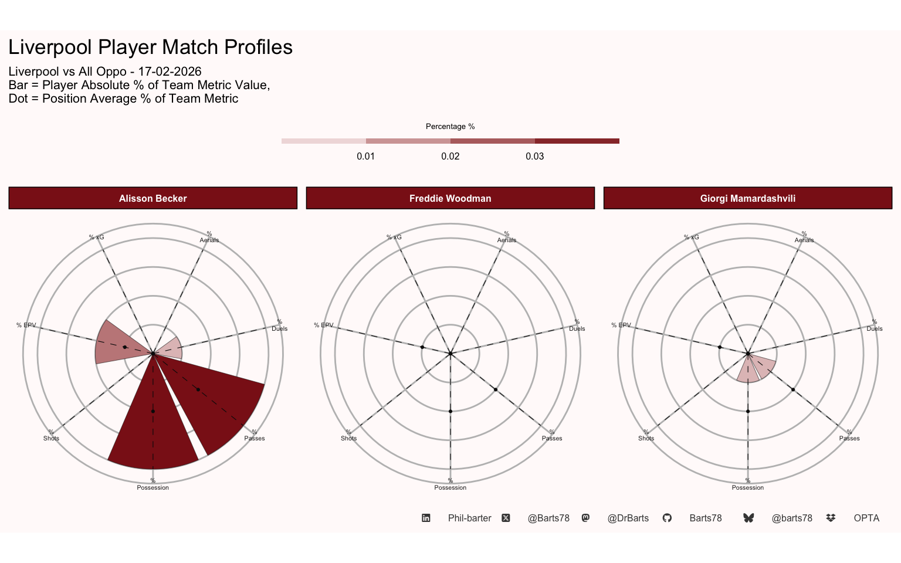
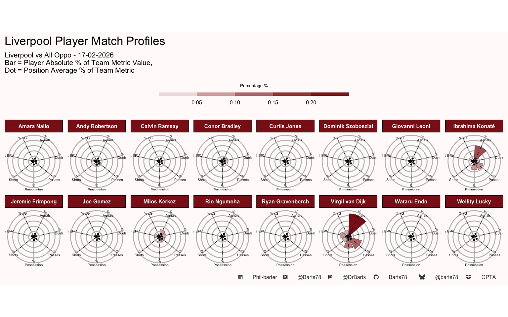
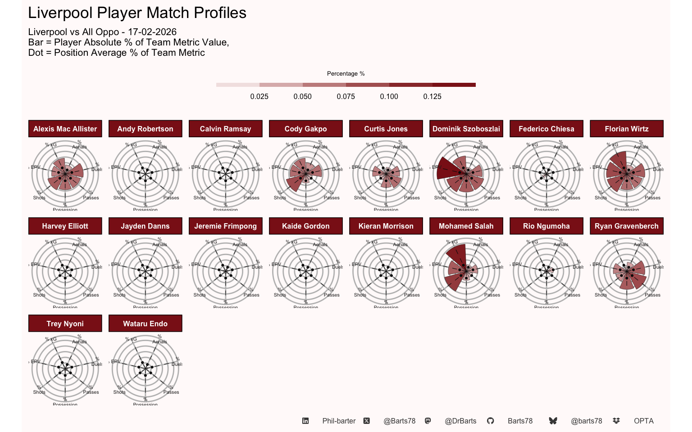
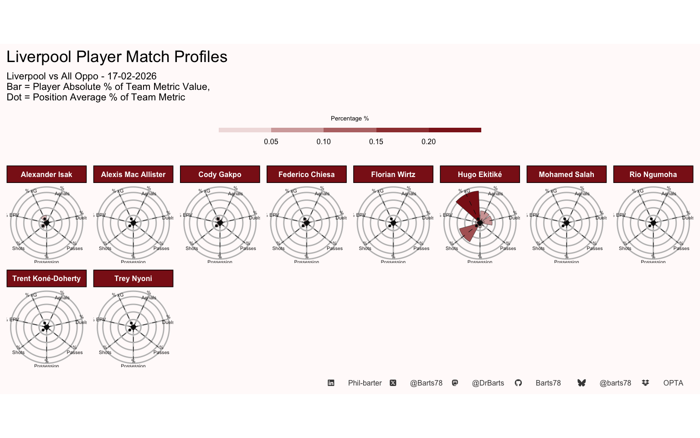

| Liverpool Player Season Possession Totals | |||||||||||||||||||||
| Up to - Liverpool vs All Oppo - 17-02-2026 | |||||||||||||||||||||
| Mins | % of Team Possession |
Expected Metrics
|
Passes
|
receiving
|
|||||||||||||||||
|---|---|---|---|---|---|---|---|---|---|---|---|---|---|---|---|---|---|---|---|---|---|
| xA | xT | Attempted Passes | Successful Passes | Pass Success % | Assists | BCs | Key Passes | Long Ps | Final 3rd P | Prog Ps | PK Box P | Pass Received | PPs Received | KPs Recieved | Recieveing Suc | EPV Recieved | EPV Created | % of Team EPV | |||
| Keeper | |||||||||||||||||||||
| Alisson Becker | 2781 | 4% | 0.00 | 0.72 | 890 | 710 | 80% | 0 | 0 | 0 | 309 | 0 | 4 | 0 | 787 | 0 | 0 | 83% | 15.02 | 1.73 | 2% |
| Freddie Woodman | 98 | 0% | 0.00 | 0.01 | 28 | 17 | 61% | 0 | 0 | 0 | 13 | 0 | 0 | 0 | 24 | 0 | 0 | 88% | 0.28 | 0.04 | 0% |
| Giorgi Mamardashvili | 1037 | 1% | 0.00 | 0.21 | 293 | 223 | 76% | 0 | 0 | 0 | 112 | 0 | 0 | 0 | 265 | 0 | 0 | 80% | 4.06 | 0.54 | 0% |
| Average | — | 0.0 | 0.0 | 0.3 | 403.7 | 316.7 | 0.7 | 0.0 | 0.0 | 0.0 | 144.7 | 0.0 | 1.3 | 0.0 | 358.7 | 0.0 | 0.0 | 0.8 | 6.5 | 0.8 | 0.0 |
| Total | — | 0 | 0 | 1 | 1,211 | 950 | 2 | 0 | 0 | 0 | 434 | 0 | 4 | 0 | 1,076 | 0 | 0 | 3 | 19 | 2 | 0 |
| Defender | |||||||||||||||||||||
| Amara Nallo | 43 | 0% | 0.00 | 0.02 | 22 | 19 | 86% | 0 | 0 | 0 | 2 | 0 | 0 | 0 | 18 | 0 | 0 | 83% | 0.13 | 0.05 | 0% |
| Andy Robertson | 1516 | 4% | 0.00 | 4.74 | 965 | 835 | 87% | 1 | 0 | 27 | 107 | 259 | 93 | 16 | 1000 | 30 | 2 | 88% | 4.11 | 5.59 | 5% |
| Calvin Ramsay | 98 | 0% | 0.00 | 0.04 | 50 | 41 | 82% | 0 | 0 | 0 | 5 | 3 | 1 | 0 | 66 | 2 | 0 | 77% | 0.39 | 0.10 | 0% |
| Conor Bradley | 1356 | 4% | 0.56 | 2.56 | 661 | 556 | 84% | 1 | 2 | 6 | 84 | 185 | 58 | 16 | 739 | 25 | 4 | 79% | 3.64 | 3.23 | 3% |
| Curtis Jones | 220 | 1% | 0.23 | 0.40 | 149 | 139 | 93% | 0 | 1 | 3 | 10 | 38 | 24 | 3 | 1529 | 115 | 19 | 92% | 7.12 | 0.63 | 1% |
| Dominik Szoboszlai | 823 | 2% | 0.13 | 3.54 | 505 | 449 | 89% | 0 | 0 | 16 | 92 | 130 | 41 | 5 | 2129 | 244 | 47 | 88% | 9.65 | 4.00 | 3% |
| Giovanni Leoni | 82 | 0% | 0.00 | 0.06 | 91 | 88 | 97% | 0 | 0 | 0 | 1 | 2 | 4 | 0 | 88 | 0 | 0 | 90% | 0.22 | 0.16 | 0% |
| Ibrahima Konaté | 3096 | 8% | 1.10 | 2.54 | 1933 | 1735 | 90% | 0 | 6 | 7 | 146 | 83 | 121 | 4 | 1857 | 14 | 3 | 78% | 10.41 | 5.06 | 4% |
| Jeremie Frimpong | 776 | 2% | 0.36 | 2.21 | 322 | 278 | 86% | 1 | 1 | 8 | 20 | 128 | 41 | 18 | 495 | 32 | 6 | 83% | 3.57 | 2.39 | 2% |
| Joe Gomez | 862 | 2% | 0.07 | 1.40 | 516 | 451 | 87% | 2 | 0 | 4 | 51 | 52 | 38 | 6 | 541 | 7 | 0 | 81% | 2.18 | 1.84 | 2% |
| Milos Kerkez | 2477 | 6% | 0.08 | 3.91 | 1060 | 907 | 86% | 2 | 1 | 29 | 125 | 308 | 65 | 18 | 1181 | 45 | 6 | 82% | 5.47 | 5.39 | 5% |
| Rio Ngumoha | 13 | 0% | 0.00 | 0.04 | 13 | 12 | 92% | 0 | 0 | 2 | 0 | 10 | 2 | 1 | 193 | 10 | 4 | 98% | 1.10 | 0.04 | 0% |
| Ryan Gravenberch | 94 | 0% | 0.00 | 0.10 | 64 | 60 | 94% | 0 | 0 | 2 | 6 | 7 | 4 | 2 | 1836 | 211 | 22 | 87% | 7.98 | 0.23 | 0% |
| Virgil van Dijk | 3720 | 11% | 1.89 | 4.74 | 2882 | 2590 | 90% | 1 | 10 | 14 | 323 | 133 | 214 | 21 | 2659 | 33 | 4 | 81% | 14.62 | 8.90 | 8% |
| Wataru Endo | 426 | 1% | 0.00 | 0.48 | 238 | 212 | 89% | 0 | 0 | 2 | 17 | 30 | 18 | 1 | 316 | 18 | 1 | 80% | 1.55 | 0.66 | 1% |
| Wellity Lucky | 26 | 0% | 0.00 | 0.00 | 21 | 21 | 100% | 0 | 0 | 0 | 0 | 1 | 0 | 0 | 19 | 0 | 0 | 84% | 0.08 | 0.03 | 0% |
| Average | — | 0.0 | 0.3 | 1.7 | 593.2 | 524.6 | 0.9 | 0.5 | 1.3 | 7.5 | 61.8 | 85.6 | 45.2 | 6.9 | 916.6 | 49.1 | 7.4 | 0.8 | 4.5 | 2.4 | 0.0 |
| Total | — | 0 | 4 | 27 | 9,492 | 8,393 | 14 | 8 | 21 | 120 | 989 | 1,369 | 724 | 111 | 14,666 | 786 | 118 | 14 | 72 | 38 | 0 |
| Midfielder | |||||||||||||||||||||
| Alexis Mac Allister | 2792 | 7% | 1.35 | 4.67 | 1533 | 1335 | 87% | 0 | 8 | 29 | 101 | 381 | 125 | 12 | 1482 | 178 | 25 | 89% | 6.54 | 6.44 | 6% |
| Andy Robertson | 24 | 0% | 0.00 | 0.04 | 9 | 6 | 67% | 0 | 0 | 0 | 1 | 4 | 1 | 0 | 1000 | 30 | 2 | 88% | 4.11 | 0.05 | 0% |
| Calvin Ramsay | 6 | 0% | 0.00 | 0.00 | 1 | 1 | 100% | 0 | 0 | 0 | 0 | 0 | 0 | 0 | 66 | 2 | 0 | 77% | 0.39 | 0.00 | 0% |
| Cody Gakpo | 2006 | 4% | 1.81 | 6.76 | 577 | 460 | 80% | 3 | 7 | 52 | 34 | 348 | 95 | 53 | 919 | 129 | 49 | 90% | 7.22 | 7.84 | 7% |
| Curtis Jones | 1872 | 6% | 1.01 | 5.11 | 1449 | 1347 | 93% | 1 | 1 | 21 | 66 | 373 | 153 | 17 | 1529 | 115 | 19 | 92% | 7.12 | 6.66 | 6% |
| Dominik Szoboszlai | 2670 | 8% | 0.56 | 11.65 | 1764 | 1566 | 89% | 7 | 7 | 61 | 206 | 569 | 161 | 27 | 2129 | 244 | 47 | 88% | 9.65 | 14.88 | 13% |
| Federico Chiesa | 363 | 1% | 0.06 | 1.06 | 110 | 76 | 69% | 2 | 1 | 6 | 5 | 57 | 19 | 14 | 239 | 58 | 16 | 91% | 2.44 | 1.04 | 1% |
| Florian Wirtz | 2579 | 7% | 1.99 | 9.14 | 1455 | 1219 | 84% | 4 | 10 | 65 | 82 | 719 | 215 | 85 | 1444 | 288 | 40 | 92% | 8.41 | 10.00 | 9% |
| Harvey Elliott | 8 | 0% | 0.00 | 0.03 | 8 | 4 | 50% | 0 | 0 | 0 | 2 | 4 | 0 | 0 | 7 | 1 | 0 | 100% | 0.02 | 0.02 | 0% |
| Jayden Danns | 22 | 0% | 0.00 | 0.03 | 6 | 5 | 83% | 0 | 0 | 1 | 0 | 3 | 0 | 0 | 4 | 2 | 0 | 100% | 0.05 | 0.03 | 0% |
| Jeremie Frimpong | 317 | 1% | 0.00 | 0.74 | 98 | 80 | 82% | 0 | 0 | 3 | 4 | 59 | 8 | 7 | 495 | 32 | 6 | 83% | 3.57 | 0.67 | 1% |
| Kaide Gordon | 26 | 0% | 0.00 | 0.01 | 6 | 3 | 50% | 0 | 0 | 0 | 0 | 0 | 1 | 0 | 8 | 1 | 0 | 88% | 0.03 | 0.01 | 0% |
| Kieran Morrison | 72 | 0% | 0.00 | 0.02 | 23 | 13 | 57% | 0 | 0 | 1 | 0 | 12 | 1 | 2 | 23 | 1 | 0 | 96% | 0.13 | 0.06 | 0% |
| Mohamed Salah | 2020 | 4% | 1.56 | 8.24 | 642 | 494 | 77% | 6 | 17 | 58 | 56 | 411 | 132 | 55 | 922 | 149 | 40 | 94% | 8.13 | 9.31 | 8% |
| Rio Ngumoha | 458 | 1% | 0.03 | 0.94 | 158 | 133 | 84% | 0 | 1 | 9 | 4 | 115 | 22 | 18 | 193 | 10 | 4 | 98% | 1.10 | 1.34 | 1% |
| Ryan Gravenberch | 3159 | 8% | 0.22 | 3.63 | 1879 | 1686 | 90% | 4 | 0 | 27 | 82 | 439 | 132 | 13 | 1836 | 211 | 22 | 87% | 7.98 | 6.35 | 6% |
| Trey Nyoni | 238 | 1% | 0.01 | 0.14 | 131 | 120 | 92% | 0 | 0 | 2 | 1 | 27 | 9 | 0 | 134 | 14 | 1 | 89% | 0.62 | 0.33 | 0% |
| Wataru Endo | 148 | 0% | 0.00 | 0.16 | 90 | 77 | 86% | 0 | 0 | 1 | 1 | 13 | 4 | 2 | 316 | 18 | 1 | 80% | 1.55 | 0.31 | 0% |
| Average | — | 0.0 | 0.5 | 2.9 | 552.2 | 479.2 | 0.8 | 1.5 | 2.9 | 18.7 | 35.8 | 196.3 | 59.9 | 16.9 | 708.1 | 82.4 | 15.1 | 0.9 | 3.8 | 3.6 | 0.0 |
| Total | — | 0 | 9 | 52 | 9,939 | 8,625 | 14 | 27 | 52 | 336 | 645 | 3,534 | 1,078 | 305 | 12,746 | 1,483 | 272 | 16 | 69 | 65 | 1 |
| Forward | |||||||||||||||||||||
| Alexander Isak | 899 | 1% | 1.03 | 0.47 | 119 | 87 | 73% | 0 | 9 | 5 | 3 | 69 | 6 | 9 | 154 | 60 | 19 | 92% | 2.13 | 0.71 | 1% |
| Alexis Mac Allister | 19 | 0% | 0.00 | 0.02 | 7 | 6 | 86% | 0 | 0 | 1 | 1 | 1 | 1 | 0 | 1482 | 178 | 25 | 89% | 6.54 | 0.04 | 0% |
| Cody Gakpo | 660 | 1% | 0.60 | 1.70 | 189 | 159 | 84% | 0 | 5 | 7 | 14 | 119 | 23 | 12 | 919 | 129 | 49 | 90% | 7.22 | 1.48 | 1% |
| Federico Chiesa | 487 | 1% | 0.44 | 0.55 | 100 | 83 | 83% | 0 | 4 | 4 | 7 | 47 | 11 | 8 | 239 | 58 | 16 | 91% | 2.44 | 0.67 | 1% |
| Florian Wirtz | 116 | 0% | 0.00 | 0.14 | 49 | 45 | 92% | 0 | 0 | 2 | 3 | 19 | 4 | 0 | 1444 | 288 | 40 | 92% | 8.41 | 0.17 | 0% |
| Hugo Ekitiké | 2419 | 3% | 4.04 | 3.79 | 509 | 395 | 78% | 4 | 32 | 25 | 5 | 309 | 37 | 56 | 636 | 246 | 48 | 93% | 9.97 | 3.58 | 3% |
| Mohamed Salah | 431 | 1% | 0.79 | 1.80 | 135 | 103 | 76% | 2 | 3 | 8 | 4 | 103 | 41 | 11 | 922 | 149 | 40 | 94% | 8.13 | 2.02 | 2% |
| Rio Ngumoha | 20 | 0% | 0.00 | 0.16 | 8 | 7 | 88% | 0 | 0 | 0 | 0 | 7 | 3 | 2 | 193 | 10 | 4 | 98% | 1.10 | 0.15 | 0% |
| Trent Koné-Doherty | 7 | 0% | 0.00 | 0.01 | 5 | 5 | 100% | 0 | 0 | 0 | 1 | 2 | 1 | 0 | 6 | 0 | 0 | 100% | 0.01 | 0.03 | 0% |
| Trey Nyoni | 1 | 0% | 0.00 | 0.00 | 1 | 1 | 100% | 0 | 0 | 0 | 0 | 0 | 0 | 0 | 134 | 14 | 1 | 89% | 0.62 | 0.00 | 0% |
| Average | — | 0.0 | 0.7 | 0.9 | 112.2 | 89.1 | 0.9 | 0.6 | 5.3 | 5.2 | 3.8 | 67.6 | 12.7 | 9.8 | 612.9 | 113.2 | 24.2 | 0.9 | 4.7 | 0.9 | 0.0 |
| Total | — | 0 | 7 | 9 | 1,122 | 891 | 9 | 6 | 53 | 52 | 38 | 676 | 127 | 98 | 6,129 | 1,132 | 242 | 9 | 47 | 9 | 0 |
| Team Average | — | 0.0 | 0.4 | 1.9 | 463.1 | 401.3 | 0.8 | 0.9 | 2.7 | 10.8 | 44.8 | 118.7 | 41.1 | 10.9 | 736.5 | 72.4 | 13.4 | 0.9 | 4.4 | 2.4 | 0.0 |
| Team Total | — | 1 | 20 | 89 | 21,764 | 18,859 | 39 | 41 | 126 | 508 | 2,106 | 5,579 | 1,933 | 514 | 34,617 | 3,401 | 632 | 42 | 207 | 115 | 1 |
| . Phil-barter . . @Barts78 . . @DrBarts . . Barts78 . . @barts78 . . OPTA . | |||||||||||||||||||||
| Liverpool Player Season Touches Totals | |||||||||||||||
| Up to - Liverpool vs All Oppo - 17-02-2026 | |||||||||||||||
| Mins |
Touches (T) Breakdown
|
% Touches Thirds Breakdown
|
Carries Breakdown
|
||||||||||||
|---|---|---|---|---|---|---|---|---|---|---|---|---|---|---|---|
| Touches | Def 3rd | Mid 3rd | Final 3rd | PK Box | Total / Min | Def 3rd % TT | Mid Third % TT | Final 3rd % TT | PK Box % TT | Carries | % Carries Prog | % Carries F 3rd | % Carries D Prog | ||
| Keeper | |||||||||||||||
| Alisson Becker | 2781 | 1194 | 1157 | 36 | 1 | 0 | 0.43 | 97% | 3% | 0% | 0% | 883 | 0% | 0% | 0% |
| Freddie Woodman | 98 | 42 | 42 | 0 | 0 | 0 | 0.43 | 100% | 0% | 0% | 0% | 28 | 0% | 0% | 0% |
| Giorgi Mamardashvili | 1037 | 392 | 384 | 8 | 0 | 0 | 0.38 | 98% | 2% | 0% | 0% | 284 | 0% | 0% | 0% |
| Pos Average | — | 542.7 | 527.7 | 14.7 | 0.3 | 0.0 | 0.4 | 1.0 | 0.0 | 0.0 | 0.0 | 398.3 | 0.0 | 0.0 | 0.0 |
| Pos Total | — | 1,628 | 1,583 | 44 | 1 | 0 | 1 | 3 | 0 | 0 | 0 | 1,195 | 0 | 0 | 0 |
| Defender | |||||||||||||||
| Amara Nallo | 43 | 28 | 9 | 19 | 0 | 0 | 0.65 | 32% | 68% | 0% | 0% | 17 | 18% | 0% | 1% |
| Andy Robertson | 1516 | 1267 | 290 | 584 | 393 | 32 | 0.84 | 23% | 46% | 31% | 3% | 707 | 17% | 32% | 12% |
| Calvin Ramsay | 98 | 84 | 33 | 40 | 11 | 0 | 0.86 | 39% | 48% | 13% | 0% | 41 | 2% | 12% | 0% |
| Conor Bradley | 1356 | 1091 | 289 | 473 | 329 | 39 | 0.80 | 26% | 43% | 30% | 4% | 563 | 17% | 34% | 13% |
| Curtis Jones | 220 | 193 | 46 | 96 | 51 | 4 | 0.88 | 24% | 50% | 26% | 2% | 108 | 27% | 27% | 22% |
| Dominik Szoboszlai | 823 | 732 | 187 | 328 | 217 | 12 | 0.89 | 26% | 45% | 30% | 2% | 397 | 14% | 28% | 11% |
| Giovanni Leoni | 82 | 103 | 32 | 67 | 4 | 1 | 1.26 | 31% | 65% | 4% | 1% | 69 | 1% | 3% | 1% |
| Ibrahima Konaté | 3096 | 2417 | 1014 | 1272 | 131 | 31 | 0.78 | 42% | 53% | 5% | 1% | 1448 | 5% | 5% | 3% |
| Jeremie Frimpong | 776 | 541 | 108 | 194 | 239 | 41 | 0.70 | 20% | 36% | 44% | 8% | 290 | 23% | 47% | 9% |
| Joe Gomez | 862 | 701 | 247 | 350 | 104 | 12 | 0.81 | 35% | 50% | 15% | 2% | 404 | 9% | 10% | 5% |
| Milos Kerkez | 2477 | 1660 | 443 | 697 | 520 | 51 | 0.67 | 27% | 42% | 31% | 3% | 869 | 18% | 33% | 12% |
| Rio Ngumoha | 13 | 16 | 2 | 1 | 13 | 1 | 1.23 | 12% | 6% | 81% | 6% | 6 | 33% | 133% | 25% |
| Ryan Gravenberch | 94 | 72 | 18 | 45 | 9 | 2 | 0.77 | 25% | 62% | 12% | 3% | 54 | 6% | 9% | 0% |
| Virgil van Dijk | 3720 | 3372 | 1324 | 1842 | 206 | 76 | 0.91 | 39% | 55% | 6% | 2% | 2033 | 6% | 5% | 2% |
| Wataru Endo | 426 | 311 | 92 | 170 | 49 | 6 | 0.73 | 30% | 55% | 16% | 2% | 169 | 13% | 14% | 1% |
| Wellity Lucky | 26 | 22 | 15 | 6 | 1 | 0 | 0.85 | 68% | 27% | 5% | 0% | 16 | 0% | 6% | 0% |
| Pos Average | — | 788.1 | 259.3 | 386.5 | 142.3 | 19.2 | 0.9 | 0.3 | 0.5 | 0.2 | 0.0 | 449.4 | 0.1 | 0.2 | 0.1 |
| Pos Total | — | 12,610 | 4,149 | 6,184 | 2,277 | 308 | 14 | 5 | 8 | 4 | 0 | 7,191 | 2 | 4 | 1 |
| Midfielder | |||||||||||||||
| Alexis Mac Allister | 2792 | 1994 | 329 | 1126 | 539 | 56 | 0.71 | 16% | 56% | 27% | 3% | 1076 | 9% | 27% | 5% |
| Andy Robertson | 24 | 14 | 4 | 6 | 4 | 0 | 0.58 | 29% | 43% | 29% | 0% | 5 | 20% | 40% | 30% |
| Calvin Ramsay | 6 | 3 | 1 | 1 | 1 | 0 | 0.50 | 33% | 33% | 33% | 0% | 1 | 0% | 0% | 0% |
| Cody Gakpo | 2006 | 1064 | 83 | 323 | 658 | 147 | 0.53 | 8% | 30% | 62% | 14% | 369 | 23% | 77% | 16% |
| Curtis Jones | 1872 | 1734 | 248 | 1015 | 471 | 36 | 0.93 | 14% | 59% | 27% | 2% | 1072 | 11% | 27% | 8% |
| Dominik Szoboszlai | 2670 | 2346 | 348 | 1113 | 885 | 61 | 0.88 | 15% | 47% | 38% | 3% | 1330 | 14% | 34% | 8% |
| Federico Chiesa | 363 | 192 | 27 | 64 | 101 | 31 | 0.53 | 14% | 33% | 53% | 16% | 54 | 28% | 70% | 11% |
| Florian Wirtz | 2579 | 1952 | 159 | 794 | 999 | 167 | 0.76 | 8% | 41% | 51% | 9% | 901 | 19% | 55% | 10% |
| Harvey Elliott | 8 | 9 | 0 | 5 | 4 | 0 | 1.12 | 0% | 56% | 44% | 0% | 3 | 0% | 67% | 0% |
| Jayden Danns | 22 | 10 | 1 | 5 | 4 | 0 | 0.45 | 10% | 50% | 40% | 0% | 5 | 20% | 40% | 23% |
| Jeremie Frimpong | 317 | 174 | 21 | 46 | 107 | 21 | 0.55 | 12% | 26% | 61% | 12% | 76 | 20% | 79% | 14% |
| Kaide Gordon | 26 | 12 | 1 | 7 | 4 | 1 | 0.46 | 8% | 58% | 33% | 8% | 3 | 0% | 0% | 0% |
| Kieran Morrison | 72 | 29 | 3 | 10 | 16 | 3 | 0.40 | 10% | 34% | 55% | 10% | 11 | 9% | 64% | 0% |
| Mohamed Salah | 2020 | 1071 | 71 | 271 | 729 | 165 | 0.53 | 7% | 25% | 68% | 15% | 353 | 24% | 80% | 21% |
| Rio Ngumoha | 458 | 270 | 13 | 64 | 193 | 37 | 0.59 | 5% | 24% | 71% | 14% | 119 | 28% | 82% | 13% |
| Ryan Gravenberch | 3159 | 2387 | 491 | 1324 | 572 | 23 | 0.76 | 21% | 55% | 24% | 1% | 1443 | 8% | 24% | 4% |
| Trey Nyoni | 238 | 164 | 32 | 96 | 36 | 0 | 0.69 | 20% | 59% | 22% | 0% | 93 | 8% | 23% | 2% |
| Wataru Endo | 148 | 134 | 37 | 76 | 21 | 2 | 0.91 | 28% | 57% | 16% | 1% | 73 | 10% | 16% | 8% |
| Pos Average | — | 753.3 | 103.8 | 352.6 | 296.9 | 41.7 | 0.7 | 0.1 | 0.4 | 0.4 | 0.1 | 388.2 | 0.1 | 0.4 | 0.1 |
| Pos Total | — | 13,559 | 1,869 | 6,346 | 5,344 | 750 | 12 | 3 | 8 | 8 | 1 | 6,987 | 3 | 8 | 2 |
| Forward | |||||||||||||||
| Alexander Isak | 899 | 237 | 19 | 72 | 146 | 43 | 0.26 | 8% | 30% | 62% | 18% | 65 | 20% | 74% | 17% |
| Alexis Mac Allister | 19 | 7 | 0 | 6 | 1 | 0 | 0.37 | 0% | 86% | 14% | 0% | 5 | 20% | 20% | 6% |
| Cody Gakpo | 660 | 300 | 20 | 83 | 197 | 42 | 0.45 | 7% | 28% | 66% | 14% | 122 | 26% | 84% | 9% |
| Federico Chiesa | 487 | 205 | 21 | 68 | 116 | 40 | 0.42 | 10% | 33% | 57% | 20% | 65 | 15% | 49% | 13% |
| Florian Wirtz | 116 | 63 | 4 | 33 | 26 | 2 | 0.54 | 6% | 52% | 41% | 3% | 40 | 5% | 40% | 0% |
| Hugo Ekitiké | 2419 | 1004 | 65 | 313 | 626 | 204 | 0.42 | 6% | 31% | 62% | 20% | 319 | 13% | 71% | 10% |
| Mohamed Salah | 431 | 250 | 13 | 42 | 195 | 32 | 0.58 | 5% | 17% | 78% | 13% | 74 | 34% | 111% | 16% |
| Rio Ngumoha | 20 | 13 | 0 | 1 | 12 | 3 | 0.65 | 0% | 8% | 92% | 23% | 6 | 50% | 100% | 2% |
| Trent Koné-Doherty | 7 | 6 | 1 | 2 | 3 | 0 | 0.86 | 17% | 33% | 50% | 0% | 5 | 20% | 40% | 1% |
| Trey Nyoni | 1 | 1 | 0 | 1 | 0 | 0 | 1.00 | 0% | 100% | 0% | 0% | 0 | 0% | 0% | 0% |
| Pos Average | — | 208.6 | 14.3 | 62.1 | 132.2 | 36.6 | 0.6 | 0.1 | 0.4 | 0.5 | 0.1 | 70.1 | 0.2 | 0.6 | 0.1 |
| Pos Total | — | 2,086 | 143 | 621 | 1,322 | 366 | 6 | 1 | 4 | 5 | 1 | 701 | 2 | 6 | 1 |
| Team Average | — | 635.8 | 164.8 | 280.7 | 190.3 | 30.3 | 0.7 | 0.2 | 0.4 | 0.3 | 0.1 | 342.0 | 0.1 | 0.4 | 0.1 |
| Team Total | — | 29,883 | 7,744 | 13,195 | 8,944 | 1,424 | 32 | 11 | 20 | 16 | 3 | 16,074 | 7 | 18 | 4 |
| . Phil-barter . . @Barts78 . . @DrBarts . . Barts78 . . @barts78 . . OPTA . | |||||||||||||||
| Liverpool Player Season Shooting Totals | |||||||||||||
| Up to - Liverpool vs All Oppo - 17-02-2026 | |||||||||||||
| Mins | Total Shots | SoT | 6 yard box | PK Box Shot | Out Box Shots | Blocked Shot | Goals | xG | xGOT | xG/Shot | Shot Accuracy | Shot Quality | |
|---|---|---|---|---|---|---|---|---|---|---|---|---|---|
| Keeper | |||||||||||||
| Alisson Becker | 2781 | 0 | 0 | 0 | 0 | 0 | 0 | 0 | 0.00 | 0.00 | 0.00 | 0% | 0% |
| Freddie Woodman | 98 | 0 | 0 | 0 | 0 | 0 | 0 | 0 | 0.00 | 0.00 | 0.00 | 0% | 0% |
| Giorgi Mamardashvili | 1037 | 0 | 0 | 0 | 0 | 0 | 0 | 0 | 0.00 | 0.00 | 0.00 | 0% | 0% |
| Pos Average | — | 0.0 | 0.0 | 0.0 | 0.0 | 0.0 | 0.0 | 0.0 | 0.0 | 0.0 | 0.0 | 0.0 | 0.0 |
| Pos Total | — | 0 | 0 | 0 | 0 | 0 | 0 | 0 | 0 | 0 | 0 | 0 | 0 |
| Defender | |||||||||||||
| Amara Nallo | 43 | 0 | 0 | 0 | 0 | 0 | 0 | 0 | 0.00 | 0.00 | 0.00 | 0% | 0% |
| Andy Robertson | 1516 | 7 | 2 | 1 | 5 | 2 | 3 | 1 | 0.51 | 0.79 | 0.07 | 29% | 55% |
| Calvin Ramsay | 98 | 1 | 0 | 0 | 0 | 1 | 0 | 0 | 0.02 | 0.00 | 0.02 | 0% | −100% |
| Conor Bradley | 1356 | 10 | 3 | 0 | 8 | 2 | 4 | 0 | 0.60 | 0.38 | 0.06 | 30% | −37% |
| Curtis Jones | 220 | 4 | 1 | 1 | 1 | 3 | 1 | 1 | 0.59 | 0.86 | 0.15 | 25% | 46% |
| Dominik Szoboszlai | 823 | 14 | 6 | 0 | 1 | 13 | 5 | 2 | 0.52 | 0.43 | 0.04 | 43% | −17% |
| Giovanni Leoni | 82 | 0 | 0 | 0 | 0 | 0 | 0 | 0 | 0.00 | 0.00 | 0.00 | 0% | 0% |
| Ibrahima Konaté | 3096 | 15 | 4 | 3 | 14 | 1 | 4 | 2 | 1.69 | 1.80 | 0.11 | 27% | 7% |
| Jeremie Frimpong | 776 | 10 | 2 | 0 | 9 | 1 | 5 | 1 | 0.59 | 0.18 | 0.06 | 20% | −69% |
| Joe Gomez | 862 | 3 | 0 | 0 | 3 | 0 | 0 | 0 | 0.24 | 0.00 | 0.08 | 0% | −100% |
| Milos Kerkez | 2477 | 12 | 2 | 1 | 9 | 3 | 4 | 1 | 1.39 | 0.93 | 0.12 | 17% | −33% |
| Rio Ngumoha | 13 | 0 | 0 | 0 | 0 | 0 | 0 | 0 | 0.00 | 0.00 | 0.00 | 0% | 0% |
| Ryan Gravenberch | 94 | 0 | 0 | 0 | 0 | 0 | 0 | 0 | 0.00 | 0.00 | 0.00 | 0% | 0% |
| Virgil van Dijk | 3720 | 39 | 13 | 11 | 36 | 3 | 8 | 5 | 4.12 | 4.87 | 0.11 | 33% | 18% |
| Wataru Endo | 426 | 2 | 1 | 1 | 1 | 1 | 1 | 0 | 0.11 | 0.09 | 0.06 | 50% | −18% |
| Wellity Lucky | 26 | 0 | 0 | 0 | 0 | 0 | 0 | 0 | 0.00 | 0.00 | 0.00 | 0% | 0% |
| Pos Average | — | 7.3 | 2.1 | 1.1 | 5.4 | 1.9 | 2.2 | 0.8 | 0.6 | 0.6 | 0.1 | 0.2 | −0.2 |
| Pos Total | — | 117 | 34 | 18 | 87 | 30 | 35 | 13 | 10 | 10 | 1 | 3 | −2 |
| Midfielder | |||||||||||||
| Alexis Mac Allister | 2792 | 53 | 13 | 4 | 27 | 26 | 23 | 4 | 5.38 | 3.60 | 0.10 | 25% | −33% |
| Andy Robertson | 24 | 0 | 0 | 0 | 0 | 0 | 0 | 0 | 0.00 | 0.00 | 0.00 | 0% | 0% |
| Calvin Ramsay | 6 | 0 | 0 | 0 | 0 | 0 | 0 | 0 | 0.00 | 0.00 | 0.00 | 0% | 0% |
| Cody Gakpo | 2006 | 55 | 14 | 4 | 38 | 17 | 23 | 5 | 5.40 | 4.78 | 0.10 | 25% | −11% |
| Curtis Jones | 1872 | 21 | 6 | 2 | 12 | 9 | 9 | 0 | 1.64 | 1.54 | 0.08 | 29% | −6% |
| Dominik Szoboszlai | 2670 | 60 | 26 | 0 | 19 | 41 | 18 | 9 | 5.66 | 4.93 | 0.09 | 43% | −13% |
| Federico Chiesa | 363 | 11 | 3 | 0 | 7 | 4 | 5 | 1 | 0.68 | 0.91 | 0.06 | 27% | 34% |
| Florian Wirtz | 2579 | 58 | 20 | 1 | 39 | 19 | 25 | 6 | 7.37 | 7.90 | 0.13 | 34% | 7% |
| Harvey Elliott | 8 | 0 | 0 | 0 | 0 | 0 | 0 | 0 | 0.00 | 0.00 | 0.00 | 0% | 0% |
| Jayden Danns | 22 | 0 | 0 | 0 | 0 | 0 | 0 | 0 | 0.00 | 0.00 | 0.00 | 0% | 0% |
| Jeremie Frimpong | 317 | 1 | 0 | 0 | 1 | 0 | 0 | 0 | 0.02 | 0.00 | 0.02 | 0% | −100% |
| Kaide Gordon | 26 | 1 | 0 | 0 | 1 | 0 | 0 | 0 | 0.05 | 0.00 | 0.05 | 0% | −100% |
| Kieran Morrison | 72 | 2 | 0 | 0 | 1 | 1 | 1 | 0 | 0.22 | 0.00 | 0.11 | 0% | −100% |
| Mohamed Salah | 2020 | 63 | 18 | 2 | 53 | 10 | 22 | 7 | 8.94 | 7.37 | 0.14 | 29% | −18% |
| Rio Ngumoha | 458 | 5 | 1 | 0 | 5 | 0 | 3 | 1 | 0.68 | 0.87 | 0.14 | 20% | 28% |
| Ryan Gravenberch | 3159 | 32 | 9 | 0 | 7 | 25 | 13 | 4 | 1.53 | 2.39 | 0.05 | 28% | 56% |
| Trey Nyoni | 238 | 1 | 0 | 0 | 0 | 1 | 1 | 0 | 0.05 | 0.00 | 0.05 | 0% | −100% |
| Wataru Endo | 148 | 0 | 0 | 0 | 0 | 0 | 0 | 0 | 0.00 | 0.00 | 0.00 | 0% | 0% |
| Pos Average | — | 20.2 | 6.1 | 0.7 | 11.7 | 8.5 | 7.9 | 2.1 | 2.1 | 1.9 | 0.1 | 0.1 | −0.2 |
| Pos Total | — | 363 | 110 | 13 | 210 | 153 | 143 | 37 | 38 | 34 | 1 | 3 | −4 |
| Forward | |||||||||||||
| Alexander Isak | 899 | 25 | 11 | 2 | 22 | 3 | 3 | 3 | 3.45 | 2.96 | 0.14 | 44% | −14% |
| Alexis Mac Allister | 19 | 0 | 0 | 0 | 0 | 0 | 0 | 0 | 0.00 | 0.00 | 0.00 | 0% | 0% |
| Cody Gakpo | 660 | 21 | 4 | 3 | 15 | 6 | 11 | 2 | 2.74 | 2.17 | 0.13 | 19% | −21% |
| Federico Chiesa | 487 | 17 | 4 | 0 | 15 | 2 | 8 | 2 | 2.32 | 1.71 | 0.14 | 24% | −26% |
| Florian Wirtz | 116 | 0 | 0 | 0 | 0 | 0 | 0 | 0 | 0.00 | 0.00 | 0.00 | 0% | 0% |
| Hugo Ekitiké | 2419 | 90 | 28 | 15 | 70 | 20 | 23 | 14 | 15.36 | 12.42 | 0.17 | 31% | −19% |
| Mohamed Salah | 431 | 12 | 5 | 0 | 9 | 3 | 2 | 0 | 1.45 | 0.69 | 0.12 | 42% | −52% |
| Rio Ngumoha | 20 | 0 | 0 | 0 | 0 | 0 | 0 | 0 | 0.00 | 0.00 | 0.00 | 0% | 0% |
| Trent Koné-Doherty | 7 | 0 | 0 | 0 | 0 | 0 | 0 | 0 | 0.00 | 0.00 | 0.00 | 0% | 0% |
| Trey Nyoni | 1 | 0 | 0 | 0 | 0 | 0 | 0 | 0 | 0.00 | 0.00 | 0.00 | 0% | 0% |
| Pos Average | — | 16.5 | 5.2 | 2.0 | 13.1 | 3.4 | 4.7 | 2.1 | 2.5 | 2.0 | 0.1 | 0.2 | −0.1 |
| Pos Total | — | 165 | 52 | 20 | 131 | 34 | 47 | 21 | 25 | 20 | 1 | 2 | −1 |
| Team Average | — | 13.7 | 4.2 | 1.1 | 9.1 | 4.6 | 4.8 | 1.5 | 1.6 | 1.4 | 0.1 | 0.1 | −0.2 |
| Team Total | — | 645 | 196 | 51 | 428 | 217 | 225 | 71 | 73 | 65 | 3 | 7 | −7 |
| . Phil-barter . . @Barts78 . . @DrBarts . . Barts78 . . @barts78 . . OPTA . | |||||||||||||
| Liverpool Player Season Defensive Totals | ||||||||||||||||||||||
| Up to - Liverpool vs All Oppo - 17-02-2026 | ||||||||||||||||||||||
| Mins |
Duels Breakdown
|
Tackles Total | Tackles Won | Tackles Lost | Interceptions Total | Recoverys Total | Clearances Total | Fouls Total | Fouls Conceeded | Fouls Received | Offside Won | Offside Lost |
Defensive Threat
|
Possession Control | ||||||||
|---|---|---|---|---|---|---|---|---|---|---|---|---|---|---|---|---|---|---|---|---|---|---|
| Aerials Total | Aerials Won | Aerial Success % | Duels Total | Duels Won | Duel Success | EPV Faced | EPV Won | EPV Lost | ||||||||||||||
| Keeper | ||||||||||||||||||||||
| Alisson Becker | 2781 | 4 | 3 | 75% | 15 | 13 | 87% | 1 | 0 | 1 | 0 | 58 | 17 | 6 | 5 | 1 | 0 | 1 | 0.39 | 100% | 0% | -123 |
| Freddie Woodman | 98 | 0 | 0 | 0% | 0 | 0 | 0% | 0 | 0 | 0 | 0 | 0 | 1 | 0 | 0 | 0 | 0 | 0 | 0.00 | 100% | 0% | -11 |
| Giorgi Mamardashvili | 1037 | 4 | 3 | 75% | 3 | 2 | 67% | 0 | 0 | 0 | 0 | 13 | 7 | 2 | 1 | 1 | 0 | 1 | 0.05 | 100% | 0% | -57 |
| Pos Average | — | 2.7 | 2.0 | 0.5 | 6.0 | 5.0 | 0.5 | 0.3 | 0.0 | 0.3 | 0.0 | 23.7 | 8.3 | 2.7 | 2.0 | 0.7 | 0.0 | 0.7 | 0.1 | 1.0 | 0.0 | −63.7 |
| Pos Total | — | 8 | 6 | 2 | 18 | 15 | 2 | 1 | 0 | 1 | 0 | 71 | 25 | 8 | 6 | 2 | 0 | 2 | 0 | 3 | 0 | −191 |
| Defender | ||||||||||||||||||||||
| Amara Nallo | 43 | 0 | 0 | 0% | 3 | 1 | 33% | 2 | 1 | 1 | 0 | 0 | 0 | 1 | 0 | 1 | 0 | 0 | 0.00 | 100% | 0% | -4 |
| Andy Robertson | 1516 | 24 | 13 | 54% | 50 | 19 | 38% | 28 | 20 | 8 | 15 | 58 | 29 | 12 | 2 | 10 | 2 | 3 | 0.58 | 87% | 13% | -121 |
| Calvin Ramsay | 98 | 1 | 1 | 100% | 8 | 5 | 62% | 0 | 0 | 0 | 0 | 7 | 5 | 7 | 5 | 2 | 0 | 0 | 0.02 | 96% | 4% | -7 |
| Conor Bradley | 1356 | 38 | 18 | 47% | 131 | 55 | 42% | 40 | 22 | 18 | 15 | 64 | 38 | 47 | 24 | 23 | 1 | 1 | 0.88 | 76% | 24% | -110 |
| Curtis Jones | 220 | 2 | 1 | 50% | 6 | 3 | 50% | 3 | 2 | 1 | 4 | 9 | 4 | 2 | 2 | 0 | 0 | 1 | 0.04 | 63% | 37% | -6 |
| Dominik Szoboszlai | 823 | 13 | 5 | 38% | 48 | 20 | 42% | 21 | 14 | 7 | 6 | 41 | 23 | 11 | 5 | 6 | 3 | 2 | 0.32 | 47% | 53% | -65 |
| Giovanni Leoni | 82 | 3 | 3 | 100% | 2 | 0 | 0% | 1 | 1 | 0 | 3 | 3 | 6 | 1 | 0 | 1 | 2 | 0 | 0.01 | 79% | 21% | 7 |
| Ibrahima Konaté | 3096 | 153 | 112 | 73% | 136 | 64 | 47% | 54 | 47 | 7 | 30 | 112 | 195 | 69 | 32 | 37 | 21 | 7 | 3.34 | 89% | 11% | 8 |
| Jeremie Frimpong | 776 | 10 | 2 | 20% | 66 | 28 | 42% | 24 | 14 | 10 | 4 | 39 | 16 | 19 | 11 | 8 | 1 | 1 | 0.22 | 74% | 26% | -75 |
| Joe Gomez | 862 | 25 | 16 | 64% | 33 | 7 | 21% | 13 | 8 | 5 | 12 | 31 | 45 | 14 | 1 | 13 | 3 | 3 | 0.64 | 78% | 22% | -44 |
| Milos Kerkez | 2477 | 75 | 37 | 49% | 148 | 69 | 47% | 66 | 55 | 11 | 15 | 89 | 77 | 46 | 25 | 21 | 7 | 2 | 1.87 | 57% | 43% | -139 |
| Rio Ngumoha | 13 | 0 | 0 | 0% | 2 | 1 | 50% | 0 | 0 | 0 | 0 | 0 | 0 | 0 | 0 | 0 | 0 | 0 | 0.00 | 0% | 0% | -3 |
| Ryan Gravenberch | 94 | 0 | 0 | 0% | 1 | 0 | 0% | 0 | 0 | 0 | 2 | 10 | 0 | 1 | 0 | 1 | 0 | 0 | 0.00 | 0% | 100% | 7 |
| Virgil van Dijk | 3720 | 228 | 174 | 76% | 62 | 30 | 48% | 21 | 19 | 2 | 23 | 94 | 266 | 38 | 17 | 21 | 12 | 7 | 3.01 | 98% | 2% | -89 |
| Wataru Endo | 426 | 14 | 10 | 71% | 32 | 10 | 31% | 16 | 12 | 4 | 2 | 14 | 13 | 9 | 4 | 5 | 0 | 0 | 0.62 | 93% | 7% | -15 |
| Wellity Lucky | 26 | 0 | 0 | 0% | 0 | 0 | 0% | 0 | 0 | 0 | 0 | 1 | 1 | 0 | 0 | 0 | 0 | 0 | 0.00 | 0% | 0% | 1 |
| Pos Average | — | 36.6 | 24.5 | 0.5 | 45.5 | 19.5 | 0.3 | 18.1 | 13.4 | 4.6 | 8.2 | 35.8 | 44.9 | 17.3 | 8.0 | 9.3 | 3.2 | 1.7 | 0.7 | 0.6 | 0.2 | −40.9 |
| Pos Total | — | 586 | 392 | 7 | 728 | 312 | 6 | 289 | 215 | 74 | 131 | 572 | 718 | 277 | 128 | 149 | 52 | 27 | 12 | 10 | 4 | −655 |
| Midfielder | ||||||||||||||||||||||
| Alexis Mac Allister | 2792 | 37 | 15 | 41% | 205 | 81 | 40% | 96 | 57 | 39 | 18 | 114 | 39 | 63 | 36 | 27 | 1 | 8 | 1.77 | 49% | 51% | -194 |
| Andy Robertson | 24 | 3 | 1 | 33% | 2 | 1 | 50% | 0 | 0 | 0 | 0 | 2 | 0 | 0 | 0 | 0 | 0 | 1 | 0.00 | 0% | 0% | -4 |
| Calvin Ramsay | 6 | 0 | 0 | 0% | 1 | 0 | 0% | 0 | 0 | 0 | 0 | 0 | 0 | 0 | 0 | 0 | 0 | 0 | 0.00 | 0% | 0% | -2 |
| Cody Gakpo | 2006 | 57 | 36 | 63% | 170 | 76 | 45% | 32 | 20 | 12 | 7 | 68 | 18 | 58 | 35 | 23 | 1 | 3 | 0.16 | 59% | 41% | -253 |
| Curtis Jones | 1872 | 31 | 10 | 32% | 141 | 72 | 51% | 43 | 30 | 13 | 7 | 104 | 17 | 46 | 31 | 15 | 0 | 2 | 0.33 | 59% | 41% | -86 |
| Dominik Szoboszlai | 2670 | 28 | 13 | 46% | 162 | 72 | 44% | 70 | 42 | 28 | 20 | 165 | 36 | 46 | 21 | 25 | 1 | 12 | 0.50 | 83% | 17% | -196 |
| Federico Chiesa | 363 | 5 | 1 | 20% | 32 | 8 | 25% | 5 | 3 | 2 | 5 | 10 | 7 | 12 | 3 | 9 | 0 | 0 | 0.39 | 47% | 53% | -60 |
| Florian Wirtz | 2579 | 45 | 7 | 16% | 208 | 91 | 44% | 51 | 30 | 21 | 12 | 111 | 15 | 51 | 24 | 27 | 0 | 9 | 0.32 | 64% | 36% | -336 |
| Harvey Elliott | 8 | 0 | 0 | 0% | 1 | 0 | 0% | 0 | 0 | 0 | 0 | 0 | 0 | 0 | 0 | 0 | 0 | 0 | 0.00 | 0% | 0% | -5 |
| Jayden Danns | 22 | 2 | 2 | 100% | 1 | 1 | 100% | 1 | 1 | 0 | 0 | 2 | 1 | 0 | 0 | 0 | 0 | 0 | 0.00 | 100% | 0% | 2 |
| Jeremie Frimpong | 317 | 9 | 4 | 44% | 23 | 10 | 43% | 2 | 0 | 2 | 1 | 11 | 4 | 5 | 3 | 2 | 0 | 0 | 0.06 | 98% | 2% | -55 |
| Kaide Gordon | 26 | 2 | 2 | 100% | 2 | 1 | 50% | 1 | 0 | 1 | 0 | 0 | 0 | 1 | 1 | 0 | 0 | 0 | 0.00 | 0% | 0% | -6 |
| Kieran Morrison | 72 | 1 | 1 | 100% | 1 | 0 | 0% | 0 | 0 | 0 | 0 | 2 | 1 | 0 | 0 | 0 | 0 | 0 | 0.08 | 100% | 0% | -11 |
| Mohamed Salah | 2020 | 27 | 10 | 37% | 121 | 47 | 39% | 16 | 8 | 8 | 8 | 67 | 5 | 33 | 22 | 11 | 0 | 5 | 0.06 | 78% | 22% | -333 |
| Rio Ngumoha | 458 | 1 | 0 | 0% | 64 | 30 | 47% | 6 | 3 | 3 | 0 | 9 | 1 | 14 | 8 | 6 | 0 | 0 | 0.02 | 6% | 94% | -69 |
| Ryan Gravenberch | 3159 | 43 | 26 | 60% | 205 | 99 | 48% | 68 | 53 | 15 | 52 | 144 | 53 | 73 | 42 | 31 | 2 | 1 | 2.11 | 87% | 13% | -83 |
| Trey Nyoni | 238 | 4 | 1 | 25% | 14 | 3 | 21% | 8 | 5 | 3 | 3 | 9 | 4 | 3 | 1 | 2 | 0 | 0 | 0.02 | 39% | 61% | -9 |
| Wataru Endo | 148 | 4 | 1 | 25% | 20 | 9 | 45% | 7 | 7 | 0 | 2 | 9 | 6 | 9 | 7 | 2 | 0 | 0 | 0.18 | 85% | 15% | -6 |
| Pos Average | — | 16.6 | 7.2 | 0.4 | 76.3 | 33.4 | 0.4 | 22.6 | 14.4 | 8.2 | 7.5 | 45.9 | 11.5 | 23.0 | 13.0 | 10.0 | 0.3 | 2.3 | 0.3 | 0.5 | 0.2 | −94.8 |
| Pos Total | — | 299 | 130 | 7 | 1,373 | 601 | 7 | 406 | 259 | 147 | 135 | 827 | 207 | 414 | 234 | 180 | 5 | 41 | 6 | 10 | 4 | −1,706 |
| Forward | ||||||||||||||||||||||
| Alexander Isak | 899 | 24 | 7 | 29% | 36 | 11 | 31% | 13 | 10 | 3 | 1 | 15 | 9 | 7 | 1 | 6 | 1 | 2 | 0.26 | 85% | 15% | -77 |
| Alexis Mac Allister | 19 | 0 | 0 | 0% | 0 | 0 | 0% | 0 | 0 | 0 | 0 | 2 | 0 | 0 | 0 | 0 | 0 | 0 | 0.00 | 0% | 0% | 1 |
| Cody Gakpo | 660 | 24 | 8 | 33% | 38 | 15 | 39% | 8 | 6 | 2 | 1 | 12 | 4 | 17 | 9 | 8 | 0 | 2 | 0.08 | 37% | 63% | -78 |
| Federico Chiesa | 487 | 8 | 3 | 38% | 39 | 15 | 38% | 13 | 9 | 4 | 1 | 4 | 3 | 16 | 7 | 9 | 0 | 2 | 0.08 | 54% | 46% | -60 |
| Florian Wirtz | 116 | 0 | 0 | 0% | 10 | 5 | 50% | 3 | 2 | 1 | 0 | 5 | 0 | 3 | 1 | 2 | 0 | 0 | 0.00 | 50% | 50% | -3 |
| Hugo Ekitiké | 2419 | 87 | 36 | 41% | 194 | 74 | 38% | 25 | 18 | 7 | 4 | 45 | 30 | 54 | 16 | 38 | 0 | 5 | 1.43 | 51% | 49% | -307 |
| Mohamed Salah | 431 | 2 | 2 | 100% | 37 | 8 | 22% | 4 | 2 | 2 | 0 | 12 | 4 | 3 | 1 | 2 | 0 | 1 | 0.21 | 99% | 1% | -90 |
| Rio Ngumoha | 20 | 0 | 0 | 0% | 1 | 0 | 0% | 0 | 0 | 0 | 0 | 0 | 0 | 0 | 0 | 0 | 0 | 0 | 0.00 | 0% | 0% | -6 |
| Trent Koné-Doherty | 7 | 0 | 0 | 0% | 1 | 0 | 0% | 0 | 0 | 0 | 0 | 1 | 0 | 0 | 0 | 0 | 0 | 0 | 0.00 | 0% | 0% | 0 |
| Trey Nyoni | 1 | 0 | 0 | 0% | 0 | 0 | 0% | 0 | 0 | 0 | 0 | 0 | 0 | 0 | 0 | 0 | 0 | 0 | 0.00 | 0% | 0% | 0 |
| Pos Average | — | 14.5 | 5.6 | 0.2 | 35.6 | 12.8 | 0.2 | 6.6 | 4.7 | 1.9 | 0.7 | 9.6 | 5.0 | 10.0 | 3.5 | 6.5 | 0.1 | 1.2 | 0.2 | 0.4 | 0.2 | −62.0 |
| Pos Total | — | 145 | 56 | 2 | 356 | 128 | 2 | 66 | 47 | 19 | 7 | 96 | 50 | 100 | 35 | 65 | 1 | 12 | 2 | 4 | 2 | −620 |
| Team Average | — | 22.1 | 12.4 | 0.4 | 52.7 | 22.5 | 0.3 | 16.2 | 11.1 | 5.1 | 5.8 | 33.3 | 21.3 | 17.0 | 8.6 | 8.4 | 1.2 | 1.7 | 0.4 | 0.6 | 0.2 | −67.5 |
| Team Total | — | 1,038 | 584 | 19 | 2,475 | 1,056 | 16 | 762 | 521 | 241 | 273 | 1,566 | 1,000 | 799 | 403 | 396 | 58 | 82 | 20 | 27 | 10 | −3,172 |
| . Phil-barter . . @Barts78 . . @DrBarts . . Barts78 . . @barts78 . . OPTA . | ||||||||||||||||||||||







| Liverpool Player Season Possession P90 | |||||||||||||||||||||
| Up to - Liverpool vs All Oppo - 17-02-2026 | |||||||||||||||||||||
| Mins | % of Team Possession |
Expected Metrics
|
Passes
|
receiving
|
|||||||||||||||||
|---|---|---|---|---|---|---|---|---|---|---|---|---|---|---|---|---|---|---|---|---|---|
| xA | xT | Attempted Passes | Successful Passes | Pass Success % | Assists | BCs | Key Passes | Long Ps | Final 3rd P | Prog Ps | PK Box P | Pass Received | PPs Received | KPs Recieved | Recieveing Suc | EPV Recieved | EPV Created | % of Team EPV | |||
| Keeper | |||||||||||||||||||||
| Alisson Becker | 2781 | 0% | 0.00 | 0.02 | 28.80 | 22.98 | 80% | 0.00 | 0.00 | 0.00 | 10.00 | 0.00 | 0.13 | 0.00 | 25.47 | 0.00 | 0.00 | 83% | 0.49 | 0.06 | 0% |
| Freddie Woodman | 98 | 0% | 0.00 | 0.01 | 25.71 | 15.61 | 61% | 0.00 | 0.00 | 0.00 | 11.94 | 0.00 | 0.00 | 0.00 | 22.04 | 0.00 | 0.00 | 88% | 0.26 | 0.03 | 0% |
| Giorgi Mamardashvili | 1037 | 0% | 0.00 | 0.02 | 25.43 | 19.35 | 76% | 0.00 | 0.00 | 0.00 | 9.72 | 0.00 | 0.00 | 0.00 | 23.00 | 0.00 | 0.00 | 80% | 0.35 | 0.05 | 0% |
| Average | — | 0.0 | 0.0 | 0.0 | 26.6 | 19.3 | 0.7 | 0.0 | 0.0 | 0.0 | 10.6 | 0.0 | 0.0 | 0.0 | 23.5 | 0.0 | 0.0 | 0.8 | 0.4 | 0.0 | 0.0 |
| Total | — | 0 | 0 | 0 | 80 | 58 | 2 | 0 | 0 | 0 | 32 | 0 | 0 | 0 | 71 | 0 | 0 | 3 | 1 | 0 | 0 |
| Defender | |||||||||||||||||||||
| Amara Nallo | 43 | 0% | 0.00 | 0.04 | 46.05 | 39.77 | 86% | 0.00 | 0.00 | 0.00 | 4.19 | 0.00 | 0.00 | 0.00 | 37.67 | 0.00 | 0.00 | 83% | 0.27 | 0.10 | 0% |
| Andy Robertson | 1516 | 0% | 0.00 | 0.28 | 57.29 | 49.57 | 87% | 0.06 | 0.00 | 1.60 | 6.35 | 15.38 | 5.52 | 0.95 | 59.37 | 1.78 | 0.12 | 88% | 0.24 | 0.33 | 0% |
| Calvin Ramsay | 98 | 0% | 0.00 | 0.04 | 45.92 | 37.65 | 82% | 0.00 | 0.00 | 0.00 | 4.59 | 2.76 | 0.92 | 0.00 | 60.61 | 1.84 | 0.00 | 77% | 0.36 | 0.09 | 0% |
| Conor Bradley | 1356 | 0% | 0.04 | 0.17 | 43.87 | 36.90 | 84% | 0.07 | 0.13 | 0.40 | 5.58 | 12.28 | 3.85 | 1.06 | 49.05 | 1.66 | 0.27 | 79% | 0.24 | 0.21 | 0% |
| Curtis Jones | 220 | 0% | 0.09 | 0.16 | 60.95 | 56.86 | 93% | 0.00 | 0.41 | 1.23 | 4.09 | 15.55 | 9.82 | 1.23 | 625.50 | 47.05 | 7.77 | 92% | 2.91 | 0.26 | 0% |
| Dominik Szoboszlai | 823 | 0% | 0.01 | 0.39 | 55.22 | 49.10 | 89% | 0.00 | 0.00 | 1.75 | 10.06 | 14.22 | 4.48 | 0.55 | 232.82 | 26.68 | 5.14 | 88% | 1.06 | 0.44 | 0% |
| Giovanni Leoni | 82 | 0% | 0.00 | 0.07 | 99.88 | 96.59 | 97% | 0.00 | 0.00 | 0.00 | 1.10 | 2.20 | 4.39 | 0.00 | 96.59 | 0.00 | 0.00 | 90% | 0.24 | 0.18 | 0% |
| Ibrahima Konaté | 3096 | 0% | 0.03 | 0.07 | 56.19 | 50.44 | 90% | 0.00 | 0.17 | 0.20 | 4.24 | 2.41 | 3.52 | 0.12 | 53.98 | 0.41 | 0.09 | 78% | 0.30 | 0.15 | 0% |
| Jeremie Frimpong | 776 | 0% | 0.04 | 0.26 | 37.35 | 32.24 | 86% | 0.12 | 0.12 | 0.93 | 2.32 | 14.85 | 4.76 | 2.09 | 57.41 | 3.71 | 0.70 | 83% | 0.41 | 0.28 | 0% |
| Joe Gomez | 862 | 0% | 0.01 | 0.15 | 53.87 | 47.09 | 87% | 0.21 | 0.00 | 0.42 | 5.32 | 5.43 | 3.97 | 0.63 | 56.48 | 0.73 | 0.00 | 81% | 0.23 | 0.19 | 0% |
| Milos Kerkez | 2477 | 0% | 0.00 | 0.14 | 38.51 | 32.96 | 86% | 0.07 | 0.04 | 1.05 | 4.54 | 11.19 | 2.36 | 0.65 | 42.91 | 1.64 | 0.22 | 82% | 0.20 | 0.20 | 0% |
| Rio Ngumoha | 13 | 0% | 0.00 | 0.28 | 90.00 | 83.08 | 92% | 0.00 | 0.00 | 13.85 | 0.00 | 69.23 | 13.85 | 6.92 | 1336.15 | 69.23 | 27.69 | 98% | 7.61 | 0.30 | 0% |
| Ryan Gravenberch | 94 | 0% | 0.00 | 0.10 | 61.28 | 57.45 | 94% | 0.00 | 0.00 | 1.91 | 5.74 | 6.70 | 3.83 | 1.91 | 1757.87 | 202.02 | 21.06 | 87% | 7.64 | 0.22 | 0% |
| Virgil van Dijk | 3720 | 0% | 0.05 | 0.11 | 69.73 | 62.66 | 90% | 0.02 | 0.24 | 0.34 | 7.81 | 3.22 | 5.18 | 0.51 | 64.33 | 0.80 | 0.10 | 81% | 0.35 | 0.22 | 0% |
| Wataru Endo | 426 | 0% | 0.00 | 0.10 | 50.28 | 44.79 | 89% | 0.00 | 0.00 | 0.42 | 3.59 | 6.34 | 3.80 | 0.21 | 66.76 | 3.80 | 0.21 | 80% | 0.33 | 0.14 | 0% |
| Wellity Lucky | 26 | 0% | 0.00 | 0.00 | 72.69 | 72.69 | 100% | 0.00 | 0.00 | 0.00 | 0.00 | 3.46 | 0.00 | 0.00 | 65.77 | 0.00 | 0.00 | 84% | 0.26 | 0.10 | 0% |
| Average | — | 0.0 | 0.0 | 0.1 | 58.7 | 53.1 | 0.9 | 0.0 | 0.1 | 1.5 | 4.3 | 11.6 | 4.4 | 1.1 | 291.5 | 22.6 | 4.0 | 0.8 | 1.4 | 0.2 | 0.0 |
| Total | — | 0 | 0 | 2 | 939 | 850 | 14 | 1 | 1 | 24 | 70 | 185 | 70 | 17 | 4,663 | 361 | 63 | 14 | 23 | 3 | 0 |
| Midfielder | |||||||||||||||||||||
| Alexis Mac Allister | 2792 | 0% | 0.04 | 0.15 | 49.42 | 43.03 | 87% | 0.00 | 0.26 | 0.93 | 3.26 | 12.28 | 4.03 | 0.39 | 47.77 | 5.74 | 0.81 | 89% | 0.21 | 0.21 | 0% |
| Andy Robertson | 24 | 0% | 0.00 | 0.15 | 33.75 | 22.50 | 67% | 0.00 | 0.00 | 0.00 | 3.75 | 15.00 | 3.75 | 0.00 | 3750.00 | 112.50 | 7.50 | 88% | 15.40 | 0.18 | 0% |
| Calvin Ramsay | 6 | 0% | 0.00 | 0.00 | 15.00 | 15.00 | 100% | 0.00 | 0.00 | 0.00 | 0.00 | 0.00 | 0.00 | 0.00 | 990.00 | 30.00 | 0.00 | 77% | 5.91 | 0.02 | 0% |
| Cody Gakpo | 2006 | 0% | 0.08 | 0.30 | 25.89 | 20.64 | 80% | 0.13 | 0.31 | 2.33 | 1.53 | 15.61 | 4.26 | 2.38 | 41.23 | 5.79 | 2.20 | 90% | 0.32 | 0.35 | 0% |
| Curtis Jones | 1872 | 0% | 0.05 | 0.25 | 69.66 | 64.76 | 93% | 0.05 | 0.05 | 1.01 | 3.17 | 17.93 | 7.36 | 0.82 | 73.51 | 5.53 | 0.91 | 92% | 0.34 | 0.32 | 0% |
| Dominik Szoboszlai | 2670 | 0% | 0.02 | 0.39 | 59.46 | 52.79 | 89% | 0.24 | 0.24 | 2.06 | 6.94 | 19.18 | 5.43 | 0.91 | 71.76 | 8.22 | 1.58 | 88% | 0.33 | 0.50 | 0% |
| Federico Chiesa | 363 | 0% | 0.01 | 0.26 | 27.27 | 18.84 | 69% | 0.50 | 0.25 | 1.49 | 1.24 | 14.13 | 4.71 | 3.47 | 59.26 | 14.38 | 3.97 | 91% | 0.61 | 0.26 | 0% |
| Florian Wirtz | 2579 | 0% | 0.07 | 0.32 | 50.78 | 42.54 | 84% | 0.14 | 0.35 | 2.27 | 2.86 | 25.09 | 7.50 | 2.97 | 50.39 | 10.05 | 1.40 | 92% | 0.29 | 0.35 | 0% |
| Harvey Elliott | 8 | 0% | 0.00 | 0.34 | 90.00 | 45.00 | 50% | 0.00 | 0.00 | 0.00 | 22.50 | 45.00 | 0.00 | 0.00 | 78.75 | 11.25 | 0.00 | 100% | 0.23 | 0.18 | 0% |
| Jayden Danns | 22 | 0% | 0.00 | 0.12 | 24.55 | 20.45 | 83% | 0.00 | 0.00 | 4.09 | 0.00 | 12.27 | 0.00 | 0.00 | 16.36 | 8.18 | 0.00 | 100% | 0.20 | 0.11 | 0% |
| Jeremie Frimpong | 317 | 0% | 0.00 | 0.21 | 27.82 | 22.71 | 82% | 0.00 | 0.00 | 0.85 | 1.14 | 16.75 | 2.27 | 1.99 | 140.54 | 9.09 | 1.70 | 83% | 1.01 | 0.19 | 0% |
| Kaide Gordon | 26 | 0% | 0.00 | 0.03 | 20.77 | 10.38 | 50% | 0.00 | 0.00 | 0.00 | 0.00 | 0.00 | 3.46 | 0.00 | 27.69 | 3.46 | 0.00 | 88% | 0.09 | 0.04 | 0% |
| Kieran Morrison | 72 | 0% | 0.00 | 0.02 | 28.75 | 16.25 | 57% | 0.00 | 0.00 | 1.25 | 0.00 | 15.00 | 1.25 | 2.50 | 28.75 | 1.25 | 0.00 | 96% | 0.16 | 0.07 | 0% |
| Mohamed Salah | 2020 | 0% | 0.07 | 0.37 | 28.60 | 22.01 | 77% | 0.27 | 0.76 | 2.58 | 2.50 | 18.31 | 5.88 | 2.45 | 41.08 | 6.64 | 1.78 | 94% | 0.36 | 0.41 | 0% |
| Rio Ngumoha | 458 | 0% | 0.01 | 0.18 | 31.05 | 26.14 | 84% | 0.00 | 0.20 | 1.77 | 0.79 | 22.60 | 4.32 | 3.54 | 37.93 | 1.97 | 0.79 | 98% | 0.22 | 0.26 | 0% |
| Ryan Gravenberch | 3159 | 0% | 0.01 | 0.10 | 53.53 | 48.03 | 90% | 0.11 | 0.00 | 0.77 | 2.34 | 12.51 | 3.76 | 0.37 | 52.31 | 6.01 | 0.63 | 87% | 0.23 | 0.18 | 0% |
| Trey Nyoni | 238 | 0% | 0.00 | 0.05 | 49.54 | 45.38 | 92% | 0.00 | 0.00 | 0.76 | 0.38 | 10.21 | 3.40 | 0.00 | 50.67 | 5.29 | 0.38 | 89% | 0.23 | 0.12 | 0% |
| Wataru Endo | 148 | 0% | 0.00 | 0.10 | 54.73 | 46.82 | 86% | 0.00 | 0.00 | 0.61 | 0.61 | 7.91 | 2.43 | 1.22 | 192.16 | 10.95 | 0.61 | 80% | 0.94 | 0.19 | 0% |
| Average | — | 0.0 | 0.0 | 0.2 | 41.1 | 32.4 | 0.8 | 0.1 | 0.1 | 1.3 | 2.9 | 15.5 | 3.5 | 1.3 | 319.5 | 14.2 | 1.3 | 0.9 | 1.5 | 0.2 | 0.0 |
| Total | — | 0 | 0 | 3 | 741 | 583 | 14 | 1 | 2 | 23 | 53 | 280 | 64 | 23 | 5,750 | 256 | 24 | 16 | 27 | 4 | 0 |
| Forward | |||||||||||||||||||||
| Alexander Isak | 899 | 0% | 0.10 | 0.05 | 11.91 | 8.71 | 73% | 0.00 | 0.90 | 0.50 | 0.30 | 6.91 | 0.60 | 0.90 | 15.42 | 6.01 | 1.90 | 92% | 0.21 | 0.07 | 0% |
| Alexis Mac Allister | 19 | 0% | 0.00 | 0.09 | 33.16 | 28.42 | 86% | 0.00 | 0.00 | 4.74 | 4.74 | 4.74 | 4.74 | 0.00 | 7020.00 | 843.16 | 118.42 | 89% | 31.00 | 0.18 | 0% |
| Cody Gakpo | 660 | 0% | 0.08 | 0.23 | 25.77 | 21.68 | 84% | 0.00 | 0.68 | 0.95 | 1.91 | 16.23 | 3.14 | 1.64 | 125.32 | 17.59 | 6.68 | 90% | 0.99 | 0.20 | 0% |
| Federico Chiesa | 487 | 0% | 0.08 | 0.10 | 18.48 | 15.34 | 83% | 0.00 | 0.74 | 0.74 | 1.29 | 8.69 | 2.03 | 1.48 | 44.17 | 10.72 | 2.96 | 91% | 0.45 | 0.12 | 0% |
| Florian Wirtz | 116 | 0% | 0.00 | 0.11 | 38.02 | 34.91 | 92% | 0.00 | 0.00 | 1.55 | 2.33 | 14.74 | 3.10 | 0.00 | 1120.34 | 223.45 | 31.03 | 92% | 6.52 | 0.13 | 0% |
| Hugo Ekitiké | 2419 | 0% | 0.15 | 0.14 | 18.94 | 14.70 | 78% | 0.15 | 1.19 | 0.93 | 0.19 | 11.50 | 1.38 | 2.08 | 23.66 | 9.15 | 1.79 | 93% | 0.37 | 0.13 | 0% |
| Mohamed Salah | 431 | 0% | 0.16 | 0.38 | 28.19 | 21.51 | 76% | 0.42 | 0.63 | 1.67 | 0.84 | 21.51 | 8.56 | 2.30 | 192.53 | 31.11 | 8.35 | 94% | 1.70 | 0.42 | 0% |
| Rio Ngumoha | 20 | 0% | 0.00 | 0.72 | 36.00 | 31.50 | 88% | 0.00 | 0.00 | 0.00 | 0.00 | 31.50 | 13.50 | 9.00 | 868.50 | 45.00 | 18.00 | 98% | 4.95 | 0.69 | 0% |
| Trent Koné-Doherty | 7 | 0% | 0.00 | 0.13 | 64.29 | 64.29 | 100% | 0.00 | 0.00 | 0.00 | 12.86 | 25.71 | 12.86 | 0.00 | 77.14 | 0.00 | 0.00 | 100% | 0.19 | 0.35 | 0% |
| Trey Nyoni | 1 | 0% | 0.00 | 0.00 | 90.00 | 90.00 | 100% | 0.00 | 0.00 | 0.00 | 0.00 | 0.00 | 0.00 | 0.00 | 12060.00 | 1260.00 | 90.00 | 89% | 55.89 | 0.00 | 0% |
| Average | — | 0.0 | 0.1 | 0.2 | 36.5 | 33.1 | 0.9 | 0.1 | 0.4 | 1.1 | 2.4 | 14.2 | 5.0 | 1.7 | 2,154.7 | 244.6 | 27.9 | 0.9 | 10.2 | 0.2 | 0.0 |
| Total | — | 0 | 1 | 2 | 365 | 331 | 9 | 1 | 4 | 11 | 24 | 142 | 50 | 17 | 21,547 | 2,446 | 279 | 9 | 102 | 2 | 0 |
| Team Average | — | 0.0 | 0.0 | 0.2 | 45.2 | 38.8 | 0.8 | 0.1 | 0.2 | 1.2 | 3.8 | 12.9 | 3.9 | 1.2 | 681.5 | 65.2 | 7.8 | 0.9 | 3.3 | 0.2 | 0.0 |
| Team Total | — | 0 | 1 | 8 | 2,124 | 1,822 | 39 | 3 | 8 | 58 | 179 | 607 | 184 | 57 | 32,031 | 3,064 | 367 | 42 | 153 | 10 | 0 |
| . Phil-barter . . @Barts78 . . @DrBarts . . Barts78 . . @barts78 . . OPTA . | |||||||||||||||||||||
| Liverpool Player Season Touches P90 | |||||||||||||||
| Up to - Liverpool vs All Oppo - 17-02-2026 | |||||||||||||||
| Mins |
Touches (T) Breakdown
|
% Touches Thirds Breakdown
|
Carries Breakdown
|
||||||||||||
|---|---|---|---|---|---|---|---|---|---|---|---|---|---|---|---|
| Touches | Def 3rd | Mid 3rd | Final 3rd | PK Box | Total / Min | Def 3rd % TT | Mid Third % TT | Final 3rd % TT | PK Box % TT | Carries | % Carries Prog | % Carries F 3rd | % Carries D Prog | ||
| Keeper | |||||||||||||||
| Alisson Becker | 2781 | 38.64 | 37.44 | 1.17 | 0.03 | 0.00 | 0.01 | 3% | 0% | 0% | 0% | 28.58 | 0% | 0% | 0% |
| Freddie Woodman | 98 | 38.57 | 38.57 | 0.00 | 0.00 | 0.00 | 0.39 | 92% | 0% | 0% | 0% | 25.71 | 0% | 0% | 0% |
| Giorgi Mamardashvili | 1037 | 34.02 | 33.33 | 0.69 | 0.00 | 0.00 | 0.03 | 9% | 0% | 0% | 0% | 24.65 | 0% | 0% | 0% |
| Pos Average | — | 37.1 | 36.4 | 0.6 | 0.0 | 0.0 | 0.1 | 0.3 | 0.0 | 0.0 | 0.0 | 26.3 | 0.0 | 0.0 | 0.0 |
| Pos Total | — | 111 | 109 | 2 | 0 | 0 | 0 | 1 | 0 | 0 | 0 | 79 | 0 | 0 | 0 |
| Defender | |||||||||||||||
| Amara Nallo | 43 | 58.60 | 18.84 | 39.77 | 0.00 | 0.00 | 1.36 | 67% | 142% | 0% | 0% | 35.58 | 37% | 0% | 1% |
| Andy Robertson | 1516 | 75.22 | 17.22 | 34.67 | 23.33 | 1.90 | 0.05 | 1% | 3% | 2% | 0% | 41.97 | 1% | 2% | 1% |
| Calvin Ramsay | 98 | 77.14 | 30.31 | 36.73 | 10.10 | 0.00 | 0.79 | 36% | 44% | 12% | 0% | 37.65 | 2% | 11% | 0% |
| Conor Bradley | 1356 | 72.41 | 19.18 | 31.39 | 21.84 | 2.59 | 0.05 | 2% | 3% | 2% | 0% | 37.37 | 1% | 2% | 1% |
| Curtis Jones | 220 | 78.95 | 18.82 | 39.27 | 20.86 | 1.64 | 0.36 | 10% | 20% | 11% | 1% | 44.18 | 11% | 11% | 9% |
| Dominik Szoboszlai | 823 | 80.05 | 20.45 | 35.87 | 23.73 | 1.31 | 0.10 | 3% | 5% | 3% | 0% | 43.41 | 2% | 3% | 1% |
| Giovanni Leoni | 82 | 113.05 | 35.12 | 73.54 | 4.39 | 1.10 | 1.38 | 34% | 71% | 4% | 1% | 75.73 | 2% | 3% | 1% |
| Ibrahima Konaté | 3096 | 70.26 | 29.48 | 36.98 | 3.81 | 0.90 | 0.02 | 1% | 2% | 0% | 0% | 42.09 | 0% | 0% | 0% |
| Jeremie Frimpong | 776 | 62.74 | 12.53 | 22.50 | 27.72 | 4.76 | 0.08 | 2% | 4% | 5% | 1% | 33.63 | 3% | 5% | 1% |
| Joe Gomez | 862 | 73.19 | 25.79 | 36.54 | 10.86 | 1.25 | 0.08 | 4% | 5% | 2% | 0% | 42.18 | 1% | 1% | 1% |
| Milos Kerkez | 2477 | 60.31 | 16.10 | 25.32 | 18.89 | 1.85 | 0.02 | 1% | 2% | 1% | 0% | 31.57 | 1% | 1% | 0% |
| Rio Ngumoha | 13 | 110.77 | 13.85 | 6.92 | 90.00 | 6.92 | 8.52 | 87% | 43% | 563% | 43% | 41.54 | 231% | 923% | 171% |
| Ryan Gravenberch | 94 | 68.94 | 17.23 | 43.09 | 8.62 | 1.91 | 0.73 | 24% | 60% | 12% | 3% | 51.70 | 5% | 9% | 0% |
| Virgil van Dijk | 3720 | 81.58 | 32.03 | 44.56 | 4.98 | 1.84 | 0.02 | 1% | 1% | 0% | 0% | 49.19 | 0% | 0% | 0% |
| Wataru Endo | 426 | 65.70 | 19.44 | 35.92 | 10.35 | 1.27 | 0.15 | 6% | 12% | 3% | 0% | 35.70 | 3% | 3% | 0% |
| Wellity Lucky | 26 | 76.15 | 51.92 | 20.77 | 3.46 | 0.00 | 2.93 | 236% | 94% | 16% | 0% | 55.38 | 0% | 22% | 0% |
| Pos Average | — | 76.6 | 23.6 | 35.2 | 17.7 | 1.8 | 1.0 | 0.3 | 0.3 | 0.4 | 0.0 | 43.7 | 0.2 | 0.6 | 0.1 |
| Pos Total | — | 1,225 | 378 | 564 | 283 | 29 | 17 | 5 | 5 | 6 | 0 | 699 | 3 | 10 | 2 |
| Midfielder | |||||||||||||||
| Alexis Mac Allister | 2792 | 64.28 | 10.61 | 36.30 | 17.37 | 1.81 | 0.02 | 1% | 2% | 1% | 0% | 34.68 | 0% | 1% | 0% |
| Andy Robertson | 24 | 52.50 | 15.00 | 22.50 | 15.00 | 0.00 | 2.19 | 107% | 161% | 107% | 0% | 18.75 | 75% | 150% | 111% |
| Calvin Ramsay | 6 | 45.00 | 15.00 | 15.00 | 15.00 | 0.00 | 7.50 | 500% | 500% | 500% | 0% | 15.00 | 0% | 0% | 0% |
| Cody Gakpo | 2006 | 47.74 | 3.72 | 14.49 | 29.52 | 6.60 | 0.02 | 0% | 1% | 3% | 1% | 16.56 | 1% | 3% | 1% |
| Curtis Jones | 1872 | 83.37 | 11.92 | 48.80 | 22.64 | 1.73 | 0.04 | 1% | 3% | 1% | 0% | 51.54 | 1% | 1% | 0% |
| Dominik Szoboszlai | 2670 | 79.08 | 11.73 | 37.52 | 29.83 | 2.06 | 0.03 | 1% | 2% | 1% | 0% | 44.83 | 0% | 1% | 0% |
| Federico Chiesa | 363 | 47.60 | 6.69 | 15.87 | 25.04 | 7.69 | 0.13 | 3% | 8% | 13% | 4% | 13.39 | 7% | 17% | 3% |
| Florian Wirtz | 2579 | 68.12 | 5.55 | 27.71 | 34.86 | 5.83 | 0.03 | 0% | 1% | 2% | 0% | 31.44 | 1% | 2% | 0% |
| Harvey Elliott | 8 | 101.25 | 0.00 | 56.25 | 45.00 | 0.00 | 12.66 | 0% | 625% | 500% | 0% | 33.75 | 0% | 750% | 0% |
| Jayden Danns | 22 | 40.91 | 4.09 | 20.45 | 16.36 | 0.00 | 1.86 | 41% | 205% | 164% | 0% | 20.45 | 82% | 164% | 95% |
| Jeremie Frimpong | 317 | 49.40 | 5.96 | 13.06 | 30.38 | 5.96 | 0.16 | 3% | 8% | 17% | 3% | 21.58 | 6% | 22% | 4% |
| Kaide Gordon | 26 | 41.54 | 3.46 | 24.23 | 13.85 | 3.46 | 1.60 | 29% | 202% | 115% | 29% | 10.38 | 0% | 0% | 0% |
| Kieran Morrison | 72 | 36.25 | 3.75 | 12.50 | 20.00 | 3.75 | 0.50 | 13% | 43% | 69% | 13% | 13.75 | 11% | 80% | 0% |
| Mohamed Salah | 2020 | 47.72 | 3.16 | 12.07 | 32.48 | 7.35 | 0.02 | 0% | 1% | 3% | 1% | 15.73 | 1% | 4% | 1% |
| Rio Ngumoha | 458 | 53.06 | 2.55 | 12.58 | 37.93 | 7.27 | 0.12 | 1% | 5% | 14% | 3% | 23.38 | 5% | 16% | 2% |
| Ryan Gravenberch | 3159 | 68.01 | 13.99 | 37.72 | 16.30 | 0.66 | 0.02 | 1% | 2% | 1% | 0% | 41.11 | 0% | 1% | 0% |
| Trey Nyoni | 238 | 62.02 | 12.10 | 36.30 | 13.61 | 0.00 | 0.26 | 7% | 22% | 8% | 0% | 35.17 | 3% | 9% | 1% |
| Wataru Endo | 148 | 81.49 | 22.50 | 46.22 | 12.77 | 1.22 | 0.55 | 17% | 34% | 10% | 1% | 44.39 | 6% | 10% | 5% |
| Pos Average | — | 59.4 | 8.4 | 27.2 | 23.8 | 3.1 | 1.5 | 0.4 | 1.0 | 0.8 | 0.0 | 27.0 | 0.1 | 0.7 | 0.1 |
| Pos Total | — | 1,069 | 152 | 490 | 428 | 55 | 28 | 7 | 18 | 15 | 1 | 486 | 2 | 12 | 2 |
| Forward | |||||||||||||||
| Alexander Isak | 899 | 23.73 | 1.90 | 7.21 | 14.62 | 4.30 | 0.03 | 1% | 3% | 6% | 2% | 6.51 | 2% | 7% | 2% |
| Alexis Mac Allister | 19 | 33.16 | 0.00 | 28.42 | 4.74 | 0.00 | 1.75 | 0% | 406% | 68% | 0% | 23.68 | 95% | 95% | 29% |
| Cody Gakpo | 660 | 40.91 | 2.73 | 11.32 | 26.86 | 5.73 | 0.06 | 1% | 4% | 9% | 2% | 16.64 | 4% | 11% | 1% |
| Federico Chiesa | 487 | 37.89 | 3.88 | 12.57 | 21.44 | 7.39 | 0.08 | 2% | 6% | 10% | 4% | 12.01 | 3% | 9% | 2% |
| Florian Wirtz | 116 | 48.88 | 3.10 | 25.60 | 20.17 | 1.55 | 0.42 | 5% | 41% | 32% | 2% | 31.03 | 4% | 31% | 0% |
| Hugo Ekitiké | 2419 | 37.35 | 2.42 | 11.65 | 23.29 | 7.59 | 0.02 | 0% | 1% | 2% | 1% | 11.87 | 1% | 3% | 0% |
| Mohamed Salah | 431 | 52.20 | 2.71 | 8.77 | 40.72 | 6.68 | 0.12 | 1% | 4% | 16% | 3% | 15.45 | 7% | 23% | 3% |
| Rio Ngumoha | 20 | 58.50 | 0.00 | 4.50 | 54.00 | 13.50 | 2.93 | 0% | 35% | 415% | 104% | 27.00 | 225% | 450% | 10% |
| Trent Koné-Doherty | 7 | 77.14 | 12.86 | 25.71 | 38.57 | 0.00 | 11.02 | 214% | 429% | 643% | 0% | 64.29 | 257% | 514% | 7% |
| Trey Nyoni | 1 | 90.00 | 0.00 | 90.00 | 0.00 | 0.00 | 90.00 | 0% | 9,000% | 0% | 0% | 0.00 | 0% | 0% | 0% |
| Pos Average | — | 50.0 | 3.0 | 22.6 | 24.4 | 4.7 | 10.6 | 0.2 | 9.9 | 1.2 | 0.1 | 20.8 | 0.6 | 1.1 | 0.1 |
| Pos Total | — | 500 | 30 | 226 | 244 | 47 | 106 | 2 | 99 | 12 | 1 | 208 | 6 | 11 | 1 |
| Team Average | — | 61.8 | 14.2 | 27.3 | 20.3 | 2.8 | 3.2 | 0.3 | 2.6 | 0.7 | 0.0 | 31.3 | 0.2 | 0.7 | 0.1 |
| Team Total | — | 2,905 | 669 | 1,281 | 955 | 131 | 151 | 16 | 123 | 34 | 2 | 1,472 | 11 | 34 | 5 |
| . Phil-barter . . @Barts78 . . @DrBarts . . Barts78 . . @barts78 . . OPTA . | |||||||||||||||
| Liverpool Player Season Shooting P90 | |||||||||||||
| Up to - Liverpool vs All Oppo - 17-02-2026 | |||||||||||||
| Mins | Total Shots | SoT | 6 yard box | PK Box Shot | Out Box Shots | Blocked Shot | Goals | xG | xGOT | xG/Shot | Shot Accuracy | Shot Quality | |
|---|---|---|---|---|---|---|---|---|---|---|---|---|---|
| Keeper | |||||||||||||
| Alisson Becker | 2781 | 0.00 | 0.00 | 0.00 | 0.00 | 0.00 | 0.00 | 0.00 | 0.00 | 0.00 | 0.00 | 0% | 0% |
| Freddie Woodman | 98 | 0.00 | 0.00 | 0.00 | 0.00 | 0.00 | 0.00 | 0.00 | 0.00 | 0.00 | 0.00 | 0% | 0% |
| Giorgi Mamardashvili | 1037 | 0.00 | 0.00 | 0.00 | 0.00 | 0.00 | 0.00 | 0.00 | 0.00 | 0.00 | 0.00 | 0% | 0% |
| Pos Average | — | 0.0 | 0.0 | 0.0 | 0.0 | 0.0 | 0.0 | 0.0 | 0.0 | 0.0 | 0.0 | 0.0 | 0.0 |
| Pos Total | — | 0 | 0 | 0 | 0 | 0 | 0 | 0 | 0 | 0 | 0 | 0 | 0 |
| Defender | |||||||||||||
| Amara Nallo | 43 | 0.00 | 0.00 | 0.00 | 0.00 | 0.00 | 0.00 | 0.00 | 0.00 | 0.00 | 0.00 | 0% | 0% |
| Andy Robertson | 1516 | 0.42 | 0.12 | 0.06 | 0.30 | 0.12 | 0.18 | 0.06 | 0.03 | 0.05 | 0.00 | 2% | 3% |
| Calvin Ramsay | 98 | 0.92 | 0.00 | 0.00 | 0.00 | 0.92 | 0.00 | 0.00 | 0.02 | 0.00 | 0.02 | 0% | −92% |
| Conor Bradley | 1356 | 0.66 | 0.20 | 0.00 | 0.53 | 0.13 | 0.27 | 0.00 | 0.04 | 0.03 | 0.00 | 2% | −2% |
| Curtis Jones | 220 | 1.64 | 0.41 | 0.41 | 0.41 | 1.23 | 0.41 | 0.41 | 0.24 | 0.35 | 0.06 | 10% | 19% |
| Dominik Szoboszlai | 823 | 1.53 | 0.66 | 0.00 | 0.11 | 1.42 | 0.55 | 0.22 | 0.06 | 0.05 | 0.00 | 5% | −2% |
| Giovanni Leoni | 82 | 0.00 | 0.00 | 0.00 | 0.00 | 0.00 | 0.00 | 0.00 | 0.00 | 0.00 | 0.00 | 0% | 0% |
| Ibrahima Konaté | 3096 | 0.44 | 0.12 | 0.09 | 0.41 | 0.03 | 0.12 | 0.06 | 0.05 | 0.05 | 0.00 | 1% | 0% |
| Jeremie Frimpong | 776 | 1.16 | 0.23 | 0.00 | 1.04 | 0.12 | 0.58 | 0.12 | 0.07 | 0.02 | 0.01 | 2% | −8% |
| Joe Gomez | 862 | 0.31 | 0.00 | 0.00 | 0.31 | 0.00 | 0.00 | 0.00 | 0.03 | 0.00 | 0.01 | 0% | −10% |
| Milos Kerkez | 2477 | 0.44 | 0.07 | 0.04 | 0.33 | 0.11 | 0.15 | 0.04 | 0.05 | 0.03 | 0.00 | 1% | −1% |
| Rio Ngumoha | 13 | 0.00 | 0.00 | 0.00 | 0.00 | 0.00 | 0.00 | 0.00 | 0.00 | 0.00 | 0.00 | 0% | 0% |
| Ryan Gravenberch | 94 | 0.00 | 0.00 | 0.00 | 0.00 | 0.00 | 0.00 | 0.00 | 0.00 | 0.00 | 0.00 | 0% | 0% |
| Virgil van Dijk | 3720 | 0.94 | 0.31 | 0.27 | 0.87 | 0.07 | 0.19 | 0.12 | 0.10 | 0.12 | 0.00 | 1% | 0% |
| Wataru Endo | 426 | 0.42 | 0.21 | 0.21 | 0.21 | 0.21 | 0.21 | 0.00 | 0.02 | 0.02 | 0.01 | 11% | −4% |
| Wellity Lucky | 26 | 0.00 | 0.00 | 0.00 | 0.00 | 0.00 | 0.00 | 0.00 | 0.00 | 0.00 | 0.00 | 0% | 0% |
| Pos Average | — | 0.6 | 0.1 | 0.1 | 0.3 | 0.3 | 0.2 | 0.1 | 0.0 | 0.0 | 0.0 | 0.0 | −0.1 |
| Pos Total | — | 9 | 2 | 1 | 5 | 4 | 3 | 1 | 1 | 1 | 0 | 0 | −1 |
| Midfielder | |||||||||||||
| Alexis Mac Allister | 2792 | 1.71 | 0.42 | 0.13 | 0.87 | 0.84 | 0.74 | 0.13 | 0.17 | 0.12 | 0.00 | 1% | −1% |
| Andy Robertson | 24 | 0.00 | 0.00 | 0.00 | 0.00 | 0.00 | 0.00 | 0.00 | 0.00 | 0.00 | 0.00 | 0% | 0% |
| Calvin Ramsay | 6 | 0.00 | 0.00 | 0.00 | 0.00 | 0.00 | 0.00 | 0.00 | 0.00 | 0.00 | 0.00 | 0% | 0% |
| Cody Gakpo | 2006 | 2.47 | 0.63 | 0.18 | 1.70 | 0.76 | 1.03 | 0.22 | 0.24 | 0.21 | 0.00 | 1% | −1% |
| Curtis Jones | 1872 | 1.01 | 0.29 | 0.10 | 0.58 | 0.43 | 0.43 | 0.00 | 0.08 | 0.07 | 0.00 | 1% | 0% |
| Dominik Szoboszlai | 2670 | 2.02 | 0.88 | 0.00 | 0.64 | 1.38 | 0.61 | 0.30 | 0.19 | 0.17 | 0.00 | 1% | 0% |
| Federico Chiesa | 363 | 2.73 | 0.74 | 0.00 | 1.74 | 0.99 | 1.24 | 0.25 | 0.17 | 0.23 | 0.02 | 7% | 8% |
| Florian Wirtz | 2579 | 2.02 | 0.70 | 0.03 | 1.36 | 0.66 | 0.87 | 0.21 | 0.26 | 0.28 | 0.00 | 1% | 0% |
| Harvey Elliott | 8 | 0.00 | 0.00 | 0.00 | 0.00 | 0.00 | 0.00 | 0.00 | 0.00 | 0.00 | 0.00 | 0% | 0% |
| Jayden Danns | 22 | 0.00 | 0.00 | 0.00 | 0.00 | 0.00 | 0.00 | 0.00 | 0.00 | 0.00 | 0.00 | 0% | 0% |
| Jeremie Frimpong | 317 | 0.28 | 0.00 | 0.00 | 0.28 | 0.00 | 0.00 | 0.00 | 0.01 | 0.00 | 0.01 | 0% | −28% |
| Kaide Gordon | 26 | 3.46 | 0.00 | 0.00 | 3.46 | 0.00 | 0.00 | 0.00 | 0.17 | 0.00 | 0.17 | 0% | −346% |
| Kieran Morrison | 72 | 2.50 | 0.00 | 0.00 | 1.25 | 1.25 | 1.25 | 0.00 | 0.27 | 0.00 | 0.14 | 0% | −125% |
| Mohamed Salah | 2020 | 2.81 | 0.80 | 0.09 | 2.36 | 0.45 | 0.98 | 0.31 | 0.40 | 0.33 | 0.01 | 1% | −1% |
| Rio Ngumoha | 458 | 0.98 | 0.20 | 0.00 | 0.98 | 0.00 | 0.59 | 0.20 | 0.13 | 0.17 | 0.03 | 4% | 5% |
| Ryan Gravenberch | 3159 | 0.91 | 0.26 | 0.00 | 0.20 | 0.71 | 0.37 | 0.11 | 0.04 | 0.07 | 0.00 | 1% | 2% |
| Trey Nyoni | 238 | 0.38 | 0.00 | 0.00 | 0.00 | 0.38 | 0.38 | 0.00 | 0.02 | 0.00 | 0.02 | 0% | −38% |
| Wataru Endo | 148 | 0.00 | 0.00 | 0.00 | 0.00 | 0.00 | 0.00 | 0.00 | 0.00 | 0.00 | 0.00 | 0% | 0% |
| Pos Average | — | 1.3 | 0.3 | 0.0 | 0.9 | 0.4 | 0.5 | 0.1 | 0.1 | 0.1 | 0.0 | 0.0 | −0.3 |
| Pos Total | — | 23 | 5 | 1 | 15 | 8 | 8 | 2 | 2 | 2 | 0 | 0 | −5 |
| Forward | |||||||||||||
| Alexander Isak | 899 | 2.50 | 1.10 | 0.20 | 2.20 | 0.30 | 0.30 | 0.30 | 0.35 | 0.30 | 0.01 | 4% | −1% |
| Alexis Mac Allister | 19 | 0.00 | 0.00 | 0.00 | 0.00 | 0.00 | 0.00 | 0.00 | 0.00 | 0.00 | 0.00 | 0% | 0% |
| Cody Gakpo | 660 | 2.86 | 0.55 | 0.41 | 2.05 | 0.82 | 1.50 | 0.27 | 0.37 | 0.30 | 0.02 | 3% | −3% |
| Federico Chiesa | 487 | 3.14 | 0.74 | 0.00 | 2.77 | 0.37 | 1.48 | 0.37 | 0.43 | 0.32 | 0.03 | 4% | −5% |
| Florian Wirtz | 116 | 0.00 | 0.00 | 0.00 | 0.00 | 0.00 | 0.00 | 0.00 | 0.00 | 0.00 | 0.00 | 0% | 0% |
| Hugo Ekitiké | 2419 | 3.35 | 1.04 | 0.56 | 2.60 | 0.74 | 0.86 | 0.52 | 0.57 | 0.46 | 0.01 | 1% | −1% |
| Mohamed Salah | 431 | 2.51 | 1.04 | 0.00 | 1.88 | 0.63 | 0.42 | 0.00 | 0.30 | 0.14 | 0.03 | 9% | −11% |
| Rio Ngumoha | 20 | 0.00 | 0.00 | 0.00 | 0.00 | 0.00 | 0.00 | 0.00 | 0.00 | 0.00 | 0.00 | 0% | 0% |
| Trent Koné-Doherty | 7 | 0.00 | 0.00 | 0.00 | 0.00 | 0.00 | 0.00 | 0.00 | 0.00 | 0.00 | 0.00 | 0% | 0% |
| Trey Nyoni | 1 | 0.00 | 0.00 | 0.00 | 0.00 | 0.00 | 0.00 | 0.00 | 0.00 | 0.00 | 0.00 | 0% | 0% |
| Pos Average | — | 1.4 | 0.4 | 0.1 | 1.1 | 0.3 | 0.5 | 0.1 | 0.2 | 0.2 | 0.0 | 0.0 | 0.0 |
| Pos Total | — | 14 | 4 | 1 | 12 | 3 | 5 | 1 | 2 | 2 | 0 | 0 | 0 |
| Team Average | — | 1.0 | 0.2 | 0.1 | 0.7 | 0.3 | 0.3 | 0.1 | 0.1 | 0.1 | 0.0 | 0.0 | −0.1 |
| Team Total | — | 47 | 12 | 3 | 31 | 15 | 16 | 4 | 5 | 4 | 1 | 1 | −6 |
| . Phil-barter . . @Barts78 . . @DrBarts . . Barts78 . . @barts78 . . OPTA . | |||||||||||||
| Liverpool Player Season Defensive P90 | ||||||||||||||||||||||
| Up to - Liverpool vs All Oppo - 17-02-2026 | ||||||||||||||||||||||
| Mins |
Duels Breakdown
|
Tackles Total | Tackles Won | Tackles Lost | Interceptions Total | Recoverys Total | Clearances Total | Fouls Total | Fouls Conceeded | Fouls Received | Offside Won | Offside Lost |
Defensive Threat
|
Possession Control | ||||||||
|---|---|---|---|---|---|---|---|---|---|---|---|---|---|---|---|---|---|---|---|---|---|---|
| Aerials Total | Aerials Won | Aerial Success % | Duels Total | Duels Won | Duel Success | EPV Faced | EPV Won | EPV Lost | ||||||||||||||
| Keeper | ||||||||||||||||||||||
| Alisson Becker | 2781 | 0.13 | 0.10 | 77% | 0.49 | 0.42 | 86% | 0.03 | 0.00 | 0.03 | 0.00 | 1.88 | 0.55 | 0.19 | 0.16 | 0.03 | 0.00 | 0.03 | 0.01 | 100% | 0% | -3.98 |
| Freddie Woodman | 98 | 0.00 | 0.00 | 0% | 0.00 | 0.00 | 0% | 0.00 | 0.00 | 0.00 | 0.00 | 0.00 | 0.92 | 0.00 | 0.00 | 0.00 | 0.00 | 0.00 | 0.00 | 100% | 0% | -10.10 |
| Giorgi Mamardashvili | 1037 | 0.35 | 0.26 | 74% | 0.26 | 0.17 | 65% | 0.00 | 0.00 | 0.00 | 0.00 | 1.13 | 0.61 | 0.17 | 0.09 | 0.09 | 0.00 | 0.09 | 0.00 | 100% | 0% | -4.95 |
| Pos Average | — | 0.2 | 0.1 | 0.5 | 0.2 | 0.2 | 0.5 | 0.0 | 0.0 | 0.0 | 0.0 | 1.0 | 0.7 | 0.1 | 0.1 | 0.0 | 0.0 | 0.0 | 0.0 | 1.0 | 0.0 | −6.3 |
| Pos Total | — | 0 | 0 | 2 | 1 | 1 | 2 | 0 | 0 | 0 | 0 | 3 | 2 | 0 | 0 | 0 | 0 | 0 | 0 | 3 | 0 | −19 |
| Defender | ||||||||||||||||||||||
| Amara Nallo | 43 | 0.00 | 0.00 | 0% | 6.28 | 2.09 | 33% | 4.19 | 2.09 | 2.09 | 0.00 | 0.00 | 0.00 | 2.09 | 0.00 | 2.09 | 0.00 | 0.00 | 0.00 | 100% | 0% | -8.37 |
| Andy Robertson | 1516 | 1.42 | 0.77 | 54% | 2.97 | 1.13 | 38% | 1.66 | 1.19 | 0.47 | 0.89 | 3.44 | 1.72 | 0.71 | 0.12 | 0.59 | 0.12 | 0.18 | 0.03 | 87% | 13% | -7.18 |
| Calvin Ramsay | 98 | 0.92 | 0.92 | 100% | 7.35 | 4.59 | 62% | 0.00 | 0.00 | 0.00 | 0.00 | 6.43 | 4.59 | 6.43 | 4.59 | 1.84 | 0.00 | 0.00 | 0.02 | 96% | 4% | -6.43 |
| Conor Bradley | 1356 | 2.52 | 1.19 | 47% | 8.69 | 3.65 | 42% | 2.65 | 1.46 | 1.19 | 1.00 | 4.25 | 2.52 | 3.12 | 1.59 | 1.53 | 0.07 | 0.07 | 0.06 | 76% | 24% | -7.30 |
| Curtis Jones | 220 | 0.82 | 0.41 | 50% | 2.45 | 1.23 | 50% | 1.23 | 0.82 | 0.41 | 1.64 | 3.68 | 1.64 | 0.82 | 0.82 | 0.00 | 0.00 | 0.41 | 0.02 | 63% | 37% | -2.45 |
| Dominik Szoboszlai | 823 | 1.42 | 0.55 | 39% | 5.25 | 2.19 | 42% | 2.30 | 1.53 | 0.77 | 0.66 | 4.48 | 2.52 | 1.20 | 0.55 | 0.66 | 0.33 | 0.22 | 0.04 | 47% | 53% | -7.11 |
| Giovanni Leoni | 82 | 3.29 | 3.29 | 100% | 2.20 | 0.00 | 0% | 1.10 | 1.10 | 0.00 | 3.29 | 3.29 | 6.59 | 1.10 | 0.00 | 1.10 | 2.20 | 0.00 | 0.02 | 79% | 21% | 7.68 |
| Ibrahima Konaté | 3096 | 4.45 | 3.26 | 73% | 3.95 | 1.86 | 47% | 1.57 | 1.37 | 0.20 | 0.87 | 3.26 | 5.67 | 2.01 | 0.93 | 1.08 | 0.61 | 0.20 | 0.10 | 89% | 11% | 0.23 |
| Jeremie Frimpong | 776 | 1.16 | 0.23 | 20% | 7.65 | 3.25 | 42% | 2.78 | 1.62 | 1.16 | 0.46 | 4.52 | 1.86 | 2.20 | 1.28 | 0.93 | 0.12 | 0.12 | 0.03 | 74% | 26% | -8.70 |
| Joe Gomez | 862 | 2.61 | 1.67 | 64% | 3.45 | 0.73 | 21% | 1.36 | 0.84 | 0.52 | 1.25 | 3.24 | 4.70 | 1.46 | 0.10 | 1.36 | 0.31 | 0.31 | 0.07 | 78% | 22% | -4.59 |
| Milos Kerkez | 2477 | 2.73 | 1.34 | 49% | 5.38 | 2.51 | 47% | 2.40 | 2.00 | 0.40 | 0.55 | 3.23 | 2.80 | 1.67 | 0.91 | 0.76 | 0.25 | 0.07 | 0.07 | 57% | 43% | -5.05 |
| Rio Ngumoha | 13 | 0.00 | 0.00 | 0% | 13.85 | 6.92 | 50% | 0.00 | 0.00 | 0.00 | 0.00 | 0.00 | 0.00 | 0.00 | 0.00 | 0.00 | 0.00 | 0.00 | 0.00 | 0% | 0% | -20.77 |
| Ryan Gravenberch | 94 | 0.00 | 0.00 | 0% | 0.96 | 0.00 | 0% | 0.00 | 0.00 | 0.00 | 1.91 | 9.57 | 0.00 | 0.96 | 0.00 | 0.96 | 0.00 | 0.00 | 0.00 | 0% | 100% | 6.70 |
| Virgil van Dijk | 3720 | 5.52 | 4.21 | 76% | 1.50 | 0.73 | 49% | 0.51 | 0.46 | 0.05 | 0.56 | 2.27 | 6.44 | 0.92 | 0.41 | 0.51 | 0.29 | 0.17 | 0.07 | 98% | 2% | -2.15 |
| Wataru Endo | 426 | 2.96 | 2.11 | 71% | 6.76 | 2.11 | 31% | 3.38 | 2.54 | 0.85 | 0.42 | 2.96 | 2.75 | 1.90 | 0.85 | 1.06 | 0.00 | 0.00 | 0.13 | 93% | 7% | -3.17 |
| Wellity Lucky | 26 | 0.00 | 0.00 | 0% | 0.00 | 0.00 | 0% | 0.00 | 0.00 | 0.00 | 0.00 | 3.46 | 3.46 | 0.00 | 0.00 | 0.00 | 0.00 | 0.00 | 0.00 | 0% | 0% | 3.46 |
| Pos Average | — | 1.9 | 1.2 | 0.5 | 4.9 | 2.1 | 0.3 | 1.6 | 1.1 | 0.5 | 0.8 | 3.6 | 3.0 | 1.7 | 0.8 | 0.9 | 0.3 | 0.1 | 0.0 | 0.6 | 0.2 | −4.1 |
| Pos Total | — | 30 | 20 | 7 | 79 | 33 | 6 | 25 | 17 | 8 | 14 | 58 | 47 | 27 | 12 | 14 | 4 | 2 | 1 | 10 | 4 | −65 |
| Midfielder | ||||||||||||||||||||||
| Alexis Mac Allister | 2792 | 1.19 | 0.48 | 40% | 6.61 | 2.61 | 39% | 3.09 | 1.84 | 1.26 | 0.58 | 3.67 | 1.26 | 2.03 | 1.16 | 0.87 | 0.03 | 0.26 | 0.06 | 49% | 51% | -6.25 |
| Andy Robertson | 24 | 11.25 | 3.75 | 33% | 7.50 | 3.75 | 50% | 0.00 | 0.00 | 0.00 | 0.00 | 7.50 | 0.00 | 0.00 | 0.00 | 0.00 | 0.00 | 3.75 | 0.00 | 0% | 0% | -15.00 |
| Calvin Ramsay | 6 | 0.00 | 0.00 | 0% | 15.00 | 0.00 | 0% | 0.00 | 0.00 | 0.00 | 0.00 | 0.00 | 0.00 | 0.00 | 0.00 | 0.00 | 0.00 | 0.00 | 0.00 | 0% | 0% | -30.00 |
| Cody Gakpo | 2006 | 2.56 | 1.62 | 63% | 7.63 | 3.41 | 45% | 1.44 | 0.90 | 0.54 | 0.31 | 3.05 | 0.81 | 2.60 | 1.57 | 1.03 | 0.04 | 0.13 | 0.01 | 59% | 41% | -11.35 |
| Curtis Jones | 1872 | 1.49 | 0.48 | 32% | 6.78 | 3.46 | 51% | 2.07 | 1.44 | 0.62 | 0.34 | 5.00 | 0.82 | 2.21 | 1.49 | 0.72 | 0.00 | 0.10 | 0.02 | 59% | 41% | -4.13 |
| Dominik Szoboszlai | 2670 | 0.94 | 0.44 | 47% | 5.46 | 2.43 | 45% | 2.36 | 1.42 | 0.94 | 0.67 | 5.56 | 1.21 | 1.55 | 0.71 | 0.84 | 0.03 | 0.40 | 0.02 | 83% | 17% | -6.61 |
| Federico Chiesa | 363 | 1.24 | 0.25 | 20% | 7.93 | 1.98 | 25% | 1.24 | 0.74 | 0.50 | 1.24 | 2.48 | 1.74 | 2.98 | 0.74 | 2.23 | 0.00 | 0.00 | 0.10 | 47% | 53% | -14.88 |
| Florian Wirtz | 2579 | 1.57 | 0.24 | 15% | 7.26 | 3.18 | 44% | 1.78 | 1.05 | 0.73 | 0.42 | 3.87 | 0.52 | 1.78 | 0.84 | 0.94 | 0.00 | 0.31 | 0.01 | 64% | 36% | -11.73 |
| Harvey Elliott | 8 | 0.00 | 0.00 | 0% | 11.25 | 0.00 | 0% | 0.00 | 0.00 | 0.00 | 0.00 | 0.00 | 0.00 | 0.00 | 0.00 | 0.00 | 0.00 | 0.00 | 0.00 | 0% | 0% | -56.25 |
| Jayden Danns | 22 | 8.18 | 8.18 | 100% | 4.09 | 4.09 | 100% | 4.09 | 4.09 | 0.00 | 0.00 | 8.18 | 4.09 | 0.00 | 0.00 | 0.00 | 0.00 | 0.00 | 0.00 | 100% | 0% | 8.18 |
| Jeremie Frimpong | 317 | 2.56 | 1.14 | 45% | 6.53 | 2.84 | 43% | 0.57 | 0.00 | 0.57 | 0.28 | 3.12 | 1.14 | 1.42 | 0.85 | 0.57 | 0.00 | 0.00 | 0.02 | 98% | 2% | -15.62 |
| Kaide Gordon | 26 | 6.92 | 6.92 | 100% | 6.92 | 3.46 | 50% | 3.46 | 0.00 | 3.46 | 0.00 | 0.00 | 0.00 | 3.46 | 3.46 | 0.00 | 0.00 | 0.00 | 0.00 | 0% | 0% | -20.77 |
| Kieran Morrison | 72 | 1.25 | 1.25 | 100% | 1.25 | 0.00 | 0% | 0.00 | 0.00 | 0.00 | 0.00 | 2.50 | 1.25 | 0.00 | 0.00 | 0.00 | 0.00 | 0.00 | 0.10 | 100% | 0% | -13.75 |
| Mohamed Salah | 2020 | 1.20 | 0.45 | 38% | 5.39 | 2.09 | 39% | 0.71 | 0.36 | 0.36 | 0.36 | 2.99 | 0.22 | 1.47 | 0.98 | 0.49 | 0.00 | 0.22 | 0.00 | 78% | 22% | -14.84 |
| Rio Ngumoha | 458 | 0.20 | 0.00 | 0% | 12.58 | 5.90 | 47% | 1.18 | 0.59 | 0.59 | 0.00 | 1.77 | 0.20 | 2.75 | 1.57 | 1.18 | 0.00 | 0.00 | 0.00 | 6% | 94% | -13.56 |
| Ryan Gravenberch | 3159 | 1.23 | 0.74 | 60% | 5.84 | 2.82 | 48% | 1.94 | 1.51 | 0.43 | 1.48 | 4.10 | 1.51 | 2.08 | 1.20 | 0.88 | 0.06 | 0.03 | 0.06 | 87% | 13% | -2.36 |
| Trey Nyoni | 238 | 1.51 | 0.38 | 25% | 5.29 | 1.13 | 21% | 3.03 | 1.89 | 1.13 | 1.13 | 3.40 | 1.51 | 1.13 | 0.38 | 0.76 | 0.00 | 0.00 | 0.01 | 39% | 61% | -3.40 |
| Wataru Endo | 148 | 2.43 | 0.61 | 25% | 12.16 | 5.47 | 45% | 4.26 | 4.26 | 0.00 | 1.22 | 5.47 | 3.65 | 5.47 | 4.26 | 1.22 | 0.00 | 0.00 | 0.11 | 85% | 15% | -3.65 |
| Pos Average | — | 2.5 | 1.5 | 0.4 | 7.5 | 2.7 | 0.4 | 1.7 | 1.1 | 0.6 | 0.4 | 3.5 | 1.1 | 1.7 | 1.1 | 0.7 | 0.0 | 0.3 | 0.0 | 0.5 | 0.2 | −13.1 |
| Pos Total | — | 46 | 27 | 7 | 135 | 49 | 7 | 31 | 20 | 11 | 8 | 63 | 20 | 31 | 19 | 12 | 0 | 5 | 1 | 10 | 4 | −236 |
| Forward | ||||||||||||||||||||||
| Alexander Isak | 899 | 2.40 | 0.70 | 29% | 3.60 | 1.10 | 31% | 1.30 | 1.00 | 0.30 | 0.10 | 1.50 | 0.90 | 0.70 | 0.10 | 0.60 | 0.10 | 0.20 | 0.03 | 85% | 15% | -7.71 |
| Alexis Mac Allister | 19 | 0.00 | 0.00 | 0% | 0.00 | 0.00 | 0% | 0.00 | 0.00 | 0.00 | 0.00 | 9.47 | 0.00 | 0.00 | 0.00 | 0.00 | 0.00 | 0.00 | 0.00 | 0% | 0% | 4.74 |
| Cody Gakpo | 660 | 3.27 | 1.09 | 33% | 5.18 | 2.05 | 40% | 1.09 | 0.82 | 0.27 | 0.14 | 1.64 | 0.55 | 2.32 | 1.23 | 1.09 | 0.00 | 0.27 | 0.01 | 37% | 63% | -10.64 |
| Federico Chiesa | 487 | 1.48 | 0.55 | 37% | 7.21 | 2.77 | 38% | 2.40 | 1.66 | 0.74 | 0.18 | 0.74 | 0.55 | 2.96 | 1.29 | 1.66 | 0.00 | 0.37 | 0.02 | 54% | 46% | -11.09 |
| Florian Wirtz | 116 | 0.00 | 0.00 | 0% | 7.76 | 3.88 | 50% | 2.33 | 1.55 | 0.78 | 0.00 | 3.88 | 0.00 | 2.33 | 0.78 | 1.55 | 0.00 | 0.00 | 0.00 | 50% | 50% | -2.33 |
| Hugo Ekitiké | 2419 | 3.24 | 1.34 | 41% | 7.22 | 2.75 | 38% | 0.93 | 0.67 | 0.26 | 0.15 | 1.67 | 1.12 | 2.01 | 0.60 | 1.41 | 0.00 | 0.19 | 0.05 | 51% | 49% | -11.42 |
| Mohamed Salah | 431 | 0.42 | 0.42 | 100% | 7.73 | 1.67 | 22% | 0.84 | 0.42 | 0.42 | 0.00 | 2.51 | 0.84 | 0.63 | 0.21 | 0.42 | 0.00 | 0.21 | 0.04 | 99% | 1% | -18.79 |
| Rio Ngumoha | 20 | 0.00 | 0.00 | 0% | 4.50 | 0.00 | 0% | 0.00 | 0.00 | 0.00 | 0.00 | 0.00 | 0.00 | 0.00 | 0.00 | 0.00 | 0.00 | 0.00 | 0.00 | 0% | 0% | -27.00 |
| Trent Koné-Doherty | 7 | 0.00 | 0.00 | 0% | 12.86 | 0.00 | 0% | 0.00 | 0.00 | 0.00 | 0.00 | 12.86 | 0.00 | 0.00 | 0.00 | 0.00 | 0.00 | 0.00 | 0.00 | 0% | 0% | 0.00 |
| Trey Nyoni | 1 | 0.00 | 0.00 | 0% | 0.00 | 0.00 | 0% | 0.00 | 0.00 | 0.00 | 0.00 | 0.00 | 0.00 | 0.00 | 0.00 | 0.00 | 0.00 | 0.00 | 0.00 | 0% | 0% | 0.00 |
| Pos Average | — | 1.1 | 0.4 | 0.2 | 5.6 | 1.4 | 0.2 | 0.9 | 0.6 | 0.3 | 0.1 | 3.4 | 0.4 | 1.1 | 0.4 | 0.7 | 0.0 | 0.1 | 0.0 | 0.4 | 0.2 | −8.4 |
| Pos Total | — | 11 | 4 | 2 | 56 | 14 | 2 | 9 | 6 | 3 | 1 | 34 | 4 | 11 | 4 | 7 | 0 | 1 | 0 | 4 | 2 | −84 |
| Team Average | — | 1.8 | 1.1 | 0.4 | 5.8 | 2.1 | 0.3 | 1.4 | 0.9 | 0.5 | 0.5 | 3.4 | 1.6 | 1.5 | 0.8 | 0.7 | 0.1 | 0.2 | 0.0 | 0.6 | 0.2 | −8.6 |
| Team Total | — | 87 | 51 | 19 | 271 | 96 | 16 | 65 | 43 | 22 | 22 | 158 | 73 | 69 | 36 | 33 | 5 | 8 | 1 | 27 | 10 | −404 |
| . Phil-barter . . @Barts78 . . @DrBarts . . Barts78 . . @barts78 . . OPTA . | ||||||||||||||||||||||


| Liverpool Player Season Possession Totals | |||||||||||||||||||||
| Up to - Liverpool vs All Oppo - 17-02-2026 | |||||||||||||||||||||
| Mins | % of Team Possession |
Expected Metrics
|
Passes
|
receiving
|
|||||||||||||||||
|---|---|---|---|---|---|---|---|---|---|---|---|---|---|---|---|---|---|---|---|---|---|
| xA | xT | Attempted Passes | Successful Passes | Pass Success % | Assists | BCs | Key Passes | Long Ps | Final 3rd P | Prog Ps | PK Box P | Pass Received | PPs Received | KPs Recieved | Recieveing Suc | EPV Recieved | EPV Created | % of Team EPV | |||
| Keeper | |||||||||||||||||||||
| Alisson Becker | 2332 | 5% | 0.00 | 0.59 | 730 | 586 | 80% | 0 | 0 | 0 | 248 | 0 | 4 | 0 | 649 | 0 | 0 | 83% | 12.41 | 1.44 | 2% |
| Giorgi Mamardashvili | 509 | 1% | 0.00 | 0.15 | 169 | 126 | 75% | 0 | 0 | 0 | 71 | 0 | 0 | 0 | 158 | 0 | 0 | 76% | 2.72 | 0.35 | 0% |
| Average | — | 0.0 | 0.0 | 0.4 | 449.5 | 356.0 | 0.8 | 0.0 | 0.0 | 0.0 | 159.5 | 0.0 | 2.0 | 0.0 | 403.5 | 0.0 | 0.0 | 0.8 | 7.6 | 0.9 | 0.0 |
| Total | — | 0 | 0 | 1 | 899 | 712 | 2 | 0 | 0 | 0 | 319 | 0 | 4 | 0 | 807 | 0 | 0 | 2 | 15 | 2 | 0 |
| Defender | |||||||||||||||||||||
| Andy Robertson | 774 | 3% | 0.00 | 2.33 | 446 | 375 | 84% | 0 | 0 | 15 | 46 | 133 | 50 | 14 | 466 | 17 | 1 | 85% | 2.20 | 2.79 | 4% |
| Conor Bradley | 1034 | 4% | 0.07 | 2.01 | 492 | 413 | 84% | 1 | 0 | 4 | 66 | 146 | 38 | 12 | 561 | 19 | 2 | 78% | 2.92 | 2.47 | 3% |
| Curtis Jones | 34 | 0% | 0.00 | 0.13 | 31 | 30 | 97% | 0 | 0 | 1 | 2 | 14 | 7 | 0 | 1027 | 89 | 15 | 93% | 5.13 | 0.16 | 0% |
| Dominik Szoboszlai | 720 | 3% | 0.13 | 3.15 | 453 | 400 | 88% | 0 | 0 | 15 | 81 | 113 | 36 | 5 | 1502 | 172 | 32 | 88% | 7.04 | 3.65 | 5% |
| Ibrahima Konaté | 2505 | 9% | 0.22 | 2.05 | 1583 | 1416 | 89% | 0 | 3 | 7 | 112 | 67 | 102 | 2 | 1512 | 10 | 1 | 78% | 8.12 | 4.17 | 5% |
| Jeremie Frimpong | 437 | 2% | 0.18 | 1.42 | 199 | 168 | 84% | 1 | 0 | 7 | 14 | 89 | 30 | 12 | 313 | 26 | 3 | 82% | 2.05 | 1.69 | 2% |
| Joe Gomez | 416 | 1% | 0.07 | 1.11 | 181 | 146 | 81% | 2 | 0 | 4 | 29 | 35 | 20 | 6 | 197 | 2 | 0 | 76% | 0.90 | 1.12 | 1% |
| Milos Kerkez | 2056 | 6% | 0.04 | 2.92 | 873 | 754 | 86% | 1 | 1 | 24 | 107 | 261 | 54 | 16 | 971 | 36 | 4 | 82% | 4.56 | 4.11 | 5% |
| Rio Ngumoha | 13 | 0% | 0.00 | 0.04 | 13 | 12 | 92% | 0 | 0 | 2 | 0 | 10 | 2 | 1 | 65 | 6 | 0 | 100% | 0.47 | 0.04 | 0% |
| Virgil van Dijk | 2841 | 12% | 1.16 | 3.50 | 2152 | 1927 | 90% | 0 | 5 | 8 | 234 | 108 | 147 | 19 | 1999 | 25 | 1 | 81% | 11.68 | 6.70 | 8% |
| Wataru Endo | 237 | 1% | 0.00 | 0.36 | 128 | 110 | 86% | 0 | 0 | 1 | 12 | 18 | 11 | 1 | 138 | 6 | 1 | 80% | 0.85 | 0.42 | 1% |
| Average | — | 0.0 | 0.2 | 1.7 | 595.5 | 522.8 | 0.9 | 0.5 | 0.8 | 8.0 | 63.9 | 90.4 | 45.2 | 8.0 | 795.5 | 37.1 | 5.5 | 0.8 | 4.2 | 2.5 | 0.0 |
| Total | — | 0 | 2 | 19 | 6,551 | 5,751 | 10 | 5 | 9 | 88 | 703 | 994 | 497 | 88 | 8,751 | 408 | 60 | 9 | 46 | 27 | 0 |
| Midfielder | |||||||||||||||||||||
| Alexis Mac Allister | 2096 | 7% | 0.82 | 3.58 | 1059 | 914 | 86% | 0 | 3 | 20 | 78 | 261 | 88 | 10 | 1027 | 118 | 19 | 89% | 4.50 | 4.70 | 6% |
| Andy Robertson | 24 | 0% | 0.00 | 0.04 | 9 | 6 | 67% | 0 | 0 | 0 | 1 | 4 | 1 | 0 | 466 | 17 | 1 | 85% | 2.20 | 0.05 | 0% |
| Cody Gakpo | 1538 | 4% | 1.07 | 4.23 | 441 | 345 | 78% | 2 | 4 | 36 | 26 | 264 | 67 | 44 | 716 | 101 | 38 | 91% | 5.41 | 4.98 | 6% |
| Curtis Jones | 1381 | 6% | 0.92 | 4.22 | 1054 | 972 | 92% | 1 | 1 | 16 | 53 | 283 | 124 | 16 | 1027 | 89 | 15 | 93% | 5.13 | 5.20 | 7% |
| Dominik Szoboszlai | 1905 | 7% | 0.40 | 7.01 | 1156 | 1009 | 87% | 3 | 4 | 37 | 144 | 375 | 105 | 19 | 1502 | 172 | 32 | 88% | 7.04 | 9.28 | 12% |
| Federico Chiesa | 203 | 0% | 0.01 | 0.36 | 53 | 31 | 58% | 0 | 1 | 1 | 3 | 23 | 8 | 6 | 113 | 24 | 5 | 88% | 1.14 | 0.39 | 0% |
| Florian Wirtz | 2005 | 7% | 1.41 | 6.56 | 1127 | 942 | 84% | 2 | 9 | 44 | 67 | 563 | 155 | 66 | 1113 | 214 | 29 | 92% | 6.50 | 7.25 | 9% |
| Harvey Elliott | 8 | 0% | 0.00 | 0.03 | 8 | 4 | 50% | 0 | 0 | 0 | 2 | 4 | 0 | 0 | 7 | 1 | 0 | 100% | 0.02 | 0.02 | 0% |
| Jeremie Frimpong | 251 | 1% | 0.00 | 0.35 | 79 | 66 | 84% | 0 | 0 | 1 | 2 | 50 | 5 | 5 | 313 | 26 | 3 | 82% | 2.05 | 0.47 | 1% |
| Mohamed Salah | 1613 | 4% | 1.27 | 4.66 | 470 | 357 | 76% | 5 | 11 | 37 | 42 | 301 | 91 | 37 | 693 | 107 | 30 | 95% | 6.37 | 5.71 | 7% |
| Rio Ngumoha | 150 | 0% | 0.00 | 0.39 | 41 | 31 | 76% | 0 | 1 | 4 | 1 | 36 | 8 | 9 | 65 | 6 | 0 | 100% | 0.47 | 0.77 | 1% |
| Ryan Gravenberch | 2577 | 9% | 0.17 | 2.95 | 1535 | 1377 | 90% | 2 | 0 | 22 | 67 | 364 | 101 | 12 | 1441 | 160 | 18 | 88% | 6.57 | 5.06 | 6% |
| Trey Nyoni | 4 | 0% | 0.00 | 0.00 | 1 | 1 | 100% | 0 | 0 | 1 | 0 | 1 | 0 | 0 | 3 | 1 | 0 | 100% | 0.01 | 0.01 | 0% |
| Wataru Endo | 50 | 0% | 0.00 | 0.02 | 13 | 8 | 62% | 0 | 0 | 0 | 0 | 2 | 0 | 0 | 138 | 6 | 1 | 80% | 0.85 | 0.04 | 0% |
| Average | — | 0.0 | 0.4 | 2.5 | 503.3 | 433.1 | 0.8 | 1.1 | 2.4 | 15.6 | 34.7 | 180.8 | 53.8 | 16.0 | 616.0 | 74.4 | 13.6 | 0.9 | 3.4 | 3.1 | 0.0 |
| Total | — | 0 | 6 | 34 | 7,046 | 6,063 | 11 | 15 | 34 | 219 | 486 | 2,531 | 753 | 224 | 8,624 | 1,042 | 191 | 13 | 48 | 44 | 1 |
| Forward | |||||||||||||||||||||
| Alexander Isak | 595 | 1% | 0.73 | 0.22 | 66 | 44 | 67% | 0 | 6 | 2 | 3 | 36 | 2 | 4 | 85 | 28 | 10 | 89% | 1.26 | 0.34 | 0% |
| Cody Gakpo | 531 | 1% | 0.52 | 1.31 | 152 | 131 | 86% | 0 | 3 | 3 | 14 | 93 | 21 | 8 | 716 | 101 | 38 | 91% | 5.41 | 1.10 | 1% |
| Federico Chiesa | 219 | 0% | 0.14 | 0.34 | 46 | 39 | 85% | 0 | 1 | 1 | 4 | 23 | 5 | 5 | 113 | 24 | 5 | 88% | 1.14 | 0.38 | 0% |
| Florian Wirtz | 116 | 0% | 0.00 | 0.14 | 49 | 45 | 92% | 0 | 0 | 2 | 3 | 19 | 4 | 0 | 1113 | 214 | 29 | 92% | 6.50 | 0.17 | 0% |
| Hugo Ekitiké | 1810 | 3% | 2.19 | 2.47 | 354 | 271 | 77% | 2 | 19 | 18 | 4 | 215 | 19 | 34 | 429 | 159 | 30 | 91% | 6.13 | 2.29 | 3% |
| Mohamed Salah | 298 | 1% | 0.57 | 1.38 | 106 | 81 | 76% | 2 | 2 | 7 | 4 | 83 | 34 | 11 | 693 | 107 | 30 | 95% | 6.37 | 1.69 | 2% |
| Rio Ngumoha | 20 | 0% | 0.00 | 0.16 | 8 | 7 | 88% | 0 | 0 | 0 | 0 | 7 | 3 | 2 | 65 | 6 | 0 | 100% | 0.47 | 0.15 | 0% |
| Trey Nyoni | 1 | 0% | 0.00 | 0.00 | 1 | 1 | 100% | 0 | 0 | 0 | 0 | 0 | 0 | 0 | 3 | 1 | 0 | 100% | 0.01 | 0.00 | 0% |
| Average | — | 0.0 | 0.5 | 0.8 | 97.8 | 77.4 | 0.8 | 0.5 | 3.9 | 4.1 | 4.0 | 59.5 | 11.0 | 8.0 | 402.1 | 80.0 | 17.8 | 0.9 | 3.4 | 0.8 | 0.0 |
| Total | — | 0 | 4 | 6 | 782 | 619 | 7 | 4 | 31 | 33 | 32 | 476 | 88 | 64 | 3,217 | 640 | 142 | 7 | 27 | 6 | 0 |
| Team Average | — | 0.0 | 0.3 | 1.7 | 436.5 | 375.6 | 0.8 | 0.7 | 2.1 | 9.7 | 44.0 | 114.3 | 38.3 | 10.7 | 611.4 | 59.7 | 11.2 | 0.9 | 3.9 | 2.3 | 0.0 |
| Team Total | — | 1 | 12 | 60 | 15,278 | 13,145 | 29 | 24 | 74 | 340 | 1,540 | 4,001 | 1,342 | 376 | 21,399 | 2,090 | 393 | 31 | 137 | 79 | 1 |
| . Phil-barter . . @Barts78 . . @DrBarts . . Barts78 . . @barts78 . . OPTA . | |||||||||||||||||||||
| Liverpool Player Season Touches Totals | |||||||||||||||
| Up to - Liverpool vs All Oppo - 17-02-2026 | |||||||||||||||
| Mins |
Touches (T) Breakdown
|
% Touches Thirds Breakdown
|
Carries Breakdown
|
||||||||||||
|---|---|---|---|---|---|---|---|---|---|---|---|---|---|---|---|
| Touches | Def 3rd | Mid 3rd | Final 3rd | PK Box | Total / Min | Def 3rd % TT | Mid Third % TT | Final 3rd % TT | PK Box % TT | Carries | % Carries Prog | % Carries F 3rd | % Carries D Prog | ||
| Keeper | |||||||||||||||
| Alisson Becker | 2332 | 978 | 944 | 33 | 1 | 0 | 0.42 | 97% | 3% | 0% | 0% | 711 | 0% | 0% | 0% |
| Giorgi Mamardashvili | 509 | 233 | 228 | 5 | 0 | 0 | 0.46 | 98% | 2% | 0% | 0% | 160 | 0% | 0% | 0% |
| Pos Average | — | 605.5 | 586.0 | 19.0 | 0.5 | 0.0 | 0.4 | 1.0 | 0.0 | 0.0 | 0.0 | 435.5 | 0.0 | 0.0 | 0.0 |
| Pos Total | — | 1,211 | 1,172 | 38 | 1 | 0 | 1 | 2 | 0 | 0 | 0 | 871 | 0 | 0 | 0 |
| Defender | |||||||||||||||
| Andy Robertson | 774 | 604 | 137 | 261 | 206 | 24 | 0.78 | 23% | 43% | 34% | 4% | 322 | 19% | 36% | 13% |
| Conor Bradley | 1034 | 831 | 230 | 340 | 261 | 27 | 0.80 | 28% | 41% | 31% | 3% | 416 | 18% | 37% | 14% |
| Curtis Jones | 34 | 37 | 1 | 18 | 18 | 0 | 1.09 | 3% | 49% | 49% | 0% | 24 | 17% | 54% | 14% |
| Dominik Szoboszlai | 720 | 653 | 173 | 291 | 189 | 11 | 0.91 | 26% | 45% | 29% | 2% | 349 | 13% | 27% | 9% |
| Ibrahima Konaté | 2505 | 1968 | 817 | 1050 | 101 | 20 | 0.79 | 42% | 53% | 5% | 1% | 1160 | 5% | 4% | 3% |
| Jeremie Frimpong | 437 | 335 | 69 | 110 | 156 | 26 | 0.77 | 21% | 33% | 47% | 8% | 185 | 26% | 52% | 11% |
| Joe Gomez | 416 | 277 | 95 | 111 | 71 | 10 | 0.67 | 34% | 40% | 26% | 4% | 123 | 13% | 20% | 11% |
| Milos Kerkez | 2056 | 1338 | 347 | 574 | 417 | 40 | 0.65 | 26% | 43% | 31% | 3% | 717 | 20% | 34% | 13% |
| Rio Ngumoha | 13 | 16 | 2 | 1 | 13 | 1 | 1.23 | 12% | 6% | 81% | 6% | 6 | 33% | 133% | 25% |
| Virgil van Dijk | 2841 | 2523 | 1012 | 1359 | 152 | 51 | 0.89 | 40% | 54% | 6% | 2% | 1498 | 5% | 6% | 2% |
| Wataru Endo | 237 | 172 | 50 | 93 | 29 | 2 | 0.73 | 29% | 54% | 17% | 1% | 86 | 13% | 14% | 1% |
| Pos Average | — | 795.8 | 266.6 | 382.5 | 146.6 | 19.3 | 0.8 | 0.3 | 0.4 | 0.3 | 0.0 | 444.2 | 0.2 | 0.4 | 0.1 |
| Pos Total | — | 8,754 | 2,933 | 4,208 | 1,613 | 212 | 9 | 3 | 5 | 4 | 0 | 4,886 | 2 | 4 | 1 |
| Midfielder | |||||||||||||||
| Alexis Mac Allister | 2096 | 1386 | 218 | 798 | 370 | 40 | 0.66 | 16% | 58% | 27% | 3% | 731 | 9% | 27% | 6% |
| Andy Robertson | 24 | 14 | 4 | 6 | 4 | 0 | 0.58 | 29% | 43% | 29% | 0% | 5 | 20% | 40% | 30% |
| Cody Gakpo | 1538 | 804 | 68 | 250 | 486 | 112 | 0.52 | 8% | 31% | 60% | 14% | 279 | 24% | 75% | 16% |
| Curtis Jones | 1381 | 1271 | 191 | 724 | 356 | 32 | 0.92 | 15% | 57% | 28% | 3% | 778 | 12% | 28% | 8% |
| Dominik Szoboszlai | 1905 | 1554 | 253 | 705 | 596 | 39 | 0.82 | 16% | 45% | 38% | 3% | 859 | 14% | 36% | 9% |
| Federico Chiesa | 203 | 96 | 16 | 38 | 42 | 12 | 0.47 | 17% | 40% | 44% | 12% | 20 | 20% | 55% | 14% |
| Florian Wirtz | 2005 | 1515 | 129 | 607 | 779 | 129 | 0.76 | 9% | 40% | 51% | 9% | 701 | 19% | 57% | 9% |
| Harvey Elliott | 8 | 9 | 0 | 5 | 4 | 0 | 1.12 | 0% | 56% | 44% | 0% | 3 | 0% | 67% | 0% |
| Jeremie Frimpong | 251 | 138 | 17 | 33 | 88 | 15 | 0.55 | 12% | 24% | 64% | 11% | 66 | 18% | 76% | 12% |
| Mohamed Salah | 1613 | 784 | 57 | 201 | 526 | 117 | 0.49 | 7% | 26% | 67% | 15% | 259 | 25% | 79% | 23% |
| Rio Ngumoha | 150 | 75 | 6 | 9 | 60 | 14 | 0.50 | 8% | 12% | 80% | 19% | 29 | 38% | 103% | 18% |
| Ryan Gravenberch | 2577 | 1948 | 417 | 1063 | 468 | 20 | 0.76 | 21% | 55% | 24% | 1% | 1176 | 8% | 25% | 4% |
| Trey Nyoni | 4 | 1 | 0 | 0 | 1 | 0 | 0.25 | 0% | 0% | 100% | 0% | 0 | 0% | 0% | 0% |
| Wataru Endo | 50 | 25 | 8 | 14 | 3 | 0 | 0.50 | 32% | 56% | 12% | 0% | 9 | 0% | 11% | 0% |
| Pos Average | — | 687.1 | 98.9 | 318.1 | 270.2 | 37.9 | 0.6 | 0.1 | 0.4 | 0.5 | 0.1 | 351.1 | 0.1 | 0.5 | 0.1 |
| Pos Total | — | 9,620 | 1,384 | 4,453 | 3,783 | 530 | 9 | 2 | 5 | 7 | 1 | 4,915 | 2 | 7 | 1 |
| Forward | |||||||||||||||
| Alexander Isak | 595 | 139 | 11 | 47 | 81 | 24 | 0.23 | 8% | 34% | 58% | 17% | 36 | 19% | 61% | 18% |
| Cody Gakpo | 531 | 240 | 19 | 68 | 153 | 30 | 0.45 | 8% | 28% | 64% | 12% | 99 | 26% | 83% | 11% |
| Federico Chiesa | 219 | 102 | 10 | 33 | 59 | 19 | 0.47 | 10% | 32% | 58% | 19% | 34 | 21% | 53% | 21% |
| Florian Wirtz | 116 | 63 | 4 | 33 | 26 | 2 | 0.54 | 6% | 52% | 41% | 3% | 40 | 5% | 40% | 0% |
| Hugo Ekitiké | 1810 | 697 | 49 | 223 | 425 | 128 | 0.39 | 7% | 32% | 61% | 18% | 222 | 13% | 75% | 9% |
| Mohamed Salah | 298 | 202 | 9 | 31 | 162 | 29 | 0.68 | 4% | 15% | 80% | 14% | 59 | 36% | 119% | 19% |
| Rio Ngumoha | 20 | 13 | 0 | 1 | 12 | 3 | 0.65 | 0% | 8% | 92% | 23% | 6 | 50% | 100% | 2% |
| Trey Nyoni | 1 | 1 | 0 | 1 | 0 | 0 | 1.00 | 0% | 100% | 0% | 0% | 0 | 0% | 0% | 0% |
| Pos Average | — | 182.1 | 12.8 | 54.6 | 114.8 | 29.4 | 0.6 | 0.1 | 0.4 | 0.6 | 0.1 | 62.0 | 0.2 | 0.7 | 0.1 |
| Pos Total | — | 1,457 | 102 | 437 | 918 | 235 | 4 | 0 | 3 | 5 | 1 | 496 | 2 | 5 | 1 |
| Team Average | — | 601.2 | 159.7 | 261.0 | 180.4 | 27.9 | 0.7 | 0.2 | 0.4 | 0.4 | 0.1 | 319.1 | 0.2 | 0.5 | 0.1 |
| Team Total | — | 21,042 | 5,591 | 9,136 | 6,315 | 977 | 23 | 7 | 13 | 15 | 2 | 11,168 | 6 | 16 | 3 |
| . Phil-barter . . @Barts78 . . @DrBarts . . Barts78 . . @barts78 . . OPTA . | |||||||||||||||
| Liverpool Player Season Shooting Totals | |||||||||||||
| Up to - Liverpool vs All Oppo - 17-02-2026 | |||||||||||||
| Mins | Total Shots | SoT | 6 yard box | PK Box Shot | Out Box Shots | Blocked Shot | Goals | xG | xGOT | xG/Shot | Shot Accuracy | Shot Quality | |
|---|---|---|---|---|---|---|---|---|---|---|---|---|---|
| Keeper | |||||||||||||
| Alisson Becker | 2332 | 0 | 0 | 0 | 0 | 0 | 0 | 0 | 0.00 | 0.00 | 0.00 | 0% | 0% |
| Giorgi Mamardashvili | 509 | 0 | 0 | 0 | 0 | 0 | 0 | 0 | 0.00 | 0.00 | 0.00 | 0% | 0% |
| Pos Average | — | 0.0 | 0.0 | 0.0 | 0.0 | 0.0 | 0.0 | 0.0 | 0.0 | 0.0 | 0.0 | 0.0 | 0.0 |
| Pos Total | — | 0 | 0 | 0 | 0 | 0 | 0 | 0 | 0 | 0 | 0 | 0 | 0 |
| Defender | |||||||||||||
| Andy Robertson | 774 | 4 | 1 | 0 | 3 | 1 | 3 | 0 | 0.21 | 0.05 | 0.05 | 25% | −76% |
| Conor Bradley | 1034 | 6 | 0 | 0 | 4 | 2 | 4 | 0 | 0.24 | 0.00 | 0.04 | 0% | −100% |
| Curtis Jones | 34 | 1 | 0 | 0 | 0 | 1 | 0 | 0 | 0.07 | 0.00 | 0.07 | 0% | −100% |
| Dominik Szoboszlai | 720 | 13 | 6 | 0 | 1 | 12 | 4 | 2 | 0.48 | 0.43 | 0.04 | 46% | −10% |
| Ibrahima Konaté | 2505 | 10 | 3 | 1 | 9 | 1 | 3 | 1 | 1.07 | 0.96 | 0.11 | 30% | −10% |
| Jeremie Frimpong | 437 | 7 | 1 | 0 | 6 | 1 | 4 | 0 | 0.42 | 0.09 | 0.06 | 14% | −79% |
| Joe Gomez | 416 | 2 | 0 | 0 | 2 | 0 | 0 | 0 | 0.18 | 0.00 | 0.09 | 0% | −100% |
| Milos Kerkez | 2056 | 8 | 1 | 1 | 5 | 3 | 2 | 1 | 1.05 | 0.86 | 0.13 | 12% | −18% |
| Rio Ngumoha | 13 | 0 | 0 | 0 | 0 | 0 | 0 | 0 | 0.00 | 0.00 | 0.00 | 0% | 0% |
| Virgil van Dijk | 2841 | 20 | 8 | 5 | 18 | 2 | 4 | 3 | 2.13 | 3.08 | 0.11 | 40% | 45% |
| Wataru Endo | 237 | 1 | 0 | 0 | 0 | 1 | 1 | 0 | 0.04 | 0.00 | 0.04 | 0% | −100% |
| Pos Average | — | 6.5 | 1.8 | 0.6 | 4.4 | 2.2 | 2.3 | 0.6 | 0.5 | 0.5 | 0.1 | 0.2 | −0.5 |
| Pos Total | — | 72 | 20 | 7 | 48 | 24 | 25 | 7 | 6 | 5 | 1 | 2 | −5 |
| Midfielder | |||||||||||||
| Alexis Mac Allister | 2096 | 37 | 8 | 1 | 20 | 17 | 17 | 1 | 2.81 | 1.55 | 0.08 | 22% | −45% |
| Andy Robertson | 24 | 0 | 0 | 0 | 0 | 0 | 0 | 0 | 0.00 | 0.00 | 0.00 | 0% | 0% |
| Cody Gakpo | 1538 | 42 | 9 | 3 | 27 | 15 | 16 | 4 | 4.00 | 3.33 | 0.10 | 21% | −17% |
| Curtis Jones | 1381 | 17 | 5 | 2 | 10 | 7 | 6 | 0 | 1.45 | 1.41 | 0.09 | 29% | −3% |
| Dominik Szoboszlai | 1905 | 37 | 12 | 0 | 11 | 26 | 11 | 3 | 3.18 | 2.22 | 0.09 | 32% | −30% |
| Federico Chiesa | 203 | 5 | 2 | 0 | 3 | 2 | 2 | 1 | 0.40 | 0.82 | 0.08 | 40% | 105% |
| Florian Wirtz | 2005 | 43 | 15 | 1 | 30 | 13 | 17 | 4 | 5.67 | 5.94 | 0.13 | 35% | 5% |
| Harvey Elliott | 8 | 0 | 0 | 0 | 0 | 0 | 0 | 0 | 0.00 | 0.00 | 0.00 | 0% | 0% |
| Jeremie Frimpong | 251 | 1 | 0 | 0 | 1 | 0 | 0 | 0 | 0.02 | 0.00 | 0.02 | 0% | −100% |
| Mohamed Salah | 1613 | 42 | 10 | 2 | 36 | 6 | 15 | 4 | 5.56 | 4.16 | 0.13 | 24% | −25% |
| Rio Ngumoha | 150 | 1 | 1 | 0 | 1 | 0 | 0 | 1 | 0.36 | 0.87 | 0.36 | 100% | 142% |
| Ryan Gravenberch | 2577 | 28 | 7 | 0 | 6 | 22 | 12 | 4 | 1.36 | 2.18 | 0.05 | 25% | 60% |
| Trey Nyoni | 4 | 0 | 0 | 0 | 0 | 0 | 0 | 0 | 0.00 | 0.00 | 0.00 | 0% | 0% |
| Wataru Endo | 50 | 0 | 0 | 0 | 0 | 0 | 0 | 0 | 0.00 | 0.00 | 0.00 | 0% | 0% |
| Pos Average | — | 18.1 | 4.9 | 0.6 | 10.4 | 7.7 | 6.9 | 1.6 | 1.8 | 1.6 | 0.1 | 0.2 | 0.1 |
| Pos Total | — | 253 | 69 | 9 | 145 | 108 | 96 | 22 | 25 | 22 | 1 | 3 | 1 |
| Forward | |||||||||||||
| Alexander Isak | 595 | 15 | 4 | 2 | 13 | 2 | 2 | 2 | 2.05 | 1.66 | 0.14 | 27% | −19% |
| Cody Gakpo | 531 | 16 | 1 | 2 | 10 | 6 | 9 | 1 | 1.45 | 0.49 | 0.09 | 6% | −66% |
| Federico Chiesa | 219 | 8 | 1 | 0 | 7 | 1 | 3 | 1 | 0.85 | 0.86 | 0.11 | 12% | 1% |
| Florian Wirtz | 116 | 0 | 0 | 0 | 0 | 0 | 0 | 0 | 0.00 | 0.00 | 0.00 | 0% | 0% |
| Hugo Ekitiké | 1810 | 60 | 18 | 11 | 46 | 14 | 15 | 10 | 9.64 | 8.64 | 0.16 | 30% | −10% |
| Mohamed Salah | 298 | 10 | 5 | 0 | 7 | 3 | 2 | 0 | 0.90 | 0.69 | 0.09 | 50% | −23% |
| Rio Ngumoha | 20 | 0 | 0 | 0 | 0 | 0 | 0 | 0 | 0.00 | 0.00 | 0.00 | 0% | 0% |
| Trey Nyoni | 1 | 0 | 0 | 0 | 0 | 0 | 0 | 0 | 0.00 | 0.00 | 0.00 | 0% | 0% |
| Pos Average | — | 13.6 | 3.6 | 1.9 | 10.4 | 3.2 | 3.9 | 1.8 | 1.9 | 1.5 | 0.1 | 0.2 | −0.1 |
| Pos Total | — | 109 | 29 | 15 | 83 | 26 | 31 | 14 | 15 | 12 | 1 | 1 | −1 |
| Team Average | — | 12.4 | 3.4 | 0.9 | 7.9 | 4.5 | 4.3 | 1.2 | 1.3 | 1.2 | 0.1 | 0.2 | −0.2 |
| Team Total | — | 434 | 118 | 31 | 276 | 158 | 152 | 43 | 46 | 40 | 2 | 6 | −6 |
| . Phil-barter . . @Barts78 . . @DrBarts . . Barts78 . . @barts78 . . OPTA . | |||||||||||||
| Liverpool Player Season Defensive Totals | ||||||||||||||||||||||
| Up to - Liverpool vs All Oppo - 17-02-2026 | ||||||||||||||||||||||
| Mins |
Duels Breakdown
|
Tackles Total | Tackles Won | Tackles Lost | Interceptions Total | Recoverys Total | Clearances Total | Fouls Total | Fouls Conceeded | Fouls Received | Offside Won | Offside Lost |
Defensive Threat
|
Possession Control | ||||||||
|---|---|---|---|---|---|---|---|---|---|---|---|---|---|---|---|---|---|---|---|---|---|---|
| Aerials Total | Aerials Won | Aerial Success % | Duels Total | Duels Won | Duel Success | EPV Faced | EPV Won | EPV Lost | ||||||||||||||
| Keeper | ||||||||||||||||||||||
| Alisson Becker | 2332 | 3 | 2 | 67% | 11 | 9 | 82% | 1 | 0 | 1 | 0 | 44 | 14 | 6 | 5 | 1 | 0 | 1 | 0.38 | 100% | 0% | -101 |
| Giorgi Mamardashvili | 509 | 3 | 2 | 67% | 3 | 2 | 67% | 0 | 0 | 0 | 0 | 7 | 5 | 2 | 1 | 1 | 0 | 0 | 0.04 | 100% | 0% | -36 |
| Pos Average | — | 3.0 | 2.0 | 0.7 | 7.0 | 5.5 | 0.7 | 0.5 | 0.0 | 0.5 | 0.0 | 25.5 | 9.5 | 4.0 | 3.0 | 1.0 | 0.0 | 0.5 | 0.2 | 1.0 | 0.0 | −68.5 |
| Pos Total | — | 6 | 4 | 1 | 14 | 11 | 1 | 1 | 0 | 1 | 0 | 51 | 19 | 8 | 6 | 2 | 0 | 1 | 0 | 2 | 0 | −137 |
| Defender | ||||||||||||||||||||||
| Andy Robertson | 774 | 18 | 9 | 50% | 21 | 10 | 48% | 14 | 11 | 3 | 6 | 26 | 16 | 3 | 0 | 3 | 1 | 2 | 0.18 | 94% | 6% | -70 |
| Conor Bradley | 1034 | 31 | 15 | 48% | 106 | 42 | 40% | 34 | 19 | 15 | 13 | 43 | 32 | 38 | 20 | 18 | 1 | 1 | 0.69 | 90% | 10% | -94 |
| Curtis Jones | 34 | 0 | 0 | 0% | 0 | 0 | 0% | 0 | 0 | 0 | 0 | 3 | 0 | 0 | 0 | 0 | 0 | 0 | 0.00 | 0% | 0% | 0 |
| Dominik Szoboszlai | 720 | 10 | 5 | 50% | 43 | 19 | 44% | 18 | 12 | 6 | 6 | 34 | 22 | 10 | 5 | 5 | 3 | 2 | 0.32 | 47% | 53% | -56 |
| Ibrahima Konaté | 2505 | 131 | 94 | 72% | 111 | 53 | 48% | 47 | 41 | 6 | 21 | 80 | 155 | 56 | 27 | 29 | 14 | 7 | 2.97 | 89% | 11% | -13 |
| Jeremie Frimpong | 437 | 3 | 0 | 0% | 40 | 21 | 52% | 12 | 6 | 6 | 3 | 32 | 8 | 10 | 9 | 1 | 0 | 0 | 0.06 | 50% | 50% | -42 |
| Joe Gomez | 416 | 12 | 7 | 58% | 17 | 4 | 24% | 7 | 4 | 3 | 6 | 10 | 16 | 6 | 0 | 6 | 1 | 1 | 0.17 | 49% | 51% | -35 |
| Milos Kerkez | 2056 | 57 | 31 | 54% | 108 | 55 | 51% | 46 | 37 | 9 | 11 | 71 | 68 | 37 | 20 | 17 | 3 | 2 | 1.31 | 77% | 23% | -103 |
| Rio Ngumoha | 13 | 0 | 0 | 0% | 2 | 1 | 50% | 0 | 0 | 0 | 0 | 0 | 0 | 0 | 0 | 0 | 0 | 0 | 0.00 | 0% | 0% | -3 |
| Virgil van Dijk | 2841 | 183 | 136 | 74% | 47 | 27 | 57% | 18 | 17 | 1 | 17 | 60 | 214 | 27 | 15 | 12 | 10 | 6 | 2.61 | 99% | 1% | -76 |
| Wataru Endo | 237 | 11 | 9 | 82% | 14 | 6 | 43% | 8 | 6 | 2 | 0 | 3 | 11 | 4 | 3 | 1 | 0 | 0 | 0.57 | 99% | 1% | -15 |
| Pos Average | — | 41.5 | 27.8 | 0.4 | 46.3 | 21.6 | 0.4 | 18.5 | 13.9 | 4.6 | 7.5 | 32.9 | 49.3 | 17.4 | 9.0 | 8.4 | 3.0 | 1.9 | 0.8 | 0.6 | 0.2 | −46.1 |
| Pos Total | — | 456 | 306 | 5 | 509 | 238 | 5 | 204 | 153 | 51 | 83 | 362 | 542 | 191 | 99 | 92 | 33 | 21 | 9 | 7 | 2 | −507 |
| Midfielder | ||||||||||||||||||||||
| Alexis Mac Allister | 2096 | 28 | 10 | 36% | 134 | 50 | 37% | 64 | 36 | 28 | 10 | 76 | 34 | 43 | 24 | 19 | 1 | 7 | 1.17 | 70% | 30% | -157 |
| Andy Robertson | 24 | 3 | 1 | 33% | 2 | 1 | 50% | 0 | 0 | 0 | 0 | 2 | 0 | 0 | 0 | 0 | 0 | 1 | 0.00 | 0% | 0% | -4 |
| Cody Gakpo | 1538 | 51 | 32 | 63% | 123 | 55 | 45% | 24 | 16 | 8 | 6 | 54 | 15 | 45 | 27 | 18 | 1 | 2 | 0.14 | 55% | 45% | -197 |
| Curtis Jones | 1381 | 25 | 7 | 28% | 103 | 51 | 50% | 34 | 23 | 11 | 7 | 83 | 13 | 30 | 20 | 10 | 0 | 2 | 0.28 | 63% | 37% | -68 |
| Dominik Szoboszlai | 1905 | 18 | 8 | 44% | 111 | 50 | 45% | 46 | 27 | 19 | 11 | 98 | 24 | 34 | 16 | 18 | 1 | 8 | 0.40 | 83% | 17% | -173 |
| Federico Chiesa | 203 | 3 | 1 | 33% | 19 | 4 | 21% | 3 | 2 | 1 | 3 | 4 | 6 | 7 | 1 | 6 | 0 | 0 | 0.33 | 40% | 60% | -36 |
| Florian Wirtz | 2005 | 38 | 5 | 13% | 155 | 70 | 45% | 40 | 26 | 14 | 10 | 82 | 13 | 34 | 16 | 18 | 0 | 7 | 0.26 | 71% | 29% | -259 |
| Harvey Elliott | 8 | 0 | 0 | 0% | 1 | 0 | 0% | 0 | 0 | 0 | 0 | 0 | 0 | 0 | 0 | 0 | 0 | 0 | 0.00 | 0% | 0% | -5 |
| Jeremie Frimpong | 251 | 5 | 3 | 60% | 20 | 9 | 45% | 2 | 0 | 2 | 1 | 9 | 4 | 3 | 2 | 1 | 0 | 0 | 0.06 | 98% | 2% | -39 |
| Mohamed Salah | 1613 | 21 | 7 | 33% | 75 | 28 | 37% | 9 | 5 | 4 | 3 | 49 | 4 | 23 | 15 | 8 | 0 | 4 | 0.04 | 83% | 17% | -261 |
| Rio Ngumoha | 150 | 1 | 0 | 0% | 19 | 12 | 63% | 2 | 1 | 1 | 0 | 3 | 1 | 4 | 3 | 1 | 0 | 0 | 0.01 | 0% | 100% | -24 |
| Ryan Gravenberch | 2577 | 36 | 22 | 61% | 163 | 80 | 49% | 55 | 46 | 9 | 38 | 113 | 46 | 54 | 29 | 25 | 1 | 1 | 2.02 | 87% | 13% | -77 |
| Trey Nyoni | 4 | 0 | 0 | 0% | 1 | 0 | 0% | 0 | 0 | 0 | 0 | 0 | 0 | 0 | 0 | 0 | 0 | 0 | 0.00 | 0% | 0% | -1 |
| Wataru Endo | 50 | 2 | 1 | 50% | 4 | 1 | 25% | 2 | 2 | 0 | 0 | 0 | 2 | 2 | 1 | 1 | 0 | 0 | 0.03 | 24% | 76% | -6 |
| Pos Average | — | 16.5 | 6.9 | 0.3 | 66.4 | 29.4 | 0.4 | 20.1 | 13.1 | 6.9 | 6.4 | 40.9 | 11.6 | 19.9 | 11.0 | 8.9 | 0.3 | 2.3 | 0.3 | 0.5 | 0.3 | −93.4 |
| Pos Total | — | 231 | 97 | 5 | 930 | 411 | 5 | 281 | 184 | 97 | 89 | 573 | 162 | 279 | 154 | 125 | 4 | 32 | 5 | 7 | 4 | −1,307 |
| Forward | ||||||||||||||||||||||
| Alexander Isak | 595 | 17 | 5 | 29% | 20 | 6 | 30% | 7 | 6 | 1 | 0 | 11 | 6 | 5 | 0 | 5 | 1 | 1 | 0.12 | 70% | 30% | -51 |
| Cody Gakpo | 531 | 16 | 5 | 31% | 30 | 12 | 40% | 5 | 4 | 1 | 1 | 11 | 3 | 14 | 7 | 7 | 0 | 2 | 0.06 | 25% | 75% | -59 |
| Federico Chiesa | 219 | 5 | 2 | 40% | 18 | 9 | 50% | 8 | 6 | 2 | 1 | 2 | 1 | 6 | 4 | 2 | 0 | 2 | 0.02 | 74% | 26% | -29 |
| Florian Wirtz | 116 | 0 | 0 | 0% | 10 | 5 | 50% | 3 | 2 | 1 | 0 | 5 | 0 | 3 | 1 | 2 | 0 | 0 | 0.00 | 50% | 50% | -3 |
| Hugo Ekitiké | 1810 | 69 | 27 | 39% | 131 | 50 | 38% | 13 | 10 | 3 | 1 | 36 | 26 | 41 | 10 | 31 | 0 | 0 | 1.31 | 51% | 49% | -207 |
| Mohamed Salah | 298 | 2 | 2 | 100% | 29 | 4 | 14% | 1 | 0 | 1 | 0 | 8 | 4 | 2 | 0 | 2 | 0 | 0 | 0.20 | 99% | 1% | -75 |
| Rio Ngumoha | 20 | 0 | 0 | 0% | 1 | 0 | 0% | 0 | 0 | 0 | 0 | 0 | 0 | 0 | 0 | 0 | 0 | 0 | 0.00 | 0% | 0% | -6 |
| Trey Nyoni | 1 | 0 | 0 | 0% | 0 | 0 | 0% | 0 | 0 | 0 | 0 | 0 | 0 | 0 | 0 | 0 | 0 | 0 | 0.00 | 0% | 0% | 0 |
| Pos Average | — | 13.6 | 5.1 | 0.3 | 29.9 | 10.8 | 0.3 | 4.6 | 3.5 | 1.1 | 0.4 | 9.1 | 5.0 | 8.9 | 2.8 | 6.1 | 0.1 | 0.6 | 0.2 | 0.5 | 0.3 | −53.8 |
| Pos Total | — | 109 | 41 | 2 | 239 | 86 | 2 | 37 | 28 | 9 | 3 | 73 | 40 | 71 | 22 | 49 | 1 | 5 | 2 | 4 | 2 | −430 |
| Team Average | — | 22.9 | 12.8 | 0.4 | 48.3 | 21.3 | 0.4 | 14.9 | 10.4 | 4.5 | 5.0 | 30.3 | 21.8 | 15.7 | 8.0 | 7.7 | 1.1 | 1.7 | 0.5 | 0.6 | 0.2 | −68.0 |
| Team Total | — | 802 | 448 | 13 | 1,692 | 746 | 13 | 523 | 365 | 158 | 175 | 1,059 | 763 | 549 | 281 | 268 | 38 | 59 | 16 | 19 | 9 | −2,381 |
| . Phil-barter . . @Barts78 . . @DrBarts . . Barts78 . . @barts78 . . OPTA . | ||||||||||||||||||||||


| Liverpool Player Season Possession P90 | |||||||||||||||||||||
| Up to - Liverpool vs All Oppo - 17-02-2026 | |||||||||||||||||||||
| Mins | % of Team Possession |
Expected Metrics
|
Passes
|
receiving
|
|||||||||||||||||
|---|---|---|---|---|---|---|---|---|---|---|---|---|---|---|---|---|---|---|---|---|---|
| xA | xT | Attempted Passes | Successful Passes | Pass Success % | Assists | BCs | Key Passes | Long Ps | Final 3rd P | Prog Ps | PK Box P | Pass Received | PPs Received | KPs Recieved | Recieveing Suc | EPV Recieved | EPV Created | % of Team EPV | |||
| Keeper | |||||||||||||||||||||
| Alisson Becker | 2332 | 0% | 0.00 | 0.02 | 28.17 | 22.62 | 80% | 0.00 | 0.00 | 0.00 | 9.57 | 0.00 | 0.15 | 0.00 | 25.05 | 0.00 | 0.00 | 83% | 0.48 | 0.06 | 0% |
| Giorgi Mamardashvili | 509 | 0% | 0.00 | 0.03 | 29.88 | 22.28 | 75% | 0.00 | 0.00 | 0.00 | 12.55 | 0.00 | 0.00 | 0.00 | 27.94 | 0.00 | 0.00 | 76% | 0.48 | 0.06 | 0% |
| Average | — | 0.0 | 0.0 | 0.0 | 29.0 | 22.5 | 0.8 | 0.0 | 0.0 | 0.0 | 11.1 | 0.0 | 0.1 | 0.0 | 26.5 | 0.0 | 0.0 | 0.8 | 0.5 | 0.1 | 0.0 |
| Total | — | 0 | 0 | 0 | 58 | 45 | 2 | 0 | 0 | 0 | 22 | 0 | 0 | 0 | 53 | 0 | 0 | 2 | 1 | 0 | 0 |
| Defender | |||||||||||||||||||||
| Andy Robertson | 774 | 0% | 0.00 | 0.27 | 51.86 | 43.60 | 84% | 0.00 | 0.00 | 1.74 | 5.35 | 15.47 | 5.81 | 1.63 | 54.19 | 1.98 | 0.12 | 85% | 0.26 | 0.32 | 0% |
| Conor Bradley | 1034 | 0% | 0.01 | 0.17 | 42.82 | 35.95 | 84% | 0.09 | 0.00 | 0.35 | 5.74 | 12.71 | 3.31 | 1.04 | 48.83 | 1.65 | 0.17 | 78% | 0.25 | 0.21 | 0% |
| Curtis Jones | 34 | 0% | 0.00 | 0.34 | 82.06 | 79.41 | 97% | 0.00 | 0.00 | 2.65 | 5.29 | 37.06 | 18.53 | 0.00 | 2718.53 | 235.59 | 39.71 | 93% | 13.58 | 0.42 | 0% |
| Dominik Szoboszlai | 720 | 0% | 0.02 | 0.39 | 56.62 | 50.00 | 88% | 0.00 | 0.00 | 1.88 | 10.12 | 14.12 | 4.50 | 0.62 | 187.75 | 21.50 | 4.00 | 88% | 0.88 | 0.46 | 1% |
| Ibrahima Konaté | 2505 | 0% | 0.01 | 0.07 | 56.87 | 50.87 | 89% | 0.00 | 0.11 | 0.25 | 4.02 | 2.41 | 3.66 | 0.07 | 54.32 | 0.36 | 0.04 | 78% | 0.29 | 0.15 | 0% |
| Jeremie Frimpong | 437 | 0% | 0.04 | 0.29 | 40.98 | 34.60 | 84% | 0.21 | 0.00 | 1.44 | 2.88 | 18.33 | 6.18 | 2.47 | 64.46 | 5.35 | 0.62 | 82% | 0.42 | 0.35 | 0% |
| Joe Gomez | 416 | 0% | 0.02 | 0.24 | 39.16 | 31.59 | 81% | 0.43 | 0.00 | 0.87 | 6.27 | 7.57 | 4.33 | 1.30 | 42.62 | 0.43 | 0.00 | 76% | 0.19 | 0.24 | 0% |
| Milos Kerkez | 2056 | 0% | 0.00 | 0.13 | 38.21 | 33.01 | 86% | 0.04 | 0.04 | 1.05 | 4.68 | 11.43 | 2.36 | 0.70 | 42.50 | 1.58 | 0.18 | 82% | 0.20 | 0.18 | 0% |
| Rio Ngumoha | 13 | 0% | 0.00 | 0.28 | 90.00 | 83.08 | 92% | 0.00 | 0.00 | 13.85 | 0.00 | 69.23 | 13.85 | 6.92 | 450.00 | 41.54 | 0.00 | 100% | 3.22 | 0.30 | 0% |
| Virgil van Dijk | 2841 | 0% | 0.04 | 0.11 | 68.17 | 61.05 | 90% | 0.00 | 0.16 | 0.25 | 7.41 | 3.42 | 4.66 | 0.60 | 63.33 | 0.79 | 0.03 | 81% | 0.37 | 0.21 | 0% |
| Wataru Endo | 237 | 0% | 0.00 | 0.14 | 48.61 | 41.77 | 86% | 0.00 | 0.00 | 0.38 | 4.56 | 6.84 | 4.18 | 0.38 | 52.41 | 2.28 | 0.38 | 80% | 0.32 | 0.16 | 0% |
| Average | — | 0.0 | 0.0 | 0.2 | 55.9 | 49.5 | 0.9 | 0.1 | 0.0 | 2.2 | 5.1 | 18.1 | 6.5 | 1.4 | 343.5 | 28.5 | 4.1 | 0.8 | 1.8 | 0.3 | 0.0 |
| Total | — | 0 | 0 | 2 | 615 | 545 | 10 | 1 | 0 | 25 | 56 | 199 | 71 | 16 | 3,779 | 313 | 45 | 9 | 20 | 3 | 0 |
| Midfielder | |||||||||||||||||||||
| Alexis Mac Allister | 2096 | 0% | 0.04 | 0.15 | 45.47 | 39.25 | 86% | 0.00 | 0.13 | 0.86 | 3.35 | 11.21 | 3.78 | 0.43 | 44.10 | 5.07 | 0.82 | 89% | 0.19 | 0.20 | 0% |
| Andy Robertson | 24 | 0% | 0.00 | 0.15 | 33.75 | 22.50 | 67% | 0.00 | 0.00 | 0.00 | 3.75 | 15.00 | 3.75 | 0.00 | 1747.50 | 63.75 | 3.75 | 85% | 8.25 | 0.18 | 0% |
| Cody Gakpo | 1538 | 0% | 0.06 | 0.25 | 25.81 | 20.19 | 78% | 0.12 | 0.23 | 2.11 | 1.52 | 15.45 | 3.92 | 2.57 | 41.90 | 5.91 | 2.22 | 91% | 0.32 | 0.29 | 0% |
| Curtis Jones | 1381 | 0% | 0.06 | 0.28 | 68.69 | 63.35 | 92% | 0.07 | 0.07 | 1.04 | 3.45 | 18.44 | 8.08 | 1.04 | 66.93 | 5.80 | 0.98 | 93% | 0.33 | 0.34 | 0% |
| Dominik Szoboszlai | 1905 | 0% | 0.02 | 0.33 | 54.61 | 47.67 | 87% | 0.14 | 0.19 | 1.75 | 6.80 | 17.72 | 4.96 | 0.90 | 70.96 | 8.13 | 1.51 | 88% | 0.33 | 0.44 | 1% |
| Federico Chiesa | 203 | 0% | 0.00 | 0.16 | 23.50 | 13.74 | 58% | 0.00 | 0.44 | 0.44 | 1.33 | 10.20 | 3.55 | 2.66 | 50.10 | 10.64 | 2.22 | 88% | 0.50 | 0.17 | 0% |
| Florian Wirtz | 2005 | 0% | 0.06 | 0.29 | 50.59 | 42.28 | 84% | 0.09 | 0.40 | 1.98 | 3.01 | 25.27 | 6.96 | 2.96 | 49.96 | 9.61 | 1.30 | 92% | 0.29 | 0.33 | 0% |
| Harvey Elliott | 8 | 0% | 0.00 | 0.34 | 90.00 | 45.00 | 50% | 0.00 | 0.00 | 0.00 | 22.50 | 45.00 | 0.00 | 0.00 | 78.75 | 11.25 | 0.00 | 100% | 0.23 | 0.18 | 0% |
| Jeremie Frimpong | 251 | 0% | 0.00 | 0.13 | 28.33 | 23.67 | 84% | 0.00 | 0.00 | 0.36 | 0.72 | 17.93 | 1.79 | 1.79 | 112.23 | 9.32 | 1.08 | 82% | 0.74 | 0.17 | 0% |
| Mohamed Salah | 1613 | 0% | 0.07 | 0.26 | 26.22 | 19.92 | 76% | 0.28 | 0.61 | 2.06 | 2.34 | 16.79 | 5.08 | 2.06 | 38.67 | 5.97 | 1.67 | 95% | 0.36 | 0.32 | 0% |
| Rio Ngumoha | 150 | 0% | 0.00 | 0.23 | 24.60 | 18.60 | 76% | 0.00 | 0.60 | 2.40 | 0.60 | 21.60 | 4.80 | 5.40 | 39.00 | 3.60 | 0.00 | 100% | 0.28 | 0.46 | 1% |
| Ryan Gravenberch | 2577 | 0% | 0.01 | 0.10 | 53.61 | 48.09 | 90% | 0.07 | 0.00 | 0.77 | 2.34 | 12.71 | 3.53 | 0.42 | 50.33 | 5.59 | 0.63 | 88% | 0.23 | 0.18 | 0% |
| Trey Nyoni | 4 | 0% | 0.00 | 0.00 | 22.50 | 22.50 | 100% | 0.00 | 0.00 | 22.50 | 0.00 | 22.50 | 0.00 | 0.00 | 67.50 | 22.50 | 0.00 | 100% | 0.22 | 0.32 | 0% |
| Wataru Endo | 50 | 0% | 0.00 | 0.04 | 23.40 | 14.40 | 62% | 0.00 | 0.00 | 0.00 | 0.00 | 3.60 | 0.00 | 0.00 | 248.40 | 10.80 | 1.80 | 80% | 1.52 | 0.06 | 0% |
| Average | — | 0.0 | 0.0 | 0.2 | 40.8 | 31.5 | 0.8 | 0.1 | 0.2 | 2.6 | 3.7 | 18.1 | 3.6 | 1.4 | 193.3 | 12.7 | 1.3 | 0.9 | 1.0 | 0.3 | 0.0 |
| Total | — | 0 | 0 | 3 | 571 | 441 | 11 | 1 | 3 | 36 | 52 | 253 | 50 | 20 | 2,706 | 178 | 18 | 13 | 14 | 4 | 0 |
| Forward | |||||||||||||||||||||
| Alexander Isak | 595 | 0% | 0.11 | 0.03 | 9.98 | 6.66 | 67% | 0.00 | 0.91 | 0.30 | 0.45 | 5.45 | 0.30 | 0.61 | 12.86 | 4.24 | 1.51 | 89% | 0.19 | 0.05 | 0% |
| Cody Gakpo | 531 | 0% | 0.09 | 0.22 | 25.76 | 22.20 | 86% | 0.00 | 0.51 | 0.51 | 2.37 | 15.76 | 3.56 | 1.36 | 121.36 | 17.12 | 6.44 | 90% | 0.92 | 0.19 | 0% |
| Federico Chiesa | 219 | 0% | 0.06 | 0.14 | 18.90 | 16.03 | 85% | 0.00 | 0.41 | 0.41 | 1.64 | 9.45 | 2.05 | 2.05 | 46.44 | 9.86 | 2.05 | 89% | 0.47 | 0.16 | 0% |
| Florian Wirtz | 116 | 0% | 0.00 | 0.11 | 38.02 | 34.91 | 92% | 0.00 | 0.00 | 1.55 | 2.33 | 14.74 | 3.10 | 0.00 | 863.53 | 166.03 | 22.50 | 92% | 5.05 | 0.13 | 0% |
| Hugo Ekitiké | 1810 | 0% | 0.11 | 0.12 | 17.60 | 13.48 | 77% | 0.10 | 0.94 | 0.90 | 0.20 | 10.69 | 0.94 | 1.69 | 21.33 | 7.91 | 1.49 | 91% | 0.30 | 0.11 | 0% |
| Mohamed Salah | 298 | 0% | 0.17 | 0.42 | 32.01 | 24.46 | 76% | 0.60 | 0.60 | 2.11 | 1.21 | 25.07 | 10.27 | 3.32 | 209.30 | 32.32 | 9.06 | 95% | 1.92 | 0.51 | 1% |
| Rio Ngumoha | 20 | 0% | 0.00 | 0.72 | 36.00 | 31.50 | 88% | 0.00 | 0.00 | 0.00 | 0.00 | 31.50 | 13.50 | 9.00 | 292.50 | 27.00 | 0.00 | 100% | 2.09 | 0.69 | 0% |
| Trey Nyoni | 1 | 0% | 0.00 | 0.00 | 90.00 | 90.00 | 100% | 0.00 | 0.00 | 0.00 | 0.00 | 0.00 | 0.00 | 0.00 | 270.00 | 90.00 | 0.00 | 100% | 0.90 | 0.00 | 0% |
| Average | — | 0.0 | 0.1 | 0.2 | 33.5 | 29.9 | 0.8 | 0.1 | 0.4 | 0.7 | 1.0 | 14.1 | 4.2 | 2.3 | 229.7 | 44.3 | 5.4 | 0.9 | 1.5 | 0.2 | 0.0 |
| Total | — | 0 | 1 | 2 | 268 | 239 | 7 | 1 | 3 | 6 | 8 | 113 | 34 | 18 | 1,837 | 354 | 43 | 7 | 12 | 2 | 0 |
| Team Average | — | 0.0 | 0.0 | 0.2 | 43.2 | 36.3 | 0.8 | 0.1 | 0.2 | 1.9 | 4.0 | 16.1 | 4.4 | 1.5 | 239.3 | 24.2 | 3.0 | 0.9 | 1.3 | 0.2 | 0.0 |
| Team Total | — | 0 | 1 | 7 | 1,513 | 1,270 | 29 | 2 | 6 | 67 | 138 | 565 | 155 | 54 | 8,376 | 845 | 106 | 31 | 47 | 9 | 0 |
| . Phil-barter . . @Barts78 . . @DrBarts . . Barts78 . . @barts78 . . OPTA . | |||||||||||||||||||||
| Liverpool Player Season Touches P90 | |||||||||||||||
| Up to - Liverpool vs All Oppo - 17-02-2026 | |||||||||||||||
| Mins |
Touches (T) Breakdown
|
% Touches Thirds Breakdown
|
Carries Breakdown
|
||||||||||||
|---|---|---|---|---|---|---|---|---|---|---|---|---|---|---|---|
| Touches | Def 3rd | Mid 3rd | Final 3rd | PK Box | Total / Min | Def 3rd % TT | Mid Third % TT | Final 3rd % TT | PK Box % TT | Carries | % Carries Prog | % Carries F 3rd | % Carries D Prog | ||
| Keeper | |||||||||||||||
| Alisson Becker | 2332 | 37.74 | 36.43 | 1.27 | 0.04 | 0.00 | 0.02 | 4% | 0% | 0% | 0% | 27.44 | 0% | 0% | 0% |
| Giorgi Mamardashvili | 509 | 41.20 | 40.31 | 0.88 | 0.00 | 0.00 | 0.08 | 17% | 0% | 0% | 0% | 28.29 | 0% | 0% | 0% |
| Pos Average | — | 39.5 | 38.4 | 1.1 | 0.0 | 0.0 | 0.1 | 0.1 | 0.0 | 0.0 | 0.0 | 27.9 | 0.0 | 0.0 | 0.0 |
| Pos Total | — | 79 | 77 | 2 | 0 | 0 | 0 | 0 | 0 | 0 | 0 | 56 | 0 | 0 | 0 |
| Defender | |||||||||||||||
| Andy Robertson | 774 | 70.23 | 15.93 | 30.35 | 23.95 | 2.79 | 0.09 | 3% | 5% | 4% | 0% | 37.44 | 2% | 4% | 2% |
| Conor Bradley | 1034 | 72.33 | 20.02 | 29.59 | 22.72 | 2.35 | 0.07 | 2% | 4% | 3% | 0% | 36.21 | 2% | 3% | 1% |
| Curtis Jones | 34 | 97.94 | 2.65 | 47.65 | 47.65 | 0.00 | 2.88 | 7% | 129% | 129% | 0% | 63.53 | 44% | 143% | 38% |
| Dominik Szoboszlai | 720 | 81.62 | 21.62 | 36.38 | 23.62 | 1.38 | 0.11 | 3% | 6% | 4% | 0% | 43.62 | 2% | 3% | 1% |
| Ibrahima Konaté | 2505 | 70.71 | 29.35 | 37.72 | 3.63 | 0.72 | 0.03 | 1% | 2% | 0% | 0% | 41.68 | 0% | 0% | 0% |
| Jeremie Frimpong | 437 | 68.99 | 14.21 | 22.65 | 32.13 | 5.35 | 0.16 | 4% | 7% | 10% | 2% | 38.10 | 5% | 11% | 2% |
| Joe Gomez | 416 | 59.93 | 20.55 | 24.01 | 15.36 | 2.16 | 0.14 | 7% | 9% | 6% | 1% | 26.61 | 3% | 4% | 2% |
| Milos Kerkez | 2056 | 58.57 | 15.19 | 25.13 | 18.25 | 1.75 | 0.03 | 1% | 2% | 1% | 0% | 31.39 | 1% | 1% | 1% |
| Rio Ngumoha | 13 | 110.77 | 13.85 | 6.92 | 90.00 | 6.92 | 8.52 | 87% | 43% | 563% | 43% | 41.54 | 231% | 923% | 171% |
| Virgil van Dijk | 2841 | 79.93 | 32.06 | 43.05 | 4.82 | 1.62 | 0.03 | 1% | 2% | 0% | 0% | 47.46 | 0% | 0% | 0% |
| Wataru Endo | 237 | 65.32 | 18.99 | 35.32 | 11.01 | 0.76 | 0.28 | 11% | 21% | 6% | 0% | 32.66 | 5% | 5% | 0% |
| Pos Average | — | 76.0 | 18.6 | 30.8 | 26.6 | 2.3 | 1.1 | 0.1 | 0.2 | 0.7 | 0.0 | 40.0 | 0.3 | 1.0 | 0.2 |
| Pos Total | — | 836 | 204 | 339 | 293 | 26 | 12 | 1 | 2 | 7 | 0 | 440 | 3 | 11 | 2 |
| Midfielder | |||||||||||||||
| Alexis Mac Allister | 2096 | 59.51 | 9.36 | 34.27 | 15.89 | 1.72 | 0.03 | 1% | 2% | 1% | 0% | 31.39 | 0% | 1% | 0% |
| Andy Robertson | 24 | 52.50 | 15.00 | 22.50 | 15.00 | 0.00 | 2.19 | 107% | 161% | 107% | 0% | 18.75 | 75% | 150% | 111% |
| Cody Gakpo | 1538 | 47.05 | 3.98 | 14.63 | 28.44 | 6.55 | 0.03 | 0% | 2% | 4% | 1% | 16.33 | 1% | 4% | 1% |
| Curtis Jones | 1381 | 82.83 | 12.45 | 47.18 | 23.20 | 2.09 | 0.06 | 1% | 4% | 2% | 0% | 50.70 | 1% | 2% | 1% |
| Dominik Szoboszlai | 1905 | 73.42 | 11.95 | 33.31 | 28.16 | 1.84 | 0.04 | 1% | 2% | 2% | 0% | 40.58 | 1% | 2% | 0% |
| Federico Chiesa | 203 | 42.56 | 7.09 | 16.85 | 18.62 | 5.32 | 0.21 | 7% | 18% | 19% | 6% | 8.87 | 9% | 24% | 6% |
| Florian Wirtz | 2005 | 68.00 | 5.79 | 27.25 | 34.97 | 5.79 | 0.03 | 0% | 2% | 2% | 0% | 31.47 | 1% | 3% | 0% |
| Harvey Elliott | 8 | 101.25 | 0.00 | 56.25 | 45.00 | 0.00 | 12.66 | 0% | 625% | 500% | 0% | 33.75 | 0% | 750% | 0% |
| Jeremie Frimpong | 251 | 49.48 | 6.10 | 11.83 | 31.55 | 5.38 | 0.20 | 4% | 9% | 23% | 4% | 23.67 | 7% | 27% | 4% |
| Mohamed Salah | 1613 | 43.74 | 3.18 | 11.22 | 29.35 | 6.53 | 0.03 | 0% | 1% | 4% | 1% | 14.45 | 1% | 4% | 1% |
| Rio Ngumoha | 150 | 45.00 | 3.60 | 5.40 | 36.00 | 8.40 | 0.30 | 5% | 7% | 48% | 11% | 17.40 | 23% | 62% | 11% |
| Ryan Gravenberch | 2577 | 68.03 | 14.56 | 37.12 | 16.34 | 0.70 | 0.03 | 1% | 2% | 1% | 0% | 41.07 | 0% | 1% | 0% |
| Trey Nyoni | 4 | 22.50 | 0.00 | 0.00 | 22.50 | 0.00 | 5.62 | 0% | 0% | 2,250% | 0% | 0.00 | 0% | 0% | 0% |
| Wataru Endo | 50 | 45.00 | 14.40 | 25.20 | 5.40 | 0.00 | 0.90 | 58% | 101% | 22% | 0% | 16.20 | 0% | 20% | 0% |
| Pos Average | — | 57.2 | 7.7 | 24.5 | 25.0 | 3.2 | 1.6 | 0.1 | 0.7 | 2.1 | 0.0 | 24.6 | 0.1 | 0.8 | 0.1 |
| Pos Total | — | 801 | 107 | 343 | 350 | 44 | 22 | 2 | 9 | 30 | 0 | 345 | 1 | 10 | 1 |
| Forward | |||||||||||||||
| Alexander Isak | 595 | 21.03 | 1.66 | 7.11 | 12.25 | 3.63 | 0.04 | 1% | 5% | 9% | 3% | 5.45 | 3% | 9% | 3% |
| Cody Gakpo | 531 | 40.68 | 3.22 | 11.53 | 25.93 | 5.08 | 0.08 | 1% | 5% | 11% | 2% | 16.78 | 4% | 14% | 2% |
| Federico Chiesa | 219 | 41.92 | 4.11 | 13.56 | 24.25 | 7.81 | 0.19 | 4% | 13% | 24% | 8% | 13.97 | 8% | 22% | 9% |
| Florian Wirtz | 116 | 48.88 | 3.10 | 25.60 | 20.17 | 1.55 | 0.42 | 5% | 41% | 32% | 2% | 31.03 | 4% | 31% | 0% |
| Hugo Ekitiké | 1810 | 34.66 | 2.44 | 11.09 | 21.13 | 6.36 | 0.02 | 0% | 2% | 3% | 1% | 11.04 | 1% | 4% | 0% |
| Mohamed Salah | 298 | 61.01 | 2.72 | 9.36 | 48.93 | 8.76 | 0.20 | 1% | 5% | 24% | 4% | 17.82 | 11% | 36% | 6% |
| Rio Ngumoha | 20 | 58.50 | 0.00 | 4.50 | 54.00 | 13.50 | 2.93 | 0% | 35% | 415% | 104% | 27.00 | 225% | 450% | 10% |
| Trey Nyoni | 1 | 90.00 | 0.00 | 90.00 | 0.00 | 0.00 | 90.00 | 0% | 9,000% | 0% | 0% | 0.00 | 0% | 0% | 0% |
| Pos Average | — | 49.6 | 2.2 | 21.6 | 25.8 | 5.8 | 11.7 | 0.0 | 11.4 | 0.6 | 0.2 | 15.4 | 0.3 | 0.7 | 0.0 |
| Pos Total | — | 397 | 17 | 173 | 207 | 47 | 94 | 0 | 91 | 5 | 1 | 123 | 3 | 6 | 0 |
| Team Average | — | 60.4 | 11.6 | 24.5 | 24.3 | 3.3 | 3.7 | 0.1 | 2.9 | 1.2 | 0.1 | 27.5 | 0.2 | 0.8 | 0.1 |
| Team Total | — | 2,113 | 406 | 857 | 850 | 117 | 129 | 3 | 103 | 42 | 2 | 964 | 7 | 27 | 4 |
| . Phil-barter . . @Barts78 . . @DrBarts . . Barts78 . . @barts78 . . OPTA . | |||||||||||||||
| Liverpool Player Season Shooting P90 | |||||||||||||
| Up to - Liverpool vs All Oppo - 17-02-2026 | |||||||||||||
| Mins | Total Shots | SoT | 6 yard box | PK Box Shot | Out Box Shots | Blocked Shot | Goals | xG | xGOT | xG/Shot | Shot Accuracy | Shot Quality | |
|---|---|---|---|---|---|---|---|---|---|---|---|---|---|
| Keeper | |||||||||||||
| Alisson Becker | 2332 | 0.00 | 0.00 | 0.00 | 0.00 | 0.00 | 0.00 | 0.00 | 0.00 | 0.00 | 0.00 | 0% | 0% |
| Giorgi Mamardashvili | 509 | 0.00 | 0.00 | 0.00 | 0.00 | 0.00 | 0.00 | 0.00 | 0.00 | 0.00 | 0.00 | 0% | 0% |
| Pos Average | — | 0.0 | 0.0 | 0.0 | 0.0 | 0.0 | 0.0 | 0.0 | 0.0 | 0.0 | 0.0 | 0.0 | 0.0 |
| Pos Total | — | 0 | 0 | 0 | 0 | 0 | 0 | 0 | 0 | 0 | 0 | 0 | 0 |
| Defender | |||||||||||||
| Andy Robertson | 774 | 0.47 | 0.12 | 0.00 | 0.35 | 0.12 | 0.35 | 0.00 | 0.02 | 0.01 | 0.01 | 3% | −9% |
| Conor Bradley | 1034 | 0.52 | 0.00 | 0.00 | 0.35 | 0.17 | 0.35 | 0.00 | 0.02 | 0.00 | 0.00 | 0% | −9% |
| Curtis Jones | 34 | 2.65 | 0.00 | 0.00 | 0.00 | 2.65 | 0.00 | 0.00 | 0.19 | 0.00 | 0.19 | 0% | −265% |
| Dominik Szoboszlai | 720 | 1.62 | 0.75 | 0.00 | 0.12 | 1.50 | 0.50 | 0.25 | 0.06 | 0.05 | 0.00 | 6% | −1% |
| Ibrahima Konaté | 2505 | 0.36 | 0.11 | 0.04 | 0.32 | 0.04 | 0.11 | 0.04 | 0.04 | 0.03 | 0.00 | 1% | 0% |
| Jeremie Frimpong | 437 | 1.44 | 0.21 | 0.00 | 1.24 | 0.21 | 0.82 | 0.00 | 0.09 | 0.02 | 0.01 | 3% | −16% |
| Joe Gomez | 416 | 0.43 | 0.00 | 0.00 | 0.43 | 0.00 | 0.00 | 0.00 | 0.04 | 0.00 | 0.02 | 0% | −22% |
| Milos Kerkez | 2056 | 0.35 | 0.04 | 0.04 | 0.22 | 0.13 | 0.09 | 0.04 | 0.05 | 0.04 | 0.01 | 1% | −1% |
| Rio Ngumoha | 13 | 0.00 | 0.00 | 0.00 | 0.00 | 0.00 | 0.00 | 0.00 | 0.00 | 0.00 | 0.00 | 0% | 0% |
| Virgil van Dijk | 2841 | 0.63 | 0.25 | 0.16 | 0.57 | 0.06 | 0.13 | 0.10 | 0.07 | 0.10 | 0.00 | 1% | 1% |
| Wataru Endo | 237 | 0.38 | 0.00 | 0.00 | 0.00 | 0.38 | 0.38 | 0.00 | 0.02 | 0.00 | 0.02 | 0% | −38% |
| Pos Average | — | 0.8 | 0.1 | 0.0 | 0.3 | 0.5 | 0.2 | 0.0 | 0.1 | 0.0 | 0.0 | 0.0 | −0.3 |
| Pos Total | — | 9 | 1 | 0 | 4 | 5 | 3 | 0 | 1 | 0 | 0 | 0 | −4 |
| Midfielder | |||||||||||||
| Alexis Mac Allister | 2096 | 1.59 | 0.34 | 0.04 | 0.86 | 0.73 | 0.73 | 0.04 | 0.12 | 0.07 | 0.00 | 1% | −2% |
| Andy Robertson | 24 | 0.00 | 0.00 | 0.00 | 0.00 | 0.00 | 0.00 | 0.00 | 0.00 | 0.00 | 0.00 | 0% | 0% |
| Cody Gakpo | 1538 | 2.46 | 0.53 | 0.18 | 1.58 | 0.88 | 0.94 | 0.23 | 0.23 | 0.19 | 0.01 | 1% | −1% |
| Curtis Jones | 1381 | 1.11 | 0.33 | 0.13 | 0.65 | 0.46 | 0.39 | 0.00 | 0.09 | 0.09 | 0.01 | 2% | 0% |
| Dominik Szoboszlai | 1905 | 1.75 | 0.57 | 0.00 | 0.52 | 1.23 | 0.52 | 0.14 | 0.15 | 0.10 | 0.00 | 2% | −1% |
| Federico Chiesa | 203 | 2.22 | 0.89 | 0.00 | 1.33 | 0.89 | 0.89 | 0.44 | 0.18 | 0.36 | 0.04 | 18% | 47% |
| Florian Wirtz | 2005 | 1.93 | 0.67 | 0.04 | 1.35 | 0.58 | 0.76 | 0.18 | 0.25 | 0.27 | 0.01 | 2% | 0% |
| Harvey Elliott | 8 | 0.00 | 0.00 | 0.00 | 0.00 | 0.00 | 0.00 | 0.00 | 0.00 | 0.00 | 0.00 | 0% | 0% |
| Jeremie Frimpong | 251 | 0.36 | 0.00 | 0.00 | 0.36 | 0.00 | 0.00 | 0.00 | 0.01 | 0.00 | 0.01 | 0% | −36% |
| Mohamed Salah | 1613 | 2.34 | 0.56 | 0.11 | 2.01 | 0.33 | 0.84 | 0.22 | 0.31 | 0.23 | 0.01 | 1% | −1% |
| Rio Ngumoha | 150 | 0.60 | 0.60 | 0.00 | 0.60 | 0.00 | 0.00 | 0.60 | 0.22 | 0.52 | 0.22 | 60% | 85% |
| Ryan Gravenberch | 2577 | 0.98 | 0.24 | 0.00 | 0.21 | 0.77 | 0.42 | 0.14 | 0.05 | 0.08 | 0.00 | 1% | 2% |
| Trey Nyoni | 4 | 0.00 | 0.00 | 0.00 | 0.00 | 0.00 | 0.00 | 0.00 | 0.00 | 0.00 | 0.00 | 0% | 0% |
| Wataru Endo | 50 | 0.00 | 0.00 | 0.00 | 0.00 | 0.00 | 0.00 | 0.00 | 0.00 | 0.00 | 0.00 | 0% | 0% |
| Pos Average | — | 1.1 | 0.3 | 0.0 | 0.7 | 0.4 | 0.4 | 0.1 | 0.1 | 0.1 | 0.0 | 0.1 | 0.1 |
| Pos Total | — | 15 | 5 | 0 | 9 | 6 | 5 | 2 | 2 | 2 | 0 | 1 | 1 |
| Forward | |||||||||||||
| Alexander Isak | 595 | 2.27 | 0.61 | 0.30 | 1.97 | 0.30 | 0.30 | 0.30 | 0.31 | 0.25 | 0.02 | 4% | −3% |
| Cody Gakpo | 531 | 2.71 | 0.17 | 0.34 | 1.69 | 1.02 | 1.53 | 0.17 | 0.25 | 0.08 | 0.02 | 1% | −11% |
| Federico Chiesa | 219 | 3.29 | 0.41 | 0.00 | 2.88 | 0.41 | 1.23 | 0.41 | 0.35 | 0.35 | 0.04 | 5% | 0% |
| Florian Wirtz | 116 | 0.00 | 0.00 | 0.00 | 0.00 | 0.00 | 0.00 | 0.00 | 0.00 | 0.00 | 0.00 | 0% | 0% |
| Hugo Ekitiké | 1810 | 2.98 | 0.90 | 0.55 | 2.29 | 0.70 | 0.75 | 0.50 | 0.48 | 0.43 | 0.01 | 1% | −1% |
| Mohamed Salah | 298 | 3.02 | 1.51 | 0.00 | 2.11 | 0.91 | 0.60 | 0.00 | 0.27 | 0.21 | 0.03 | 15% | −7% |
| Rio Ngumoha | 20 | 0.00 | 0.00 | 0.00 | 0.00 | 0.00 | 0.00 | 0.00 | 0.00 | 0.00 | 0.00 | 0% | 0% |
| Trey Nyoni | 1 | 0.00 | 0.00 | 0.00 | 0.00 | 0.00 | 0.00 | 0.00 | 0.00 | 0.00 | 0.00 | 0% | 0% |
| Pos Average | — | 1.8 | 0.5 | 0.1 | 1.4 | 0.4 | 0.6 | 0.2 | 0.2 | 0.2 | 0.0 | 0.0 | 0.0 |
| Pos Total | — | 14 | 4 | 1 | 11 | 3 | 4 | 1 | 2 | 1 | 0 | 0 | 0 |
| Team Average | — | 1.1 | 0.3 | 0.1 | 0.7 | 0.4 | 0.4 | 0.1 | 0.1 | 0.1 | 0.0 | 0.0 | −0.1 |
| Team Total | — | 38 | 10 | 2 | 24 | 14 | 13 | 4 | 4 | 3 | 1 | 1 | −3 |
| . Phil-barter . . @Barts78 . . @DrBarts . . Barts78 . . @barts78 . . OPTA . | |||||||||||||
| Liverpool Player Season Defensive P90 | ||||||||||||||||||||||
| Up to - Liverpool vs All Oppo - 17-02-2026 | ||||||||||||||||||||||
| Mins |
Duels Breakdown
|
Tackles Total | Tackles Won | Tackles Lost | Interceptions Total | Recoverys Total | Clearances Total | Fouls Total | Fouls Conceeded | Fouls Received | Offside Won | Offside Lost |
Defensive Threat
|
Possession Control | ||||||||
|---|---|---|---|---|---|---|---|---|---|---|---|---|---|---|---|---|---|---|---|---|---|---|
| Aerials Total | Aerials Won | Aerial Success % | Duels Total | Duels Won | Duel Success | EPV Faced | EPV Won | EPV Lost | ||||||||||||||
| Keeper | ||||||||||||||||||||||
| Alisson Becker | 2332 | 0.12 | 0.08 | 67% | 0.42 | 0.35 | 83% | 0.04 | 0.00 | 0.04 | 0.00 | 1.70 | 0.54 | 0.23 | 0.19 | 0.04 | 0.00 | 0.04 | 0.01 | 100% | 0% | -3.90 |
| Giorgi Mamardashvili | 509 | 0.53 | 0.35 | 66% | 0.53 | 0.35 | 66% | 0.00 | 0.00 | 0.00 | 0.00 | 1.24 | 0.88 | 0.35 | 0.18 | 0.18 | 0.00 | 0.00 | 0.01 | 100% | 0% | -6.37 |
| Pos Average | — | 0.3 | 0.2 | 0.7 | 0.5 | 0.3 | 0.7 | 0.0 | 0.0 | 0.0 | 0.0 | 1.5 | 0.7 | 0.3 | 0.2 | 0.1 | 0.0 | 0.0 | 0.0 | 1.0 | 0.0 | −5.1 |
| Pos Total | — | 1 | 0 | 1 | 1 | 1 | 1 | 0 | 0 | 0 | 0 | 3 | 1 | 1 | 0 | 0 | 0 | 0 | 0 | 2 | 0 | −10 |
| Defender | ||||||||||||||||||||||
| Andy Robertson | 774 | 2.09 | 1.05 | 50% | 2.44 | 1.16 | 48% | 1.63 | 1.28 | 0.35 | 0.70 | 3.02 | 1.86 | 0.35 | 0.00 | 0.35 | 0.12 | 0.23 | 0.02 | 94% | 6% | -8.14 |
| Conor Bradley | 1034 | 2.70 | 1.31 | 49% | 9.23 | 3.66 | 40% | 2.96 | 1.65 | 1.31 | 1.13 | 3.74 | 2.79 | 3.31 | 1.74 | 1.57 | 0.09 | 0.09 | 0.06 | 90% | 10% | -8.18 |
| Curtis Jones | 34 | 0.00 | 0.00 | 0% | 0.00 | 0.00 | 0% | 0.00 | 0.00 | 0.00 | 0.00 | 7.94 | 0.00 | 0.00 | 0.00 | 0.00 | 0.00 | 0.00 | 0.00 | 0% | 0% | 0.00 |
| Dominik Szoboszlai | 720 | 1.25 | 0.62 | 50% | 5.38 | 2.38 | 44% | 2.25 | 1.50 | 0.75 | 0.75 | 4.25 | 2.75 | 1.25 | 0.62 | 0.62 | 0.38 | 0.25 | 0.04 | 47% | 53% | -7.00 |
| Ibrahima Konaté | 2505 | 4.71 | 3.38 | 72% | 3.99 | 1.90 | 48% | 1.69 | 1.47 | 0.22 | 0.75 | 2.87 | 5.57 | 2.01 | 0.97 | 1.04 | 0.50 | 0.25 | 0.11 | 89% | 11% | -0.47 |
| Jeremie Frimpong | 437 | 0.62 | 0.00 | 0% | 8.24 | 4.32 | 52% | 2.47 | 1.24 | 1.24 | 0.62 | 6.59 | 1.65 | 2.06 | 1.85 | 0.21 | 0.00 | 0.00 | 0.01 | 50% | 50% | -8.65 |
| Joe Gomez | 416 | 2.60 | 1.51 | 58% | 3.68 | 0.87 | 24% | 1.51 | 0.87 | 0.65 | 1.30 | 2.16 | 3.46 | 1.30 | 0.00 | 1.30 | 0.22 | 0.22 | 0.04 | 49% | 51% | -7.57 |
| Milos Kerkez | 2056 | 2.50 | 1.36 | 54% | 4.73 | 2.41 | 51% | 2.01 | 1.62 | 0.39 | 0.48 | 3.11 | 2.98 | 1.62 | 0.88 | 0.74 | 0.13 | 0.09 | 0.06 | 77% | 23% | -4.51 |
| Rio Ngumoha | 13 | 0.00 | 0.00 | 0% | 13.85 | 6.92 | 50% | 0.00 | 0.00 | 0.00 | 0.00 | 0.00 | 0.00 | 0.00 | 0.00 | 0.00 | 0.00 | 0.00 | 0.00 | 0% | 0% | -20.77 |
| Virgil van Dijk | 2841 | 5.80 | 4.31 | 74% | 1.49 | 0.86 | 58% | 0.57 | 0.54 | 0.03 | 0.54 | 1.90 | 6.78 | 0.86 | 0.48 | 0.38 | 0.32 | 0.19 | 0.08 | 99% | 1% | -2.41 |
| Wataru Endo | 237 | 4.18 | 3.42 | 82% | 5.32 | 2.28 | 43% | 3.04 | 2.28 | 0.76 | 0.00 | 1.14 | 4.18 | 1.52 | 1.14 | 0.38 | 0.00 | 0.00 | 0.22 | 99% | 1% | -5.70 |
| Pos Average | — | 2.4 | 1.5 | 0.4 | 5.3 | 2.4 | 0.4 | 1.6 | 1.1 | 0.5 | 0.6 | 3.3 | 2.9 | 1.3 | 0.7 | 0.6 | 0.2 | 0.1 | 0.1 | 0.6 | 0.2 | −6.7 |
| Pos Total | — | 26 | 17 | 5 | 58 | 27 | 5 | 18 | 12 | 6 | 6 | 37 | 32 | 14 | 8 | 7 | 2 | 1 | 1 | 7 | 2 | −73 |
| Midfielder | ||||||||||||||||||||||
| Alexis Mac Allister | 2096 | 1.20 | 0.43 | 36% | 5.75 | 2.15 | 37% | 2.75 | 1.55 | 1.20 | 0.43 | 3.26 | 1.46 | 1.85 | 1.03 | 0.82 | 0.04 | 0.30 | 0.05 | 70% | 30% | -6.74 |
| Andy Robertson | 24 | 11.25 | 3.75 | 33% | 7.50 | 3.75 | 50% | 0.00 | 0.00 | 0.00 | 0.00 | 7.50 | 0.00 | 0.00 | 0.00 | 0.00 | 0.00 | 3.75 | 0.00 | 0% | 0% | -15.00 |
| Cody Gakpo | 1538 | 2.98 | 1.87 | 63% | 7.20 | 3.22 | 45% | 1.40 | 0.94 | 0.47 | 0.35 | 3.16 | 0.88 | 2.63 | 1.58 | 1.05 | 0.06 | 0.12 | 0.01 | 55% | 45% | -11.53 |
| Curtis Jones | 1381 | 1.63 | 0.46 | 28% | 6.71 | 3.32 | 49% | 2.22 | 1.50 | 0.72 | 0.46 | 5.41 | 0.85 | 1.96 | 1.30 | 0.65 | 0.00 | 0.13 | 0.02 | 63% | 37% | -4.43 |
| Dominik Szoboszlai | 1905 | 0.85 | 0.38 | 45% | 5.24 | 2.36 | 45% | 2.17 | 1.28 | 0.90 | 0.52 | 4.63 | 1.13 | 1.61 | 0.76 | 0.85 | 0.05 | 0.38 | 0.02 | 83% | 17% | -8.17 |
| Federico Chiesa | 203 | 1.33 | 0.44 | 33% | 8.42 | 1.77 | 21% | 1.33 | 0.89 | 0.44 | 1.33 | 1.77 | 2.66 | 3.10 | 0.44 | 2.66 | 0.00 | 0.00 | 0.15 | 40% | 60% | -15.96 |
| Florian Wirtz | 2005 | 1.71 | 0.22 | 13% | 6.96 | 3.14 | 45% | 1.80 | 1.17 | 0.63 | 0.45 | 3.68 | 0.58 | 1.53 | 0.72 | 0.81 | 0.00 | 0.31 | 0.01 | 71% | 29% | -11.63 |
| Harvey Elliott | 8 | 0.00 | 0.00 | 0% | 11.25 | 0.00 | 0% | 0.00 | 0.00 | 0.00 | 0.00 | 0.00 | 0.00 | 0.00 | 0.00 | 0.00 | 0.00 | 0.00 | 0.00 | 0% | 0% | -56.25 |
| Jeremie Frimpong | 251 | 1.79 | 1.08 | 60% | 7.17 | 3.23 | 45% | 0.72 | 0.00 | 0.72 | 0.36 | 3.23 | 1.43 | 1.08 | 0.72 | 0.36 | 0.00 | 0.00 | 0.02 | 98% | 2% | -13.98 |
| Mohamed Salah | 1613 | 1.17 | 0.39 | 33% | 4.18 | 1.56 | 37% | 0.50 | 0.28 | 0.22 | 0.17 | 2.73 | 0.22 | 1.28 | 0.84 | 0.45 | 0.00 | 0.22 | 0.00 | 83% | 17% | -14.56 |
| Rio Ngumoha | 150 | 0.60 | 0.00 | 0% | 11.40 | 7.20 | 63% | 1.20 | 0.60 | 0.60 | 0.00 | 1.80 | 0.60 | 2.40 | 1.80 | 0.60 | 0.00 | 0.00 | 0.00 | 0% | 100% | -14.40 |
| Ryan Gravenberch | 2577 | 1.26 | 0.77 | 61% | 5.69 | 2.79 | 49% | 1.92 | 1.61 | 0.31 | 1.33 | 3.95 | 1.61 | 1.89 | 1.01 | 0.87 | 0.03 | 0.03 | 0.07 | 87% | 13% | -2.69 |
| Trey Nyoni | 4 | 0.00 | 0.00 | 0% | 22.50 | 0.00 | 0% | 0.00 | 0.00 | 0.00 | 0.00 | 0.00 | 0.00 | 0.00 | 0.00 | 0.00 | 0.00 | 0.00 | 0.00 | 0% | 0% | -22.50 |
| Wataru Endo | 50 | 3.60 | 1.80 | 50% | 7.20 | 1.80 | 25% | 3.60 | 3.60 | 0.00 | 0.00 | 0.00 | 3.60 | 3.60 | 1.80 | 1.80 | 0.00 | 0.00 | 0.05 | 24% | 76% | -10.80 |
| Pos Average | — | 2.1 | 0.8 | 0.3 | 8.4 | 2.6 | 0.4 | 1.4 | 1.0 | 0.4 | 0.4 | 2.9 | 1.1 | 1.6 | 0.9 | 0.8 | 0.0 | 0.4 | 0.0 | 0.5 | 0.3 | −14.9 |
| Pos Total | — | 29 | 12 | 5 | 117 | 36 | 5 | 20 | 13 | 6 | 5 | 41 | 15 | 23 | 12 | 11 | 0 | 5 | 0 | 7 | 4 | −209 |
| Forward | ||||||||||||||||||||||
| Alexander Isak | 595 | 2.57 | 0.76 | 30% | 3.03 | 0.91 | 30% | 1.06 | 0.91 | 0.15 | 0.00 | 1.66 | 0.91 | 0.76 | 0.00 | 0.76 | 0.15 | 0.15 | 0.02 | 70% | 30% | -7.71 |
| Cody Gakpo | 531 | 2.71 | 0.85 | 31% | 5.08 | 2.03 | 40% | 0.85 | 0.68 | 0.17 | 0.17 | 1.86 | 0.51 | 2.37 | 1.19 | 1.19 | 0.00 | 0.34 | 0.01 | 25% | 75% | -10.00 |
| Federico Chiesa | 219 | 2.05 | 0.82 | 40% | 7.40 | 3.70 | 50% | 3.29 | 2.47 | 0.82 | 0.41 | 0.82 | 0.41 | 2.47 | 1.64 | 0.82 | 0.00 | 0.82 | 0.01 | 74% | 26% | -11.92 |
| Florian Wirtz | 116 | 0.00 | 0.00 | 0% | 7.76 | 3.88 | 50% | 2.33 | 1.55 | 0.78 | 0.00 | 3.88 | 0.00 | 2.33 | 0.78 | 1.55 | 0.00 | 0.00 | 0.00 | 50% | 50% | -2.33 |
| Hugo Ekitiké | 1810 | 3.43 | 1.34 | 39% | 6.51 | 2.49 | 38% | 0.65 | 0.50 | 0.15 | 0.05 | 1.79 | 1.29 | 2.04 | 0.50 | 1.54 | 0.00 | 0.00 | 0.07 | 51% | 49% | -10.29 |
| Mohamed Salah | 298 | 0.60 | 0.60 | 100% | 8.76 | 1.21 | 14% | 0.30 | 0.00 | 0.30 | 0.00 | 2.42 | 1.21 | 0.60 | 0.00 | 0.60 | 0.00 | 0.00 | 0.06 | 99% | 1% | -22.65 |
| Rio Ngumoha | 20 | 0.00 | 0.00 | 0% | 4.50 | 0.00 | 0% | 0.00 | 0.00 | 0.00 | 0.00 | 0.00 | 0.00 | 0.00 | 0.00 | 0.00 | 0.00 | 0.00 | 0.00 | 0% | 0% | -27.00 |
| Trey Nyoni | 1 | 0.00 | 0.00 | 0% | 0.00 | 0.00 | 0% | 0.00 | 0.00 | 0.00 | 0.00 | 0.00 | 0.00 | 0.00 | 0.00 | 0.00 | 0.00 | 0.00 | 0.00 | 0% | 0% | 0.00 |
| Pos Average | — | 1.4 | 0.5 | 0.3 | 5.4 | 1.8 | 0.3 | 1.1 | 0.8 | 0.3 | 0.1 | 1.6 | 0.5 | 1.3 | 0.5 | 0.8 | 0.0 | 0.2 | 0.0 | 0.5 | 0.3 | −11.5 |
| Pos Total | — | 11 | 4 | 2 | 43 | 14 | 2 | 8 | 6 | 2 | 1 | 12 | 4 | 11 | 4 | 6 | 0 | 1 | 0 | 4 | 2 | −92 |
| Team Average | — | 1.9 | 1.0 | 0.4 | 6.3 | 2.2 | 0.4 | 1.3 | 0.9 | 0.4 | 0.4 | 2.7 | 1.5 | 1.4 | 0.7 | 0.7 | 0.1 | 0.2 | 0.0 | 0.6 | 0.2 | −11.0 |
| Team Total | — | 68 | 33 | 13 | 220 | 78 | 13 | 46 | 32 | 14 | 12 | 93 | 53 | 48 | 24 | 24 | 2 | 8 | 1 | 19 | 9 | −384 |
| . Phil-barter . . @Barts78 . . @DrBarts . . Barts78 . . @barts78 . . OPTA . | ||||||||||||||||||||||
| Liverpool Player Season Possession Totals | |||||||||||||||||||||
| Up to - Liverpool vs All Oppo - 17-02-2026 | |||||||||||||||||||||
| Mins | % of Team Possession |
Expected Metrics
|
Passes
|
receiving
|
|||||||||||||||||
|---|---|---|---|---|---|---|---|---|---|---|---|---|---|---|---|---|---|---|---|---|---|
| xA | xT | Attempted Passes | Successful Passes | Pass Success % | Assists | BCs | Key Passes | Long Ps | Final 3rd P | Prog Ps | PK Box P | Pass Received | PPs Received | KPs Recieved | Recieveing Suc | EPV Recieved | EPV Created | % of Team EPV | |||
| Keeper | |||||||||||||||||||||
| Alisson Becker | 455 | 3% | 0.00 | 0.11 | 120 | 96 | 80% | 0 | 0 | 0 | 46 | 0 | 0 | 0 | 101 | 0 | 0 | 84% | 1.41 | 0.24 | 1% |
| Giorgi Mamardashvili | 333 | 2% | 0.00 | 0.04 | 85 | 65 | 76% | 0 | 0 | 0 | 34 | 0 | 0 | 0 | 73 | 0 | 0 | 86% | 0.99 | 0.13 | 1% |
| Average | — | 0.0 | 0.0 | 0.1 | 102.5 | 80.5 | 0.8 | 0.0 | 0.0 | 0.0 | 40.0 | 0.0 | 0.0 | 0.0 | 87.0 | 0.0 | 0.0 | 0.9 | 1.2 | 0.2 | 0.0 |
| Total | — | 0 | 0 | 0 | 205 | 161 | 2 | 0 | 0 | 0 | 80 | 0 | 0 | 0 | 174 | 0 | 0 | 2 | 2 | 0 | 0 |
| Defender | |||||||||||||||||||||
| Amara Nallo | 17 | 0% | 0.00 | 0.02 | 13 | 13 | 100% | 0 | 0 | 0 | 0 | 0 | 0 | 0 | 12 | 0 | 0 | 92% | 0.03 | 0.04 | 0% |
| Andy Robertson | 475 | 7% | 0.00 | 1.67 | 287 | 251 | 87% | 1 | 0 | 11 | 44 | 75 | 26 | 1 | 306 | 8 | 1 | 90% | 1.12 | 1.84 | 7% |
| Conor Bradley | 282 | 4% | 0.49 | 0.36 | 138 | 116 | 84% | 0 | 2 | 2 | 16 | 31 | 16 | 2 | 151 | 5 | 2 | 77% | 0.66 | 0.56 | 2% |
| Curtis Jones | 95 | 2% | 0.01 | 0.16 | 71 | 67 | 94% | 0 | 0 | 1 | 5 | 17 | 15 | 1 | 344 | 15 | 1 | 92% | 1.27 | 0.31 | 1% |
| Dominik Szoboszlai | 103 | 1% | 0.00 | 0.39 | 52 | 49 | 94% | 0 | 0 | 1 | 11 | 17 | 5 | 0 | 478 | 63 | 11 | 89% | 2.03 | 0.35 | 1% |
| Ibrahima Konaté | 562 | 6% | 0.88 | 0.41 | 284 | 258 | 91% | 0 | 3 | 0 | 29 | 15 | 15 | 2 | 277 | 4 | 2 | 74% | 1.85 | 0.74 | 3% |
| Jeremie Frimpong | 179 | 2% | 0.15 | 0.58 | 51 | 45 | 88% | 0 | 1 | 1 | 2 | 17 | 4 | 2 | 91 | 2 | 1 | 85% | 0.82 | 0.43 | 2% |
| Joe Gomez | 189 | 2% | 0.00 | 0.15 | 89 | 84 | 94% | 0 | 0 | 0 | 9 | 11 | 10 | 0 | 103 | 2 | 0 | 77% | 0.38 | 0.27 | 1% |
| Milos Kerkez | 313 | 3% | 0.00 | 0.30 | 108 | 92 | 85% | 0 | 0 | 2 | 10 | 25 | 7 | 2 | 122 | 5 | 1 | 80% | 0.52 | 0.46 | 2% |
| Ryan Gravenberch | 94 | 1% | 0.00 | 0.10 | 64 | 60 | 94% | 0 | 0 | 2 | 6 | 7 | 4 | 2 | 380 | 50 | 4 | 84% | 1.36 | 0.23 | 1% |
| Virgil van Dijk | 788 | 12% | 0.73 | 1.02 | 563 | 512 | 91% | 1 | 5 | 6 | 75 | 15 | 58 | 2 | 514 | 5 | 2 | 82% | 2.46 | 1.76 | 7% |
| Wataru Endo | 91 | 1% | 0.00 | 0.11 | 40 | 39 | 98% | 0 | 0 | 0 | 1 | 9 | 5 | 0 | 39 | 3 | 0 | 79% | 0.23 | 0.14 | 1% |
| Average | — | 0.0 | 0.2 | 0.4 | 146.7 | 132.2 | 0.9 | 0.2 | 0.9 | 2.2 | 17.3 | 19.9 | 13.8 | 1.2 | 234.8 | 13.5 | 2.1 | 0.8 | 1.1 | 0.6 | 0.0 |
| Total | — | 0 | 2 | 5 | 1,760 | 1,586 | 11 | 2 | 11 | 26 | 208 | 239 | 165 | 14 | 2,817 | 162 | 25 | 10 | 13 | 7 | 0 |
| Midfielder | |||||||||||||||||||||
| Alexis Mac Allister | 540 | 7% | 0.50 | 0.77 | 286 | 250 | 87% | 0 | 5 | 5 | 14 | 85 | 25 | 2 | 281 | 46 | 4 | 92% | 1.46 | 1.14 | 4% |
| Cody Gakpo | 377 | 4% | 0.74 | 2.42 | 121 | 103 | 85% | 1 | 3 | 16 | 7 | 77 | 26 | 9 | 151 | 16 | 7 | 89% | 1.26 | 2.75 | 11% |
| Curtis Jones | 336 | 6% | 0.00 | 0.55 | 274 | 260 | 95% | 0 | 0 | 1 | 8 | 47 | 17 | 1 | 344 | 15 | 1 | 92% | 1.27 | 0.90 | 4% |
| Dominik Szoboszlai | 668 | 10% | 0.06 | 3.80 | 448 | 405 | 90% | 4 | 3 | 20 | 51 | 140 | 44 | 7 | 478 | 63 | 11 | 89% | 2.03 | 4.28 | 17% |
| Florian Wirtz | 547 | 6% | 0.32 | 2.00 | 271 | 230 | 85% | 1 | 0 | 19 | 15 | 118 | 46 | 16 | 272 | 61 | 9 | 91% | 1.51 | 2.07 | 8% |
| Jeremie Frimpong | 66 | 1% | 0.00 | 0.39 | 19 | 14 | 74% | 0 | 0 | 2 | 2 | 9 | 3 | 2 | 91 | 2 | 1 | 85% | 0.82 | 0.20 | 1% |
| Mohamed Salah | 407 | 4% | 0.29 | 3.34 | 140 | 110 | 79% | 0 | 5 | 17 | 13 | 91 | 34 | 14 | 196 | 36 | 9 | 92% | 1.50 | 3.36 | 13% |
| Rio Ngumoha | 48 | 1% | 0.02 | 0.09 | 21 | 19 | 90% | 0 | 0 | 1 | 0 | 17 | 4 | 1 | 21 | 1 | 1 | 100% | 0.16 | 0.09 | 0% |
| Ryan Gravenberch | 560 | 7% | 0.05 | 0.66 | 328 | 295 | 90% | 2 | 0 | 5 | 15 | 68 | 30 | 1 | 380 | 50 | 4 | 84% | 1.36 | 1.24 | 5% |
| Trey Nyoni | 25 | 0% | 0.00 | 0.05 | 21 | 19 | 90% | 0 | 0 | 0 | 0 | 8 | 4 | 0 | 19 | 1 | 0 | 100% | 0.08 | 0.10 | 0% |
| Average | — | 0.0 | 0.2 | 1.4 | 192.9 | 170.5 | 0.9 | 0.8 | 1.6 | 8.6 | 12.5 | 66.0 | 23.3 | 5.3 | 223.3 | 29.1 | 4.7 | 0.9 | 1.1 | 1.6 | 0.1 |
| Total | — | 0 | 2 | 14 | 1,929 | 1,705 | 9 | 8 | 16 | 86 | 125 | 660 | 233 | 53 | 2,233 | 291 | 47 | 9 | 11 | 16 | 1 |
| Forward | |||||||||||||||||||||
| Alexander Isak | 257 | 1% | 0.26 | 0.23 | 45 | 37 | 82% | 0 | 1 | 2 | 0 | 30 | 4 | 3 | 60 | 27 | 7 | 95% | 0.71 | 0.33 | 1% |
| Alexis Mac Allister | 19 | 0% | 0.00 | 0.02 | 7 | 6 | 86% | 0 | 0 | 1 | 1 | 1 | 1 | 0 | 281 | 46 | 4 | 92% | 1.46 | 0.04 | 0% |
| Cody Gakpo | 32 | 0% | 0.02 | 0.09 | 8 | 3 | 38% | 0 | 2 | 1 | 0 | 4 | 1 | 1 | 151 | 16 | 7 | 89% | 1.26 | 0.07 | 0% |
| Federico Chiesa | 91 | 1% | 0.26 | 0.14 | 21 | 16 | 76% | 0 | 3 | 3 | 0 | 10 | 6 | 3 | 26 | 11 | 5 | 88% | 0.52 | 0.19 | 1% |
| Hugo Ekitiké | 586 | 5% | 1.28 | 1.05 | 133 | 108 | 81% | 1 | 10 | 6 | 0 | 78 | 15 | 18 | 176 | 71 | 16 | 98% | 2.97 | 1.00 | 4% |
| Mohamed Salah | 133 | 1% | 0.22 | 0.42 | 29 | 22 | 76% | 0 | 1 | 1 | 0 | 20 | 7 | 0 | 196 | 36 | 9 | 92% | 1.50 | 0.34 | 1% |
| Average | — | 0.0 | 0.3 | 0.3 | 40.5 | 32.0 | 0.7 | 0.2 | 2.8 | 2.3 | 0.2 | 23.8 | 5.7 | 4.2 | 148.3 | 34.5 | 8.0 | 0.9 | 1.4 | 0.3 | 0.0 |
| Total | — | 0 | 2 | 2 | 243 | 192 | 4 | 1 | 17 | 14 | 1 | 143 | 34 | 25 | 890 | 207 | 48 | 6 | 8 | 2 | 0 |
| Team Average | — | 0.0 | 0.2 | 0.7 | 137.9 | 121.5 | 0.9 | 0.4 | 1.5 | 4.2 | 13.8 | 34.7 | 14.4 | 3.1 | 203.8 | 22.0 | 4.0 | 0.9 | 1.2 | 0.9 | 0.0 |
| Team Total | — | 1 | 6 | 21 | 4,137 | 3,644 | 26 | 11 | 44 | 126 | 414 | 1,042 | 432 | 92 | 6,114 | 660 | 120 | 26 | 35 | 26 | 1 |
| . Phil-barter . . @Barts78 . . @DrBarts . . Barts78 . . @barts78 . . OPTA . | |||||||||||||||||||||
| Liverpool Player Season Touches Totals | |||||||||||||||
| Up to - Liverpool vs All Oppo - 17-02-2026 | |||||||||||||||
| Mins |
Touches (T) Breakdown
|
% Touches Thirds Breakdown
|
Carries Breakdown
|
||||||||||||
|---|---|---|---|---|---|---|---|---|---|---|---|---|---|---|---|
| Touches | Def 3rd | Mid 3rd | Final 3rd | PK Box | Total / Min | Def 3rd % TT | Mid Third % TT | Final 3rd % TT | PK Box % TT | Carries | % Carries Prog | % Carries F 3rd | % Carries D Prog | ||
| Keeper | |||||||||||||||
| Alisson Becker | 455 | 167 | 165 | 2 | 0 | 0 | 0.37 | 99% | 1% | 0% | 0% | 137 | 0% | 0% | 0% |
| Giorgi Mamardashvili | 333 | 101 | 99 | 2 | 0 | 0 | 0.30 | 98% | 2% | 0% | 0% | 73 | 0% | 0% | 0% |
| Pos Average | — | 134.0 | 132.0 | 2.0 | 0.0 | 0.0 | 0.3 | 1.0 | 0.0 | 0.0 | 0.0 | 105.0 | 0.0 | 0.0 | 0.0 |
| Pos Total | — | 268 | 264 | 4 | 0 | 0 | 1 | 2 | 0 | 0 | 0 | 210 | 0 | 0 | 0 |
| Defender | |||||||||||||||
| Amara Nallo | 17 | 14 | 3 | 11 | 0 | 0 | 0.82 | 21% | 79% | 0% | 0% | 13 | 23% | 0% | 1% |
| Andy Robertson | 475 | 383 | 67 | 194 | 122 | 5 | 0.81 | 17% | 51% | 32% | 1% | 216 | 18% | 31% | 16% |
| Conor Bradley | 282 | 223 | 54 | 111 | 58 | 10 | 0.79 | 24% | 50% | 26% | 4% | 123 | 15% | 26% | 12% |
| Curtis Jones | 95 | 86 | 17 | 47 | 22 | 1 | 0.91 | 20% | 55% | 26% | 1% | 59 | 36% | 24% | 35% |
| Dominik Szoboszlai | 103 | 79 | 14 | 37 | 28 | 1 | 0.77 | 18% | 47% | 35% | 1% | 48 | 23% | 38% | 25% |
| Ibrahima Konaté | 562 | 361 | 152 | 181 | 28 | 10 | 0.64 | 42% | 50% | 8% | 3% | 234 | 5% | 6% | 4% |
| Jeremie Frimpong | 179 | 94 | 20 | 35 | 39 | 7 | 0.53 | 21% | 37% | 41% | 7% | 47 | 19% | 43% | 11% |
| Joe Gomez | 189 | 131 | 35 | 75 | 21 | 2 | 0.69 | 27% | 57% | 16% | 2% | 76 | 12% | 12% | 6% |
| Milos Kerkez | 313 | 182 | 52 | 71 | 59 | 9 | 0.58 | 29% | 39% | 32% | 5% | 89 | 7% | 25% | 6% |
| Ryan Gravenberch | 94 | 72 | 18 | 45 | 9 | 2 | 0.77 | 25% | 62% | 12% | 3% | 54 | 6% | 9% | 0% |
| Virgil van Dijk | 788 | 662 | 238 | 386 | 38 | 21 | 0.84 | 36% | 58% | 6% | 3% | 418 | 8% | 3% | 4% |
| Wataru Endo | 91 | 55 | 6 | 33 | 16 | 4 | 0.60 | 11% | 60% | 29% | 7% | 36 | 28% | 22% | 1% |
| Pos Average | — | 195.2 | 56.3 | 102.2 | 36.7 | 6.0 | 0.7 | 0.2 | 0.5 | 0.2 | 0.0 | 117.8 | 0.2 | 0.2 | 0.1 |
| Pos Total | — | 2,342 | 676 | 1,226 | 440 | 72 | 9 | 3 | 6 | 3 | 0 | 1,413 | 2 | 2 | 1 |
| Midfielder | |||||||||||||||
| Alexis Mac Allister | 540 | 375 | 60 | 192 | 123 | 16 | 0.69 | 16% | 51% | 33% | 4% | 197 | 14% | 30% | 6% |
| Cody Gakpo | 377 | 225 | 11 | 57 | 157 | 33 | 0.60 | 5% | 25% | 70% | 15% | 79 | 23% | 86% | 18% |
| Curtis Jones | 336 | 327 | 42 | 220 | 65 | 1 | 0.97 | 13% | 67% | 20% | 0% | 205 | 10% | 19% | 11% |
| Dominik Szoboszlai | 668 | 588 | 63 | 311 | 214 | 19 | 0.88 | 11% | 53% | 36% | 3% | 340 | 14% | 30% | 10% |
| Florian Wirtz | 547 | 366 | 24 | 167 | 175 | 31 | 0.67 | 7% | 46% | 48% | 8% | 166 | 21% | 41% | 15% |
| Jeremie Frimpong | 66 | 36 | 4 | 13 | 19 | 6 | 0.55 | 11% | 36% | 53% | 17% | 10 | 30% | 100% | 28% |
| Mohamed Salah | 407 | 233 | 13 | 55 | 165 | 37 | 0.57 | 6% | 24% | 71% | 16% | 78 | 23% | 86% | 18% |
| Rio Ngumoha | 48 | 36 | 1 | 5 | 30 | 6 | 0.75 | 3% | 14% | 83% | 17% | 20 | 35% | 85% | 31% |
| Ryan Gravenberch | 560 | 422 | 73 | 252 | 97 | 3 | 0.75 | 17% | 60% | 23% | 1% | 253 | 9% | 21% | 5% |
| Trey Nyoni | 25 | 28 | 3 | 14 | 11 | 0 | 1.12 | 11% | 50% | 39% | 0% | 18 | 11% | 39% | 0% |
| Pos Average | — | 263.6 | 29.4 | 128.6 | 105.6 | 15.2 | 0.8 | 0.1 | 0.4 | 0.5 | 0.1 | 136.6 | 0.2 | 0.5 | 0.1 |
| Pos Total | — | 2,636 | 294 | 1,286 | 1,056 | 152 | 8 | 1 | 4 | 5 | 1 | 1,366 | 2 | 5 | 1 |
| Forward | |||||||||||||||
| Alexander Isak | 257 | 81 | 5 | 21 | 55 | 14 | 0.32 | 6% | 26% | 68% | 17% | 25 | 24% | 96% | 20% |
| Alexis Mac Allister | 19 | 7 | 0 | 6 | 1 | 0 | 0.37 | 0% | 86% | 14% | 0% | 5 | 20% | 20% | 6% |
| Cody Gakpo | 32 | 15 | 0 | 7 | 8 | 3 | 0.47 | 0% | 47% | 53% | 20% | 3 | 33% | 33% | 1% |
| Federico Chiesa | 91 | 46 | 5 | 13 | 28 | 16 | 0.51 | 11% | 28% | 61% | 35% | 9 | 33% | 56% | 16% |
| Hugo Ekitiké | 586 | 259 | 13 | 78 | 168 | 62 | 0.44 | 5% | 30% | 65% | 24% | 81 | 16% | 59% | 13% |
| Mohamed Salah | 133 | 48 | 4 | 11 | 33 | 3 | 0.36 | 8% | 23% | 69% | 6% | 15 | 27% | 80% | 1% |
| Pos Average | — | 76.0 | 4.5 | 22.7 | 48.8 | 16.3 | 0.4 | 0.1 | 0.4 | 0.6 | 0.2 | 23.0 | 0.3 | 0.6 | 0.1 |
| Pos Total | — | 456 | 27 | 136 | 293 | 98 | 2 | 0 | 2 | 3 | 1 | 138 | 2 | 3 | 1 |
| Team Average | — | 190.1 | 42.0 | 88.4 | 59.6 | 10.7 | 0.6 | 0.2 | 0.4 | 0.4 | 0.1 | 104.2 | 0.2 | 0.4 | 0.1 |
| Team Total | — | 5,702 | 1,261 | 2,652 | 1,789 | 322 | 19 | 6 | 13 | 11 | 2 | 3,127 | 5 | 11 | 3 |
| . Phil-barter . . @Barts78 . . @DrBarts . . Barts78 . . @barts78 . . OPTA . | |||||||||||||||
| Liverpool Player Season Shooting Totals | |||||||||||||
| Up to - Liverpool vs All Oppo - 17-02-2026 | |||||||||||||
| Mins | Total Shots | SoT | 6 yard box | PK Box Shot | Out Box Shots | Blocked Shot | Goals | xG | xGOT | xG/Shot | Shot Accuracy | Shot Quality | |
|---|---|---|---|---|---|---|---|---|---|---|---|---|---|
| Keeper | |||||||||||||
| Alisson Becker | 455 | 0 | 0 | 0 | 0 | 0 | 0 | 0 | 0.00 | 0.00 | 0.00 | 0% | 0% |
| Giorgi Mamardashvili | 333 | 0 | 0 | 0 | 0 | 0 | 0 | 0 | 0.00 | 0.00 | 0.00 | 0% | 0% |
| Pos Average | — | 0.0 | 0.0 | 0.0 | 0.0 | 0.0 | 0.0 | 0.0 | 0.0 | 0.0 | 0.0 | 0.0 | 0.0 |
| Pos Total | — | 0 | 0 | 0 | 0 | 0 | 0 | 0 | 0 | 0 | 0 | 0 | 0 |
| Defender | |||||||||||||
| Amara Nallo | 17 | 0 | 0 | 0 | 0 | 0 | 0 | 0 | 0.00 | 0.00 | 0.00 | 0% | 0% |
| Andy Robertson | 475 | 3 | 1 | 1 | 2 | 1 | 0 | 1 | 0.30 | 0.74 | 0.10 | 33% | 147% |
| Conor Bradley | 282 | 4 | 3 | 0 | 4 | 0 | 0 | 0 | 0.36 | 0.38 | 0.09 | 75% | 6% |
| Curtis Jones | 95 | 1 | 0 | 0 | 0 | 1 | 1 | 0 | 0.02 | 0.00 | 0.02 | 0% | −100% |
| Dominik Szoboszlai | 103 | 1 | 0 | 0 | 0 | 1 | 1 | 0 | 0.04 | 0.00 | 0.04 | 0% | −100% |
| Ibrahima Konaté | 562 | 5 | 1 | 2 | 5 | 0 | 1 | 1 | 0.62 | 0.84 | 0.12 | 20% | 35% |
| Jeremie Frimpong | 179 | 1 | 0 | 0 | 1 | 0 | 0 | 0 | 0.12 | 0.00 | 0.12 | 0% | −100% |
| Joe Gomez | 189 | 1 | 0 | 0 | 1 | 0 | 0 | 0 | 0.06 | 0.00 | 0.06 | 0% | −100% |
| Milos Kerkez | 313 | 3 | 0 | 0 | 3 | 0 | 2 | 0 | 0.31 | 0.00 | 0.10 | 0% | −100% |
| Ryan Gravenberch | 94 | 0 | 0 | 0 | 0 | 0 | 0 | 0 | 0.00 | 0.00 | 0.00 | 0% | 0% |
| Virgil van Dijk | 788 | 16 | 4 | 6 | 16 | 0 | 3 | 2 | 1.77 | 1.62 | 0.11 | 25% | −8% |
| Wataru Endo | 91 | 1 | 1 | 1 | 1 | 0 | 0 | 0 | 0.07 | 0.09 | 0.07 | 100% | 29% |
| Pos Average | — | 3.0 | 0.8 | 0.8 | 2.8 | 0.2 | 0.7 | 0.3 | 0.3 | 0.3 | 0.1 | 0.2 | −0.2 |
| Pos Total | — | 36 | 10 | 10 | 33 | 3 | 8 | 4 | 4 | 4 | 1 | 3 | −3 |
| Midfielder | |||||||||||||
| Alexis Mac Allister | 540 | 14 | 5 | 3 | 7 | 7 | 5 | 3 | 2.49 | 2.05 | 0.18 | 36% | −18% |
| Cody Gakpo | 377 | 12 | 5 | 1 | 10 | 2 | 6 | 1 | 1.38 | 1.45 | 0.11 | 42% | 5% |
| Curtis Jones | 336 | 1 | 1 | 0 | 0 | 1 | 0 | 0 | 0.04 | 0.13 | 0.04 | 100% | 225% |
| Dominik Szoboszlai | 668 | 19 | 11 | 0 | 7 | 12 | 6 | 4 | 2.32 | 2.20 | 0.12 | 58% | −5% |
| Florian Wirtz | 547 | 12 | 4 | 0 | 6 | 6 | 7 | 1 | 1.03 | 1.35 | 0.09 | 33% | 31% |
| Jeremie Frimpong | 66 | 0 | 0 | 0 | 0 | 0 | 0 | 0 | 0.00 | 0.00 | 0.00 | 0% | 0% |
| Mohamed Salah | 407 | 16 | 6 | 0 | 12 | 4 | 5 | 2 | 2.34 | 1.95 | 0.15 | 38% | −17% |
| Rio Ngumoha | 48 | 1 | 0 | 0 | 1 | 0 | 1 | 0 | 0.19 | 0.00 | 0.19 | 0% | −100% |
| Ryan Gravenberch | 560 | 4 | 2 | 0 | 1 | 3 | 1 | 0 | 0.17 | 0.21 | 0.04 | 50% | 24% |
| Trey Nyoni | 25 | 0 | 0 | 0 | 0 | 0 | 0 | 0 | 0.00 | 0.00 | 0.00 | 0% | 0% |
| Pos Average | — | 7.9 | 3.4 | 0.4 | 4.4 | 3.5 | 3.1 | 1.1 | 1.0 | 0.9 | 0.1 | 0.4 | 0.1 |
| Pos Total | — | 79 | 34 | 4 | 44 | 35 | 31 | 11 | 10 | 9 | 1 | 4 | 1 |
| Forward | |||||||||||||
| Alexander Isak | 257 | 8 | 5 | 0 | 7 | 1 | 1 | 0 | 0.75 | 0.80 | 0.09 | 62% | 7% |
| Alexis Mac Allister | 19 | 0 | 0 | 0 | 0 | 0 | 0 | 0 | 0.00 | 0.00 | 0.00 | 0% | 0% |
| Cody Gakpo | 32 | 2 | 2 | 1 | 2 | 0 | 0 | 1 | 1.04 | 1.57 | 0.52 | 100% | 51% |
| Federico Chiesa | 91 | 6 | 2 | 0 | 6 | 0 | 3 | 1 | 1.34 | 0.73 | 0.22 | 33% | −46% |
| Hugo Ekitiké | 586 | 26 | 8 | 3 | 21 | 5 | 8 | 2 | 4.16 | 1.98 | 0.16 | 31% | −52% |
| Mohamed Salah | 133 | 2 | 0 | 0 | 2 | 0 | 0 | 0 | 0.55 | 0.00 | 0.28 | 0% | −100% |
| Pos Average | — | 7.3 | 2.8 | 0.7 | 6.3 | 1.0 | 2.0 | 0.7 | 1.3 | 0.8 | 0.2 | 0.4 | −0.2 |
| Pos Total | — | 44 | 17 | 4 | 38 | 6 | 12 | 4 | 8 | 5 | 1 | 2 | −1 |
| Team Average | — | 5.3 | 2.0 | 0.6 | 3.8 | 1.5 | 1.7 | 0.6 | 0.7 | 0.6 | 0.1 | 0.3 | −0.1 |
| Team Total | — | 159 | 61 | 18 | 115 | 44 | 51 | 19 | 21 | 18 | 3 | 8 | −3 |
| . Phil-barter . . @Barts78 . . @DrBarts . . Barts78 . . @barts78 . . OPTA . | |||||||||||||
| Liverpool Player Season Defensive Totals | ||||||||||||||||||||||
| Up to - Liverpool vs All Oppo - 17-02-2026 | ||||||||||||||||||||||
| Mins |
Duels Breakdown
|
Tackles Total | Tackles Won | Tackles Lost | Interceptions Total | Recoverys Total | Clearances Total | Fouls Total | Fouls Conceeded | Fouls Received | Offside Won | Offside Lost |
Defensive Threat
|
Possession Control | ||||||||
|---|---|---|---|---|---|---|---|---|---|---|---|---|---|---|---|---|---|---|---|---|---|---|
| Aerials Total | Aerials Won | Aerial Success % | Duels Total | Duels Won | Duel Success | EPV Faced | EPV Won | EPV Lost | ||||||||||||||
| Keeper | ||||||||||||||||||||||
| Alisson Becker | 455 | 1 | 1 | 100% | 3 | 3 | 100% | 0 | 0 | 0 | 0 | 13 | 2 | 0 | 0 | 0 | 0 | 0 | 0.01 | 100% | 0% | -11 |
| Giorgi Mamardashvili | 333 | 0 | 0 | 0% | 0 | 0 | 0% | 0 | 0 | 0 | 0 | 3 | 0 | 0 | 0 | 0 | 0 | 1 | 0.00 | 0% | 0% | -18 |
| Pos Average | — | 0.5 | 0.5 | 0.5 | 1.5 | 1.5 | 0.5 | 0.0 | 0.0 | 0.0 | 0.0 | 8.0 | 1.0 | 0.0 | 0.0 | 0.0 | 0.0 | 0.5 | 0.0 | 0.5 | 0.0 | −14.5 |
| Pos Total | — | 1 | 1 | 1 | 3 | 3 | 1 | 0 | 0 | 0 | 0 | 16 | 2 | 0 | 0 | 0 | 0 | 1 | 0 | 1 | 0 | −29 |
| Defender | ||||||||||||||||||||||
| Amara Nallo | 17 | 0 | 0 | 0% | 1 | 0 | 0% | 1 | 0 | 1 | 0 | 0 | 0 | 0 | 0 | 0 | 0 | 0 | 0.00 | 0% | 0% | -1 |
| Andy Robertson | 475 | 4 | 3 | 75% | 17 | 5 | 29% | 9 | 6 | 3 | 7 | 22 | 7 | 5 | 1 | 4 | 1 | 0 | 0.23 | 86% | 14% | -26 |
| Conor Bradley | 282 | 6 | 2 | 33% | 24 | 12 | 50% | 6 | 3 | 3 | 1 | 20 | 5 | 9 | 4 | 5 | 0 | 0 | 0.19 | 25% | 75% | -14 |
| Curtis Jones | 95 | 0 | 0 | 0% | 3 | 1 | 33% | 1 | 1 | 0 | 2 | 5 | 1 | 1 | 1 | 0 | 0 | 0 | 0.01 | 0% | 100% | -1 |
| Dominik Szoboszlai | 103 | 3 | 0 | 0% | 5 | 1 | 20% | 3 | 2 | 1 | 0 | 7 | 1 | 1 | 0 | 1 | 0 | 0 | 0.00 | 33% | 67% | -9 |
| Ibrahima Konaté | 562 | 17 | 14 | 82% | 17 | 7 | 41% | 7 | 6 | 1 | 9 | 26 | 31 | 7 | 1 | 6 | 7 | 0 | 0.26 | 90% | 10% | 19 |
| Jeremie Frimpong | 179 | 6 | 2 | 33% | 16 | 6 | 38% | 7 | 7 | 0 | 1 | 4 | 5 | 6 | 1 | 5 | 0 | 0 | 0.11 | 93% | 7% | -8 |
| Joe Gomez | 189 | 5 | 3 | 60% | 5 | 0 | 0% | 2 | 1 | 1 | 3 | 7 | 11 | 3 | 0 | 3 | 2 | 1 | 0.12 | 94% | 6% | 0 |
| Milos Kerkez | 313 | 9 | 4 | 44% | 23 | 8 | 35% | 15 | 13 | 2 | 2 | 11 | 5 | 5 | 2 | 3 | 1 | 0 | 0.10 | 31% | 69% | -15 |
| Ryan Gravenberch | 94 | 0 | 0 | 0% | 1 | 0 | 0% | 0 | 0 | 0 | 2 | 10 | 0 | 1 | 0 | 1 | 0 | 0 | 0.00 | 0% | 100% | 7 |
| Virgil van Dijk | 788 | 32 | 28 | 88% | 15 | 3 | 20% | 3 | 2 | 1 | 6 | 27 | 44 | 11 | 2 | 9 | 1 | 0 | 0.37 | 93% | 7% | -8 |
| Wataru Endo | 91 | 2 | 1 | 50% | 7 | 2 | 29% | 3 | 2 | 1 | 1 | 4 | 1 | 2 | 0 | 2 | 0 | 0 | 0.01 | 42% | 58% | 1 |
| Pos Average | — | 7.0 | 4.8 | 0.4 | 11.2 | 3.8 | 0.2 | 4.8 | 3.6 | 1.2 | 2.8 | 11.9 | 9.2 | 4.2 | 1.0 | 3.2 | 1.0 | 0.1 | 0.1 | 0.5 | 0.4 | −4.6 |
| Pos Total | — | 84 | 57 | 5 | 134 | 45 | 3 | 57 | 43 | 14 | 34 | 143 | 111 | 51 | 12 | 39 | 12 | 1 | 1 | 6 | 5 | −55 |
| Midfielder | ||||||||||||||||||||||
| Alexis Mac Allister | 540 | 8 | 5 | 62% | 44 | 22 | 50% | 19 | 11 | 8 | 4 | 20 | 3 | 14 | 8 | 6 | 0 | 1 | 0.08 | 36% | 64% | -34 |
| Cody Gakpo | 377 | 4 | 3 | 75% | 36 | 15 | 42% | 6 | 4 | 2 | 1 | 10 | 1 | 6 | 3 | 3 | 0 | 0 | 0.01 | 62% | 38% | -48 |
| Curtis Jones | 336 | 5 | 3 | 60% | 30 | 17 | 57% | 6 | 5 | 1 | 0 | 13 | 4 | 13 | 9 | 4 | 0 | 0 | 0.04 | 39% | 61% | -14 |
| Dominik Szoboszlai | 668 | 7 | 3 | 43% | 35 | 14 | 40% | 17 | 11 | 6 | 6 | 51 | 10 | 9 | 3 | 6 | 0 | 3 | 0.08 | 78% | 22% | -20 |
| Florian Wirtz | 547 | 7 | 2 | 29% | 46 | 18 | 39% | 10 | 3 | 7 | 2 | 27 | 1 | 14 | 6 | 8 | 0 | 2 | 0.06 | 31% | 69% | -64 |
| Jeremie Frimpong | 66 | 4 | 1 | 25% | 3 | 1 | 33% | 0 | 0 | 0 | 0 | 2 | 0 | 2 | 1 | 1 | 0 | 0 | 0.00 | 0% | 0% | -16 |
| Mohamed Salah | 407 | 6 | 3 | 50% | 37 | 13 | 35% | 7 | 3 | 4 | 5 | 14 | 1 | 6 | 4 | 2 | 0 | 1 | 0.02 | 77% | 23% | -59 |
| Rio Ngumoha | 48 | 0 | 0 | 0% | 10 | 3 | 30% | 2 | 0 | 2 | 0 | 2 | 0 | 2 | 0 | 2 | 0 | 0 | 0.01 | 0% | 100% | -8 |
| Ryan Gravenberch | 560 | 7 | 4 | 57% | 42 | 19 | 45% | 13 | 7 | 6 | 14 | 31 | 7 | 19 | 13 | 6 | 1 | 0 | 0.08 | 81% | 19% | -4 |
| Trey Nyoni | 25 | 2 | 0 | 0% | 5 | 2 | 40% | 5 | 3 | 2 | 0 | 1 | 0 | 0 | 0 | 0 | 0 | 0 | 0.00 | 100% | 0% | -3 |
| Pos Average | — | 5.0 | 2.4 | 0.4 | 28.8 | 12.4 | 0.4 | 8.5 | 4.7 | 3.8 | 3.2 | 17.1 | 2.7 | 8.5 | 4.7 | 3.8 | 0.1 | 0.7 | 0.0 | 0.5 | 0.4 | −27.0 |
| Pos Total | — | 50 | 24 | 4 | 288 | 124 | 4 | 85 | 47 | 38 | 32 | 171 | 27 | 85 | 47 | 38 | 1 | 7 | 0 | 5 | 4 | −270 |
| Forward | ||||||||||||||||||||||
| Alexander Isak | 257 | 6 | 2 | 33% | 13 | 3 | 23% | 6 | 4 | 2 | 1 | 4 | 2 | 2 | 1 | 1 | 0 | 0 | 0.07 | 95% | 5% | -19 |
| Alexis Mac Allister | 19 | 0 | 0 | 0% | 0 | 0 | 0% | 0 | 0 | 0 | 0 | 2 | 0 | 0 | 0 | 0 | 0 | 0 | 0.00 | 0% | 0% | 1 |
| Cody Gakpo | 32 | 5 | 1 | 20% | 4 | 1 | 25% | 1 | 1 | 0 | 0 | 0 | 0 | 1 | 0 | 1 | 0 | 0 | 0.01 | 92% | 8% | -10 |
| Federico Chiesa | 91 | 2 | 1 | 50% | 10 | 3 | 30% | 2 | 1 | 1 | 0 | 1 | 1 | 5 | 2 | 3 | 0 | 0 | 0.05 | 49% | 51% | -15 |
| Hugo Ekitiké | 586 | 16 | 8 | 50% | 52 | 20 | 38% | 11 | 8 | 3 | 1 | 6 | 3 | 11 | 6 | 5 | 0 | 4 | 0.08 | 53% | 47% | -85 |
| Mohamed Salah | 133 | 0 | 0 | 0% | 8 | 4 | 50% | 3 | 2 | 1 | 0 | 4 | 0 | 1 | 1 | 0 | 0 | 1 | 0.00 | 100% | 0% | -15 |
| Pos Average | — | 4.8 | 2.0 | 0.3 | 14.5 | 5.2 | 0.3 | 3.8 | 2.7 | 1.2 | 0.3 | 2.8 | 1.0 | 3.3 | 1.7 | 1.7 | 0.0 | 0.8 | 0.0 | 0.6 | 0.2 | −23.8 |
| Pos Total | — | 29 | 12 | 2 | 87 | 31 | 2 | 23 | 16 | 7 | 2 | 17 | 6 | 20 | 10 | 10 | 0 | 5 | 0 | 4 | 1 | −143 |
| Team Average | — | 5.5 | 3.1 | 0.4 | 17.1 | 6.8 | 0.3 | 5.5 | 3.5 | 2.0 | 2.3 | 11.6 | 4.9 | 5.2 | 2.3 | 2.9 | 0.4 | 0.5 | 0.1 | 0.5 | 0.3 | −16.6 |
| Team Total | — | 164 | 94 | 11 | 512 | 203 | 10 | 165 | 106 | 59 | 68 | 347 | 146 | 156 | 69 | 87 | 13 | 14 | 2 | 16 | 10 | −497 |
| . Phil-barter . . @Barts78 . . @DrBarts . . Barts78 . . @barts78 . . OPTA . | ||||||||||||||||||||||
| Liverpool Player Season Possession P90 | |||||||||||||||||||||
| Up to - Liverpool vs All Oppo - 17-02-2026 | |||||||||||||||||||||
| Mins | % of Team Possession |
Expected Metrics
|
Passes
|
receiving
|
|||||||||||||||||
|---|---|---|---|---|---|---|---|---|---|---|---|---|---|---|---|---|---|---|---|---|---|
| xA | xT | Attempted Passes | Successful Passes | Pass Success % | Assists | BCs | Key Passes | Long Ps | Final 3rd P | Prog Ps | PK Box P | Pass Received | PPs Received | KPs Recieved | Recieveing Suc | EPV Recieved | EPV Created | % of Team EPV | |||
| Keeper | |||||||||||||||||||||
| Alisson Becker | 455 | 1% | 0.00 | 0.02 | 23.74 | 18.99 | 80% | 0.00 | 0.00 | 0.00 | 9.10 | 0.00 | 0.00 | 0.00 | 19.98 | 0.00 | 0.00 | 84% | 0.28 | 0.05 | 0% |
| Giorgi Mamardashvili | 333 | 1% | 0.00 | 0.01 | 22.97 | 17.57 | 76% | 0.00 | 0.00 | 0.00 | 9.19 | 0.00 | 0.00 | 0.00 | 19.73 | 0.00 | 0.00 | 86% | 0.27 | 0.04 | 0% |
| Average | — | 0.0 | 0.0 | 0.0 | 23.4 | 18.3 | 0.8 | 0.0 | 0.0 | 0.0 | 9.1 | 0.0 | 0.0 | 0.0 | 19.9 | 0.0 | 0.0 | 0.9 | 0.3 | 0.0 | 0.0 |
| Total | — | 0 | 0 | 0 | 47 | 37 | 2 | 0 | 0 | 0 | 18 | 0 | 0 | 0 | 40 | 0 | 0 | 2 | 1 | 0 | 0 |
| Defender | |||||||||||||||||||||
| Amara Nallo | 17 | 0% | 0.00 | 0.11 | 68.82 | 68.82 | 100% | 0.00 | 0.00 | 0.00 | 0.00 | 0.00 | 0.00 | 0.00 | 63.53 | 0.00 | 0.00 | 92% | 0.13 | 0.21 | 0% |
| Andy Robertson | 475 | 1% | 0.00 | 0.32 | 54.38 | 47.56 | 87% | 0.19 | 0.00 | 2.08 | 8.34 | 14.21 | 4.93 | 0.19 | 57.98 | 1.52 | 0.19 | 90% | 0.21 | 0.35 | 1% |
| Conor Bradley | 282 | 1% | 0.16 | 0.11 | 44.04 | 37.02 | 84% | 0.00 | 0.64 | 0.64 | 5.11 | 9.89 | 5.11 | 0.64 | 48.19 | 1.60 | 0.64 | 77% | 0.21 | 0.18 | 1% |
| Curtis Jones | 95 | 2% | 0.01 | 0.15 | 67.26 | 63.47 | 94% | 0.00 | 0.00 | 0.95 | 4.74 | 16.11 | 14.21 | 0.95 | 325.89 | 14.21 | 0.95 | 92% | 1.21 | 0.30 | 1% |
| Dominik Szoboszlai | 103 | 1% | 0.00 | 0.34 | 45.44 | 42.82 | 94% | 0.00 | 0.00 | 0.87 | 9.61 | 14.85 | 4.37 | 0.00 | 417.67 | 55.05 | 9.61 | 89% | 1.77 | 0.31 | 1% |
| Ibrahima Konaté | 562 | 1% | 0.14 | 0.07 | 45.48 | 41.32 | 91% | 0.00 | 0.48 | 0.00 | 4.64 | 2.40 | 2.40 | 0.32 | 44.36 | 0.64 | 0.32 | 74% | 0.30 | 0.12 | 0% |
| Jeremie Frimpong | 179 | 1% | 0.08 | 0.29 | 25.64 | 22.63 | 88% | 0.00 | 0.50 | 0.50 | 1.01 | 8.55 | 2.01 | 1.01 | 45.75 | 1.01 | 0.50 | 85% | 0.41 | 0.22 | 1% |
| Joe Gomez | 189 | 1% | 0.00 | 0.07 | 42.38 | 40.00 | 94% | 0.00 | 0.00 | 0.00 | 4.29 | 5.24 | 4.76 | 0.00 | 49.05 | 0.95 | 0.00 | 77% | 0.18 | 0.13 | 0% |
| Milos Kerkez | 313 | 1% | 0.00 | 0.09 | 31.05 | 26.45 | 85% | 0.00 | 0.00 | 0.58 | 2.88 | 7.19 | 2.01 | 0.58 | 35.08 | 1.44 | 0.29 | 80% | 0.15 | 0.13 | 1% |
| Ryan Gravenberch | 94 | 1% | 0.00 | 0.10 | 61.28 | 57.45 | 94% | 0.00 | 0.00 | 1.91 | 5.74 | 6.70 | 3.83 | 1.91 | 363.83 | 47.87 | 3.83 | 84% | 1.30 | 0.22 | 1% |
| Virgil van Dijk | 788 | 1% | 0.08 | 0.12 | 64.30 | 58.48 | 91% | 0.11 | 0.57 | 0.69 | 8.57 | 1.71 | 6.62 | 0.23 | 58.71 | 0.57 | 0.23 | 82% | 0.28 | 0.20 | 1% |
| Wataru Endo | 91 | 1% | 0.00 | 0.11 | 39.56 | 38.57 | 97% | 0.00 | 0.00 | 0.00 | 0.99 | 8.90 | 4.95 | 0.00 | 38.57 | 2.97 | 0.00 | 79% | 0.22 | 0.14 | 1% |
| Average | — | 0.0 | 0.0 | 0.2 | 49.1 | 45.4 | 0.9 | 0.0 | 0.2 | 0.7 | 4.7 | 8.0 | 4.6 | 0.5 | 129.1 | 10.7 | 1.4 | 0.8 | 0.5 | 0.2 | 0.0 |
| Total | — | 0 | 0 | 2 | 590 | 545 | 11 | 0 | 2 | 8 | 56 | 96 | 55 | 6 | 1,549 | 128 | 17 | 10 | 6 | 3 | 0 |
| Midfielder | |||||||||||||||||||||
| Alexis Mac Allister | 540 | 1% | 0.08 | 0.13 | 47.67 | 41.67 | 87% | 0.00 | 0.83 | 0.83 | 2.33 | 14.17 | 4.17 | 0.33 | 46.83 | 7.67 | 0.67 | 92% | 0.24 | 0.19 | 1% |
| Cody Gakpo | 377 | 1% | 0.18 | 0.58 | 28.89 | 24.59 | 85% | 0.24 | 0.72 | 3.82 | 1.67 | 18.38 | 6.21 | 2.15 | 36.05 | 3.82 | 1.67 | 89% | 0.30 | 0.66 | 3% |
| Curtis Jones | 336 | 2% | 0.00 | 0.15 | 73.39 | 69.64 | 95% | 0.00 | 0.00 | 0.27 | 2.14 | 12.59 | 4.55 | 0.27 | 92.14 | 4.02 | 0.27 | 92% | 0.34 | 0.24 | 1% |
| Dominik Szoboszlai | 668 | 1% | 0.01 | 0.51 | 60.36 | 54.57 | 90% | 0.54 | 0.40 | 2.69 | 6.87 | 18.86 | 5.93 | 0.94 | 64.40 | 8.49 | 1.48 | 89% | 0.27 | 0.58 | 2% |
| Florian Wirtz | 547 | 1% | 0.05 | 0.33 | 44.59 | 37.84 | 85% | 0.16 | 0.00 | 3.13 | 2.47 | 19.41 | 7.57 | 2.63 | 44.75 | 10.04 | 1.48 | 91% | 0.25 | 0.34 | 1% |
| Jeremie Frimpong | 66 | 1% | 0.00 | 0.53 | 25.91 | 19.09 | 74% | 0.00 | 0.00 | 2.73 | 2.73 | 12.27 | 4.09 | 2.73 | 124.09 | 2.73 | 1.36 | 85% | 1.12 | 0.27 | 1% |
| Mohamed Salah | 407 | 1% | 0.06 | 0.74 | 30.96 | 24.32 | 79% | 0.00 | 1.11 | 3.76 | 2.87 | 20.12 | 7.52 | 3.10 | 43.34 | 7.96 | 1.99 | 92% | 0.33 | 0.74 | 3% |
| Rio Ngumoha | 48 | 2% | 0.04 | 0.17 | 39.38 | 35.62 | 90% | 0.00 | 0.00 | 1.88 | 0.00 | 31.88 | 7.50 | 1.88 | 39.38 | 1.88 | 1.88 | 100% | 0.30 | 0.17 | 0% |
| Ryan Gravenberch | 560 | 1% | 0.01 | 0.11 | 52.71 | 47.41 | 90% | 0.32 | 0.00 | 0.80 | 2.41 | 10.93 | 4.82 | 0.16 | 61.07 | 8.04 | 0.64 | 84% | 0.22 | 0.20 | 1% |
| Trey Nyoni | 25 | 0% | 0.00 | 0.18 | 75.60 | 68.40 | 90% | 0.00 | 0.00 | 0.00 | 0.00 | 28.80 | 14.40 | 0.00 | 68.40 | 3.60 | 0.00 | 100% | 0.30 | 0.36 | 0% |
| Average | — | 0.0 | 0.0 | 0.3 | 47.9 | 42.3 | 0.9 | 0.1 | 0.3 | 2.0 | 2.3 | 18.7 | 6.7 | 1.4 | 62.0 | 5.8 | 1.1 | 0.9 | 0.4 | 0.4 | 0.0 |
| Total | — | 0 | 0 | 3 | 479 | 423 | 9 | 1 | 3 | 20 | 23 | 187 | 67 | 14 | 620 | 58 | 11 | 9 | 4 | 4 | 0 |
| Forward | |||||||||||||||||||||
| Alexander Isak | 257 | 0% | 0.09 | 0.08 | 15.76 | 12.96 | 82% | 0.00 | 0.35 | 0.70 | 0.00 | 10.51 | 1.40 | 1.05 | 21.01 | 9.46 | 2.45 | 95% | 0.25 | 0.12 | 0% |
| Alexis Mac Allister | 19 | 0% | 0.00 | 0.09 | 33.16 | 28.42 | 86% | 0.00 | 0.00 | 4.74 | 4.74 | 4.74 | 4.74 | 0.00 | 1331.05 | 217.89 | 18.95 | 92% | 6.92 | 0.18 | 0% |
| Cody Gakpo | 32 | 0% | 0.06 | 0.25 | 22.50 | 8.44 | 38% | 0.00 | 5.62 | 2.81 | 0.00 | 11.25 | 2.81 | 2.81 | 424.69 | 45.00 | 19.69 | 89% | 3.54 | 0.20 | 0% |
| Federico Chiesa | 91 | 1% | 0.26 | 0.14 | 20.77 | 15.82 | 76% | 0.00 | 2.97 | 2.97 | 0.00 | 9.89 | 5.93 | 2.97 | 25.71 | 10.88 | 4.95 | 88% | 0.52 | 0.19 | 1% |
| Hugo Ekitiké | 586 | 1% | 0.20 | 0.16 | 20.43 | 16.59 | 81% | 0.15 | 1.54 | 0.92 | 0.00 | 11.98 | 2.30 | 2.76 | 27.03 | 10.90 | 2.46 | 98% | 0.46 | 0.15 | 1% |
| Mohamed Salah | 133 | 1% | 0.15 | 0.28 | 19.62 | 14.89 | 76% | 0.00 | 0.68 | 0.68 | 0.00 | 13.53 | 4.74 | 0.00 | 132.63 | 24.36 | 6.09 | 92% | 1.02 | 0.23 | 1% |
| Average | — | 0.0 | 0.1 | 0.2 | 22.0 | 16.2 | 0.7 | 0.0 | 1.9 | 2.1 | 0.8 | 10.3 | 3.7 | 1.6 | 327.0 | 53.1 | 9.1 | 0.9 | 2.1 | 0.2 | 0.0 |
| Total | — | 0 | 1 | 1 | 132 | 97 | 4 | 0 | 11 | 13 | 5 | 62 | 22 | 10 | 1,962 | 318 | 55 | 6 | 13 | 1 | 0 |
| Team Average | — | 0.0 | 0.1 | 0.2 | 41.6 | 36.7 | 0.9 | 0.1 | 0.5 | 1.4 | 3.4 | 11.5 | 4.8 | 1.0 | 139.0 | 16.8 | 2.8 | 0.9 | 0.8 | 0.2 | 0.0 |
| Team Total | — | 0 | 2 | 6 | 1,248 | 1,101 | 26 | 2 | 16 | 41 | 102 | 345 | 144 | 30 | 4,171 | 505 | 83 | 26 | 23 | 7 | 0 |
| . Phil-barter . . @Barts78 . . @DrBarts . . Barts78 . . @barts78 . . OPTA . | |||||||||||||||||||||
| Liverpool Player Season Touches P90 | |||||||||||||||
| Up to - Liverpool vs All Oppo - 17-02-2026 | |||||||||||||||
| Mins |
Touches (T) Breakdown
|
% Touches Thirds Breakdown
|
Carries Breakdown
|
||||||||||||
|---|---|---|---|---|---|---|---|---|---|---|---|---|---|---|---|
| Touches | Def 3rd | Mid 3rd | Final 3rd | PK Box | Total / Min | Def 3rd % TT | Mid Third % TT | Final 3rd % TT | PK Box % TT | Carries | % Carries Prog | % Carries F 3rd | % Carries D Prog | ||
| Keeper | |||||||||||||||
| Alisson Becker | 455 | 33.03 | 32.64 | 0.40 | 0.00 | 0.00 | 0.07 | 20% | 0% | 0% | 0% | 27.10 | 0% | 0% | 0% |
| Giorgi Mamardashvili | 333 | 27.30 | 26.76 | 0.54 | 0.00 | 0.00 | 0.08 | 26% | 1% | 0% | 0% | 19.73 | 0% | 0% | 0% |
| Pos Average | — | 30.2 | 29.7 | 0.5 | 0.0 | 0.0 | 0.1 | 0.2 | 0.0 | 0.0 | 0.0 | 23.4 | 0.0 | 0.0 | 0.0 |
| Pos Total | — | 60 | 59 | 1 | 0 | 0 | 0 | 0 | 0 | 0 | 0 | 47 | 0 | 0 | 0 |
| Defender | |||||||||||||||
| Amara Nallo | 17 | 74.12 | 15.88 | 58.24 | 0.00 | 0.00 | 4.36 | 113% | 416% | 0% | 0% | 68.82 | 122% | 0% | 4% |
| Andy Robertson | 475 | 72.57 | 12.69 | 36.76 | 23.12 | 0.95 | 0.15 | 3% | 10% | 6% | 0% | 40.93 | 3% | 6% | 3% |
| Conor Bradley | 282 | 71.17 | 17.23 | 35.43 | 18.51 | 3.19 | 0.25 | 8% | 16% | 8% | 1% | 39.26 | 5% | 8% | 4% |
| Curtis Jones | 95 | 81.47 | 16.11 | 44.53 | 20.84 | 0.95 | 0.86 | 19% | 52% | 24% | 1% | 55.89 | 34% | 22% | 33% |
| Dominik Szoboszlai | 103 | 69.03 | 12.23 | 32.33 | 24.47 | 0.87 | 0.67 | 15% | 41% | 31% | 1% | 41.94 | 20% | 33% | 22% |
| Ibrahima Konaté | 562 | 57.81 | 24.34 | 28.99 | 4.48 | 1.60 | 0.10 | 7% | 8% | 1% | 0% | 37.47 | 1% | 1% | 1% |
| Jeremie Frimpong | 179 | 47.26 | 10.06 | 17.60 | 19.61 | 3.52 | 0.26 | 11% | 19% | 21% | 4% | 23.63 | 10% | 21% | 6% |
| Joe Gomez | 189 | 62.38 | 16.67 | 35.71 | 10.00 | 0.95 | 0.33 | 13% | 27% | 8% | 1% | 36.19 | 6% | 6% | 3% |
| Milos Kerkez | 313 | 52.33 | 14.95 | 20.42 | 16.96 | 2.59 | 0.17 | 8% | 11% | 9% | 1% | 25.59 | 2% | 7% | 2% |
| Ryan Gravenberch | 94 | 68.94 | 17.23 | 43.09 | 8.62 | 1.91 | 0.73 | 24% | 60% | 12% | 3% | 51.70 | 5% | 9% | 0% |
| Virgil van Dijk | 788 | 75.61 | 27.18 | 44.09 | 4.34 | 2.40 | 0.10 | 4% | 7% | 1% | 0% | 47.74 | 1% | 0% | 0% |
| Wataru Endo | 91 | 54.40 | 5.93 | 32.64 | 15.82 | 3.96 | 0.60 | 11% | 59% | 29% | 7% | 35.60 | 27% | 22% | 1% |
| Pos Average | — | 65.6 | 15.9 | 35.8 | 13.9 | 1.9 | 0.7 | 0.2 | 0.6 | 0.1 | 0.0 | 42.1 | 0.2 | 0.1 | 0.1 |
| Pos Total | — | 787 | 190 | 430 | 167 | 23 | 9 | 2 | 7 | 1 | 0 | 505 | 2 | 1 | 1 |
| Midfielder | |||||||||||||||
| Alexis Mac Allister | 540 | 62.50 | 10.00 | 32.00 | 20.50 | 2.67 | 0.12 | 3% | 9% | 5% | 1% | 32.83 | 2% | 5% | 1% |
| Cody Gakpo | 377 | 53.71 | 2.63 | 13.61 | 37.48 | 7.88 | 0.14 | 1% | 6% | 17% | 4% | 18.86 | 5% | 21% | 4% |
| Curtis Jones | 336 | 87.59 | 11.25 | 58.93 | 17.41 | 0.27 | 0.26 | 3% | 18% | 5% | 0% | 54.91 | 3% | 5% | 3% |
| Dominik Szoboszlai | 668 | 79.22 | 8.49 | 41.90 | 28.83 | 2.56 | 0.12 | 1% | 7% | 5% | 0% | 45.81 | 2% | 4% | 1% |
| Florian Wirtz | 547 | 60.22 | 3.95 | 27.48 | 28.79 | 5.10 | 0.11 | 1% | 8% | 8% | 1% | 27.31 | 3% | 7% | 2% |
| Jeremie Frimpong | 66 | 49.09 | 5.45 | 17.73 | 25.91 | 8.18 | 0.74 | 15% | 49% | 72% | 23% | 13.64 | 41% | 136% | 38% |
| Mohamed Salah | 407 | 51.52 | 2.87 | 12.16 | 36.49 | 8.18 | 0.13 | 1% | 5% | 16% | 4% | 17.25 | 5% | 19% | 4% |
| Rio Ngumoha | 48 | 67.50 | 1.88 | 9.38 | 56.25 | 11.25 | 1.41 | 5% | 26% | 156% | 31% | 37.50 | 66% | 159% | 58% |
| Ryan Gravenberch | 560 | 67.82 | 11.73 | 40.50 | 15.59 | 0.48 | 0.12 | 3% | 10% | 4% | 0% | 40.66 | 1% | 3% | 1% |
| Trey Nyoni | 25 | 100.80 | 10.80 | 50.40 | 39.60 | 0.00 | 4.03 | 39% | 180% | 141% | 0% | 64.80 | 40% | 140% | 1% |
| Pos Average | — | 68.0 | 6.9 | 30.4 | 30.7 | 4.7 | 0.7 | 0.1 | 0.3 | 0.4 | 0.1 | 35.4 | 0.2 | 0.5 | 0.1 |
| Pos Total | — | 680 | 69 | 304 | 307 | 47 | 7 | 1 | 3 | 4 | 1 | 354 | 2 | 5 | 1 |
| Forward | |||||||||||||||
| Alexander Isak | 257 | 28.37 | 1.75 | 7.35 | 19.26 | 4.90 | 0.11 | 2% | 9% | 24% | 6% | 8.75 | 8% | 34% | 7% |
| Alexis Mac Allister | 19 | 33.16 | 0.00 | 28.42 | 4.74 | 0.00 | 1.75 | 0% | 406% | 68% | 0% | 23.68 | 95% | 95% | 29% |
| Cody Gakpo | 32 | 42.19 | 0.00 | 19.69 | 22.50 | 8.44 | 1.32 | 0% | 131% | 150% | 56% | 8.44 | 94% | 94% | 3% |
| Federico Chiesa | 91 | 45.49 | 4.95 | 12.86 | 27.69 | 15.82 | 0.50 | 11% | 28% | 60% | 34% | 8.90 | 33% | 55% | 16% |
| Hugo Ekitiké | 586 | 39.78 | 2.00 | 11.98 | 25.80 | 9.52 | 0.07 | 1% | 5% | 10% | 4% | 12.44 | 2% | 9% | 2% |
| Mohamed Salah | 133 | 32.48 | 2.71 | 7.44 | 22.33 | 2.03 | 0.24 | 6% | 16% | 47% | 4% | 10.15 | 18% | 54% | 1% |
| Pos Average | — | 36.9 | 1.9 | 14.6 | 20.4 | 6.8 | 0.7 | 0.0 | 1.0 | 0.6 | 0.2 | 12.1 | 0.4 | 0.6 | 0.1 |
| Pos Total | — | 221 | 11 | 88 | 122 | 41 | 4 | 0 | 6 | 4 | 1 | 72 | 2 | 3 | 1 |
| Team Average | — | 58.3 | 11.0 | 27.4 | 19.9 | 3.7 | 0.7 | 0.1 | 0.5 | 0.3 | 0.1 | 32.6 | 0.2 | 0.3 | 0.1 |
| Team Total | — | 1,749 | 330 | 823 | 596 | 110 | 20 | 4 | 16 | 9 | 2 | 978 | 7 | 10 | 2 |
| . Phil-barter . . @Barts78 . . @DrBarts . . Barts78 . . @barts78 . . OPTA . | |||||||||||||||
| Liverpool Player Season Shooting P90 | |||||||||||||
| Up to - Liverpool vs All Oppo - 17-02-2026 | |||||||||||||
| Mins | Total Shots | SoT | 6 yard box | PK Box Shot | Out Box Shots | Blocked Shot | Goals | xG | xGOT | xG/Shot | Shot Accuracy | Shot Quality | |
|---|---|---|---|---|---|---|---|---|---|---|---|---|---|
| Keeper | |||||||||||||
| Alisson Becker | 455 | 0.00 | 0.00 | 0.00 | 0.00 | 0.00 | 0.00 | 0.00 | 0.00 | 0.00 | 0.00 | 0% | 0% |
| Giorgi Mamardashvili | 333 | 0.00 | 0.00 | 0.00 | 0.00 | 0.00 | 0.00 | 0.00 | 0.00 | 0.00 | 0.00 | 0% | 0% |
| Pos Average | — | 0.0 | 0.0 | 0.0 | 0.0 | 0.0 | 0.0 | 0.0 | 0.0 | 0.0 | 0.0 | 0.0 | 0.0 |
| Pos Total | — | 0 | 0 | 0 | 0 | 0 | 0 | 0 | 0 | 0 | 0 | 0 | 0 |
| Defender | |||||||||||||
| Amara Nallo | 17 | 0.00 | 0.00 | 0.00 | 0.00 | 0.00 | 0.00 | 0.00 | 0.00 | 0.00 | 0.00 | 0% | 0% |
| Andy Robertson | 475 | 0.57 | 0.19 | 0.19 | 0.38 | 0.19 | 0.00 | 0.19 | 0.06 | 0.14 | 0.02 | 6% | 28% |
| Conor Bradley | 282 | 1.28 | 0.96 | 0.00 | 1.28 | 0.00 | 0.00 | 0.00 | 0.11 | 0.12 | 0.03 | 24% | 2% |
| Curtis Jones | 95 | 0.95 | 0.00 | 0.00 | 0.00 | 0.95 | 0.95 | 0.00 | 0.02 | 0.00 | 0.02 | 0% | −95% |
| Dominik Szoboszlai | 103 | 0.87 | 0.00 | 0.00 | 0.00 | 0.87 | 0.87 | 0.00 | 0.03 | 0.00 | 0.03 | 0% | −87% |
| Ibrahima Konaté | 562 | 0.80 | 0.16 | 0.32 | 0.80 | 0.00 | 0.16 | 0.16 | 0.10 | 0.13 | 0.02 | 3% | 6% |
| Jeremie Frimpong | 179 | 0.50 | 0.00 | 0.00 | 0.50 | 0.00 | 0.00 | 0.00 | 0.06 | 0.00 | 0.06 | 0% | −50% |
| Joe Gomez | 189 | 0.48 | 0.00 | 0.00 | 0.48 | 0.00 | 0.00 | 0.00 | 0.03 | 0.00 | 0.03 | 0% | −48% |
| Milos Kerkez | 313 | 0.86 | 0.00 | 0.00 | 0.86 | 0.00 | 0.58 | 0.00 | 0.09 | 0.00 | 0.03 | 0% | −29% |
| Ryan Gravenberch | 94 | 0.00 | 0.00 | 0.00 | 0.00 | 0.00 | 0.00 | 0.00 | 0.00 | 0.00 | 0.00 | 0% | 0% |
| Virgil van Dijk | 788 | 1.83 | 0.46 | 0.69 | 1.83 | 0.00 | 0.34 | 0.23 | 0.20 | 0.19 | 0.01 | 3% | −1% |
| Wataru Endo | 91 | 0.99 | 0.99 | 0.99 | 0.99 | 0.00 | 0.00 | 0.00 | 0.07 | 0.09 | 0.07 | 99% | 28% |
| Pos Average | — | 0.8 | 0.2 | 0.2 | 0.6 | 0.2 | 0.2 | 0.0 | 0.1 | 0.1 | 0.0 | 0.1 | −0.2 |
| Pos Total | — | 9 | 3 | 2 | 7 | 2 | 3 | 1 | 1 | 1 | 0 | 1 | −2 |
| Midfielder | |||||||||||||
| Alexis Mac Allister | 540 | 2.33 | 0.83 | 0.50 | 1.17 | 1.17 | 0.83 | 0.50 | 0.42 | 0.34 | 0.03 | 6% | −3% |
| Cody Gakpo | 377 | 2.86 | 1.19 | 0.24 | 2.39 | 0.48 | 1.43 | 0.24 | 0.33 | 0.35 | 0.03 | 10% | 1% |
| Curtis Jones | 336 | 0.27 | 0.27 | 0.00 | 0.00 | 0.27 | 0.00 | 0.00 | 0.01 | 0.03 | 0.01 | 27% | 60% |
| Dominik Szoboszlai | 668 | 2.56 | 1.48 | 0.00 | 0.94 | 1.62 | 0.81 | 0.54 | 0.31 | 0.30 | 0.02 | 8% | −1% |
| Florian Wirtz | 547 | 1.97 | 0.66 | 0.00 | 0.99 | 0.99 | 1.15 | 0.16 | 0.17 | 0.22 | 0.01 | 5% | 5% |
| Jeremie Frimpong | 66 | 0.00 | 0.00 | 0.00 | 0.00 | 0.00 | 0.00 | 0.00 | 0.00 | 0.00 | 0.00 | 0% | 0% |
| Mohamed Salah | 407 | 3.54 | 1.33 | 0.00 | 2.65 | 0.88 | 1.11 | 0.44 | 0.52 | 0.43 | 0.03 | 8% | −4% |
| Rio Ngumoha | 48 | 1.88 | 0.00 | 0.00 | 1.88 | 0.00 | 1.88 | 0.00 | 0.36 | 0.00 | 0.36 | 0% | −188% |
| Ryan Gravenberch | 560 | 0.64 | 0.32 | 0.00 | 0.16 | 0.48 | 0.16 | 0.00 | 0.03 | 0.03 | 0.01 | 8% | 4% |
| Trey Nyoni | 25 | 0.00 | 0.00 | 0.00 | 0.00 | 0.00 | 0.00 | 0.00 | 0.00 | 0.00 | 0.00 | 0% | 0% |
| Pos Average | — | 1.6 | 0.6 | 0.1 | 1.0 | 0.6 | 0.7 | 0.2 | 0.2 | 0.2 | 0.1 | 0.1 | −0.1 |
| Pos Total | — | 16 | 6 | 1 | 10 | 6 | 7 | 2 | 2 | 2 | 0 | 1 | −1 |
| Forward | |||||||||||||
| Alexander Isak | 257 | 2.80 | 1.75 | 0.00 | 2.45 | 0.35 | 0.35 | 0.00 | 0.26 | 0.28 | 0.03 | 22% | 2% |
| Alexis Mac Allister | 19 | 0.00 | 0.00 | 0.00 | 0.00 | 0.00 | 0.00 | 0.00 | 0.00 | 0.00 | 0.00 | 0% | 0% |
| Cody Gakpo | 32 | 5.62 | 5.62 | 2.81 | 5.62 | 0.00 | 0.00 | 2.81 | 2.92 | 4.42 | 1.46 | 281% | 143% |
| Federico Chiesa | 91 | 5.93 | 1.98 | 0.00 | 5.93 | 0.00 | 2.97 | 0.99 | 1.33 | 0.72 | 0.22 | 33% | −45% |
| Hugo Ekitiké | 586 | 3.99 | 1.23 | 0.46 | 3.23 | 0.77 | 1.23 | 0.31 | 0.64 | 0.30 | 0.02 | 5% | −8% |
| Mohamed Salah | 133 | 1.35 | 0.00 | 0.00 | 1.35 | 0.00 | 0.00 | 0.00 | 0.37 | 0.00 | 0.19 | 0% | −68% |
| Pos Average | — | 3.3 | 1.8 | 0.5 | 3.1 | 0.2 | 0.8 | 0.7 | 0.9 | 1.0 | 0.3 | 0.6 | 0.0 |
| Pos Total | — | 20 | 11 | 3 | 19 | 1 | 5 | 4 | 6 | 6 | 2 | 3 | 0 |
| Team Average | — | 1.5 | 0.6 | 0.2 | 1.2 | 0.3 | 0.5 | 0.2 | 0.3 | 0.3 | 0.1 | 0.2 | −0.1 |
| Team Total | — | 45 | 19 | 6 | 36 | 9 | 15 | 7 | 8 | 8 | 3 | 5 | −3 |
| . Phil-barter . . @Barts78 . . @DrBarts . . Barts78 . . @barts78 . . OPTA . | |||||||||||||
| Liverpool Player Season Defensive P90 | ||||||||||||||||||||||
| Up to - Liverpool vs All Oppo - 17-02-2026 | ||||||||||||||||||||||
| Mins |
Duels Breakdown
|
Tackles Total | Tackles Won | Tackles Lost | Interceptions Total | Recoverys Total | Clearances Total | Fouls Total | Fouls Conceeded | Fouls Received | Offside Won | Offside Lost |
Defensive Threat
|
Possession Control | ||||||||
|---|---|---|---|---|---|---|---|---|---|---|---|---|---|---|---|---|---|---|---|---|---|---|
| Aerials Total | Aerials Won | Aerial Success % | Duels Total | Duels Won | Duel Success | EPV Faced | EPV Won | EPV Lost | ||||||||||||||
| Keeper | ||||||||||||||||||||||
| Alisson Becker | 455 | 0.20 | 0.20 | 100% | 0.59 | 0.59 | 100% | 0.00 | 0.00 | 0.00 | 0.00 | 2.57 | 0.40 | 0.00 | 0.00 | 0.00 | 0.00 | 0.00 | 0.00 | 100% | 0% | -2.18 |
| Giorgi Mamardashvili | 333 | 0.00 | 0.00 | 0% | 0.00 | 0.00 | 0% | 0.00 | 0.00 | 0.00 | 0.00 | 0.81 | 0.00 | 0.00 | 0.00 | 0.00 | 0.00 | 0.27 | 0.00 | 0% | 0% | -4.86 |
| Pos Average | — | 0.1 | 0.1 | 0.5 | 0.3 | 0.3 | 0.5 | 0.0 | 0.0 | 0.0 | 0.0 | 1.7 | 0.2 | 0.0 | 0.0 | 0.0 | 0.0 | 0.1 | 0.0 | 0.5 | 0.0 | −3.5 |
| Pos Total | — | 0 | 0 | 1 | 1 | 1 | 1 | 0 | 0 | 0 | 0 | 3 | 0 | 0 | 0 | 0 | 0 | 0 | 0 | 1 | 0 | −7 |
| Defender | ||||||||||||||||||||||
| Amara Nallo | 17 | 0.00 | 0.00 | 0% | 5.29 | 0.00 | 0% | 5.29 | 0.00 | 5.29 | 0.00 | 0.00 | 0.00 | 0.00 | 0.00 | 0.00 | 0.00 | 0.00 | 0.00 | 0% | 0% | -5.29 |
| Andy Robertson | 475 | 0.76 | 0.57 | 75% | 3.22 | 0.95 | 30% | 1.71 | 1.14 | 0.57 | 1.33 | 4.17 | 1.33 | 0.95 | 0.19 | 0.76 | 0.19 | 0.00 | 0.04 | 86% | 14% | -4.93 |
| Conor Bradley | 282 | 1.91 | 0.64 | 34% | 7.66 | 3.83 | 50% | 1.91 | 0.96 | 0.96 | 0.32 | 6.38 | 1.60 | 2.87 | 1.28 | 1.60 | 0.00 | 0.00 | 0.06 | 25% | 75% | -4.47 |
| Curtis Jones | 95 | 0.00 | 0.00 | 0% | 2.84 | 0.95 | 33% | 0.95 | 0.95 | 0.00 | 1.89 | 4.74 | 0.95 | 0.95 | 0.95 | 0.00 | 0.00 | 0.00 | 0.01 | 0% | 100% | -0.95 |
| Dominik Szoboszlai | 103 | 2.62 | 0.00 | 0% | 4.37 | 0.87 | 20% | 2.62 | 1.75 | 0.87 | 0.00 | 6.12 | 0.87 | 0.87 | 0.00 | 0.87 | 0.00 | 0.00 | 0.00 | 33% | 67% | -7.86 |
| Ibrahima Konaté | 562 | 2.72 | 2.24 | 82% | 2.72 | 1.12 | 41% | 1.12 | 0.96 | 0.16 | 1.44 | 4.16 | 4.96 | 1.12 | 0.16 | 0.96 | 1.12 | 0.00 | 0.04 | 90% | 10% | 3.04 |
| Jeremie Frimpong | 179 | 3.02 | 1.01 | 33% | 8.04 | 3.02 | 38% | 3.52 | 3.52 | 0.00 | 0.50 | 2.01 | 2.51 | 3.02 | 0.50 | 2.51 | 0.00 | 0.00 | 0.05 | 93% | 7% | -4.02 |
| Joe Gomez | 189 | 2.38 | 1.43 | 60% | 2.38 | 0.00 | 0% | 0.95 | 0.48 | 0.48 | 1.43 | 3.33 | 5.24 | 1.43 | 0.00 | 1.43 | 0.95 | 0.48 | 0.06 | 94% | 6% | 0.00 |
| Milos Kerkez | 313 | 2.59 | 1.15 | 44% | 6.61 | 2.30 | 35% | 4.31 | 3.74 | 0.58 | 0.58 | 3.16 | 1.44 | 1.44 | 0.58 | 0.86 | 0.29 | 0.00 | 0.03 | 31% | 69% | -4.31 |
| Ryan Gravenberch | 94 | 0.00 | 0.00 | 0% | 0.96 | 0.00 | 0% | 0.00 | 0.00 | 0.00 | 1.91 | 9.57 | 0.00 | 0.96 | 0.00 | 0.96 | 0.00 | 0.00 | 0.00 | 0% | 100% | 6.70 |
| Virgil van Dijk | 788 | 3.65 | 3.20 | 88% | 1.71 | 0.34 | 20% | 0.34 | 0.23 | 0.11 | 0.69 | 3.08 | 5.03 | 1.26 | 0.23 | 1.03 | 0.11 | 0.00 | 0.04 | 93% | 7% | -0.91 |
| Wataru Endo | 91 | 1.98 | 0.99 | 50% | 6.92 | 1.98 | 29% | 2.97 | 1.98 | 0.99 | 0.99 | 3.96 | 0.99 | 1.98 | 0.00 | 1.98 | 0.00 | 0.00 | 0.01 | 42% | 58% | 0.99 |
| Pos Average | — | 1.8 | 0.9 | 0.4 | 4.4 | 1.3 | 0.2 | 2.1 | 1.3 | 0.8 | 0.9 | 4.2 | 2.1 | 1.4 | 0.3 | 1.1 | 0.2 | 0.0 | 0.0 | 0.5 | 0.4 | −1.8 |
| Pos Total | — | 22 | 11 | 5 | 53 | 15 | 3 | 26 | 16 | 10 | 11 | 51 | 25 | 17 | 4 | 13 | 3 | 0 | 0 | 6 | 5 | −22 |
| Midfielder | ||||||||||||||||||||||
| Alexis Mac Allister | 540 | 1.33 | 0.83 | 62% | 7.33 | 3.67 | 50% | 3.17 | 1.83 | 1.33 | 0.67 | 3.33 | 0.50 | 2.33 | 1.33 | 1.00 | 0.00 | 0.17 | 0.01 | 36% | 64% | -5.67 |
| Cody Gakpo | 377 | 0.95 | 0.72 | 76% | 8.59 | 3.58 | 42% | 1.43 | 0.95 | 0.48 | 0.24 | 2.39 | 0.24 | 1.43 | 0.72 | 0.72 | 0.00 | 0.00 | 0.00 | 62% | 38% | -11.46 |
| Curtis Jones | 336 | 1.34 | 0.80 | 60% | 8.04 | 4.55 | 57% | 1.61 | 1.34 | 0.27 | 0.00 | 3.48 | 1.07 | 3.48 | 2.41 | 1.07 | 0.00 | 0.00 | 0.01 | 39% | 61% | -3.75 |
| Dominik Szoboszlai | 668 | 0.94 | 0.40 | 43% | 4.72 | 1.89 | 40% | 2.29 | 1.48 | 0.81 | 0.81 | 6.87 | 1.35 | 1.21 | 0.40 | 0.81 | 0.00 | 0.40 | 0.01 | 78% | 22% | -2.69 |
| Florian Wirtz | 547 | 1.15 | 0.33 | 29% | 7.57 | 2.96 | 39% | 1.65 | 0.49 | 1.15 | 0.33 | 4.44 | 0.16 | 2.30 | 0.99 | 1.32 | 0.00 | 0.33 | 0.01 | 31% | 69% | -10.53 |
| Jeremie Frimpong | 66 | 5.45 | 1.36 | 25% | 4.09 | 1.36 | 33% | 0.00 | 0.00 | 0.00 | 0.00 | 2.73 | 0.00 | 2.73 | 1.36 | 1.36 | 0.00 | 0.00 | 0.00 | 0% | 0% | -21.82 |
| Mohamed Salah | 407 | 1.33 | 0.66 | 50% | 8.18 | 2.87 | 35% | 1.55 | 0.66 | 0.88 | 1.11 | 3.10 | 0.22 | 1.33 | 0.88 | 0.44 | 0.00 | 0.22 | 0.00 | 77% | 23% | -13.05 |
| Rio Ngumoha | 48 | 0.00 | 0.00 | 0% | 18.75 | 5.62 | 30% | 3.75 | 0.00 | 3.75 | 0.00 | 3.75 | 0.00 | 3.75 | 0.00 | 3.75 | 0.00 | 0.00 | 0.01 | 0% | 100% | -15.00 |
| Ryan Gravenberch | 560 | 1.12 | 0.64 | 57% | 6.75 | 3.05 | 45% | 2.09 | 1.12 | 0.96 | 2.25 | 4.98 | 1.12 | 3.05 | 2.09 | 0.96 | 0.16 | 0.00 | 0.01 | 81% | 19% | -0.64 |
| Trey Nyoni | 25 | 7.20 | 0.00 | 0% | 18.00 | 7.20 | 40% | 18.00 | 10.80 | 7.20 | 0.00 | 3.60 | 0.00 | 0.00 | 0.00 | 0.00 | 0.00 | 0.00 | 0.01 | 100% | 0% | -10.80 |
| Pos Average | — | 2.1 | 0.6 | 0.4 | 9.2 | 3.7 | 0.4 | 3.6 | 1.9 | 1.7 | 0.5 | 3.9 | 0.5 | 2.2 | 1.0 | 1.1 | 0.0 | 0.1 | 0.0 | 0.5 | 0.4 | −9.5 |
| Pos Total | — | 21 | 6 | 4 | 92 | 37 | 4 | 36 | 19 | 17 | 5 | 39 | 5 | 22 | 10 | 11 | 0 | 1 | 0 | 5 | 4 | −95 |
| Forward | ||||||||||||||||||||||
| Alexander Isak | 257 | 2.10 | 0.70 | 33% | 4.55 | 1.05 | 23% | 2.10 | 1.40 | 0.70 | 0.35 | 1.40 | 0.70 | 0.70 | 0.35 | 0.35 | 0.00 | 0.00 | 0.02 | 95% | 5% | -6.65 |
| Alexis Mac Allister | 19 | 0.00 | 0.00 | 0% | 0.00 | 0.00 | 0% | 0.00 | 0.00 | 0.00 | 0.00 | 9.47 | 0.00 | 0.00 | 0.00 | 0.00 | 0.00 | 0.00 | 0.00 | 0% | 0% | 4.74 |
| Cody Gakpo | 32 | 14.06 | 2.81 | 20% | 11.25 | 2.81 | 25% | 2.81 | 2.81 | 0.00 | 0.00 | 0.00 | 0.00 | 2.81 | 0.00 | 2.81 | 0.00 | 0.00 | 0.03 | 92% | 8% | -28.12 |
| Federico Chiesa | 91 | 1.98 | 0.99 | 50% | 9.89 | 2.97 | 30% | 1.98 | 0.99 | 0.99 | 0.00 | 0.99 | 0.99 | 4.95 | 1.98 | 2.97 | 0.00 | 0.00 | 0.05 | 49% | 51% | -14.84 |
| Hugo Ekitiké | 586 | 2.46 | 1.23 | 50% | 7.99 | 3.07 | 38% | 1.69 | 1.23 | 0.46 | 0.15 | 0.92 | 0.46 | 1.69 | 0.92 | 0.77 | 0.00 | 0.61 | 0.01 | 53% | 47% | -13.05 |
| Mohamed Salah | 133 | 0.00 | 0.00 | 0% | 5.41 | 2.71 | 50% | 2.03 | 1.35 | 0.68 | 0.00 | 2.71 | 0.00 | 0.68 | 0.68 | 0.00 | 0.00 | 0.68 | 0.00 | 100% | 0% | -10.15 |
| Pos Average | — | 3.4 | 1.0 | 0.3 | 6.5 | 2.1 | 0.3 | 1.8 | 1.3 | 0.5 | 0.1 | 2.6 | 0.4 | 1.8 | 0.7 | 1.2 | 0.0 | 0.2 | 0.0 | 0.6 | 0.2 | −11.3 |
| Pos Total | — | 21 | 6 | 2 | 39 | 13 | 2 | 11 | 8 | 3 | 0 | 15 | 2 | 11 | 4 | 7 | 0 | 1 | 0 | 4 | 1 | −68 |
| Team Average | — | 2.1 | 0.8 | 0.4 | 6.1 | 2.2 | 0.3 | 2.4 | 1.4 | 1.0 | 0.6 | 3.6 | 1.1 | 1.6 | 0.6 | 1.0 | 0.1 | 0.1 | 0.0 | 0.5 | 0.3 | −6.4 |
| Team Total | — | 63 | 23 | 11 | 184 | 65 | 10 | 72 | 42 | 30 | 17 | 108 | 32 | 49 | 18 | 31 | 3 | 3 | 1 | 16 | 10 | −193 |
| . Phil-barter . . @Barts78 . . @DrBarts . . Barts78 . . @barts78 . . OPTA . | ||||||||||||||||||||||